1 · Phases of Sleep (Sleep Physiology)
Lecture 39 · Chand Shah, MPAS, PA-C, Assistant Professor · Monday 2 November 2026, 10–11 AM
Instructional Objectives
PHASES OF SLEEP (SLEEP PHYSIOLOGY) — Chand Shah, MPAS, PA-C
- Compare and contrast sleep and coma
- Compare and contrast slow-wave sleep and rapid eye movement sleep.
- Discuss the physiological functions of sleep.
- Differentiate between the waveforms of a normal EEG: alpha waves, beta waves, theta waves, delta waves.
- Compare and contrast characteristic changes in the EEG at different stages of wakefulness and sleep.
Quoted as the syllabus prints them (objective a has no final period). Answered in order: a in 1.1; b in 1.2–1.4; c in 1.5–1.6; d in 1.7; e in 1.8. EEG is the electroencephalogram. The deck’s own objectives slide words objective a as “Define sleep and distinguish sleep from coma.”
What Prof. Shah stressed (live recording, Monday 2 November; the lecture ran about 33 minutes): the two basic types of sleep, REM and non-REM, which alternate through the night (the slide 7 graph). The most time went to non-REM sleep (deep, restful, parasympathetic, dreams that are not remembered), then the four brain waves, the EEG as sleep deepens, why sleep matters and REM sleep. She called arousability the “one big way to differentiate sleep from coma.” Stars below mark what she stressed; facts are still from the slides.
What she said is not the focus: the separate non-REM stages (“we’re not going to go into each of these ... I just want everyone to understand the two basic overviews”); the sleep-wake cycle paragraph (“there for you all to ... review ... know that it’s a positive feedback system”); and the slide 28 stage table (“if you want to take a look at that, you’re welcome to”). A student’s last question, whether the exam asks you to name a wave from a tracing, is cut off on the recording.
Where the slides are loose or disagree
- Three or four non-rapid eye movement (NREM) stages. Slides 13, 15 and the slide 28 table use three (N1, N2, N3); the slide 7 sleep graph, the slide 27 list and the slide 29 picture use four (stages 1–4, delta waves in stage 4). Asked in class about a fourth stage, she said it belongs to sleep medicine and that for this course there are three. This guide uses N1–N3 and notes the four-stage figures where they appear.
- Where sleep spindles sit. Slide 27 puts spindles (“short spindle-shaped bursts of alpha waves”) in the first stage, and the slide 29 picture labels “Stage 1 sleep (low voltage and spindles)”; the slide 28 table puts sleep spindles and K complexes in stage N2.
- What “slow-wave sleep” means. Slide 6 uses it for all non-REM sleep (“Slow-Wave Sleep (aka non-REM sleep – NREM)”); the slide 28 table uses it for stage N3 only (“deep sleep, or slow-wave sleep”).
- Delta frequency. Slide 26 defines delta as below 3.5 cycles per second; slide 27 says “only 1–3 waves per second in stage 4,” which sits inside that range. Learn the slide 26 definition (below 3.5).
- Theta. The slide 28 table gives theta for N1 and N2; the slide 29 picture labels “Stages 2 and 3 sleep (theta waves).”
- How hard to wake. Slide 10: in REM sleep the person is “more difficult to arouse by sensory stimuli than during NREM”; the slide 28 table calls N3 “More difficult to arouse” (the deepest NREM stage). In lecture she said REM is “really, really difficult to arouse.”
- Muscles in REM. Slide 10 links REM with “active bodily muscle movements” and slide 13 with “more bodily muscle activity”, while slide 10 also says muscle tone is “very depressed” and the slide 28 table gives atonia. She said tone is “very, very depressed.” Learn the tone: very depressed, atonia except the eyes and diaphragm.
- REM after sleep loss. Slide 9 says extreme sleepiness makes REM episodes short or absent; current references also describe a REM rebound in recovery sleep after deprivation. Learn the slide.
- Brain metabolism in REM. Slide 10: up to 20%; she said “sometimes 20%, sometimes 25%.” Learn the slide’s 20%.
1.1 · Sleep versus coma
| State | Definition |
|---|---|
| Sleep | Unconsciousness from which a person CAN be aroused by sensory stimuli or other stimuli |
| Coma | Unconsciousness from which a person CANNOT be aroused by stimuli |
Arousable unresponsiveness is sleep. A person who is unconscious yet is roused by a loud voice and a squeeze of the shoulder, and then answers questions, was asleep. Sleep is unconsciousness from which a person can be aroused by sensory or other stimuli.
Coma versus sleep. Arousability separates the two states: sleep is unconsciousness from which a person can be aroused by sensory or other stimuli, and coma is unconsciousness from which a person cannot be aroused. Failure to rouse to any stimulus points to coma.
Telling sleep from coma by arousal. Sleep is unconsciousness from which a person can be aroused by sensory or other stimuli; coma is unconsciousness from which a person cannot be aroused. Waking when shaken shows he was arousable, so he was asleep, even though a quieter stimulus had failed first.
Sleep is one of many states of brain activity (sleep, wakefulness, extreme excitement, different levels of mood such as exhilaration, depression and fear); they arise mostly from activating or inhibiting forces generated within the brain (slide 3). The decision is arousability: both states are unconsciousness, but only sleep can be ended by stimuli.
1.2 · Sleep architecture: cycles and stages
- About 8 hours of sleep on average, containing 4–5 separate sleep cycles, each 90–120 minutes (slide 6).
- ★ Two types of sleep (slide 6): slow-wave sleep (non-REM sleep), deep and restful; and rapid eye movement (REM) sleep, not restful or deep.
- Non-REM is divided into stage N1, stage N2 (the majority of the sleep cycle) and stage N3; REM is “just REM sleep” (slides 13, 15).
- The night on a graph (slide 7): sleep descends through the stages to the deepest stage within the first hour; REM periods recur about every 90 minutes; the deepest stage appears in the early cycles and REM periods grow longer toward morning (the graph labels four stages, see the box above).
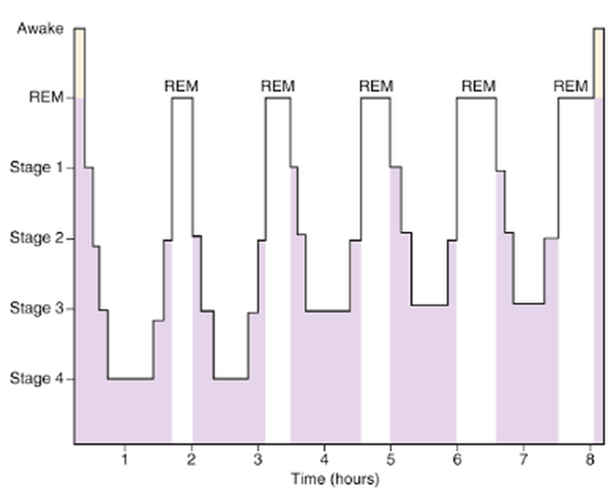
1.3 · Rapid eye movement sleep
- Occurs in episodes and occupies about 25% of a young adult’s sleep time; each episode recurs about every 90 minutes and lasts 5 to 30 minutes (slide 9).
- ★ When a person is extremely sleepy, each REM episode is short or even absent; as the person becomes more rested, REM episodes lengthen (slide 9).
- Rapid eye movement episodes when sleepy. When a person is extremely sleepy, each rapid eye movement episode is short or even absent. As the person becomes more restful and less sleepy, the duration of rapid eye movement episodes increases, so the later periods of a night are longer.
- Not the most restful sleep; associated with vivid dreaming; the brain is very active; the sleeper is not fully aware of surroundings and is asleep (slide 9).
- Active sleep (slide 10): dreaming and active bodily muscle movements, including rapid eye movements and irregular muscle movements. The person is more difficult to arouse by sensory stimuli than during NREM, yet people can awaken spontaneously in the morning during REM.
- Electrooculogram. The electrooculogram, the eye-movement recording, shows the irregular, sharply peaked eye movements of rapid eye movement sleep. The eye muscles are spared from the atonia that affects other voluntary muscles, so the eyes keep moving.
- Rapid eye movement sleep. Rapid eye movement sleep is the active, dreaming form of sleep: dreams are vivid, heart and breathing rates become irregular, and muscle tone is very depressed, with atonia of voluntary muscles except the eyes and diaphragm.
- Waking from rapid eye movement sleep. Rapid eye movement sleep is associated with vivid dreaming, and people can awaken spontaneously in the morning during rapid eye movement sleep; in a typical night the last rapid eye movement period leads into waking.
- Muscle tone is very depressed (inhibition of spinal muscle control areas); the slide 28 table: atonia of voluntary muscles except the eyes and diaphragm, from inhibited alpha motor neurons (slides 10, 28).
- Electromyogram. The electromyogram, the muscle recording, shows atonia of voluntary muscles in rapid eye movement sleep, sparing the eye muscles and diaphragm, as inactivity due to inhibited alpha motor neurons.
- Heart rate and respiratory rate become irregular (characteristic of the dream state); brain metabolism can rise by as much as 20% (slide 10).
- The EEG resembles wakefulness, so REM is also called paradoxical sleep (slide 10) and desynchronized sleep (a lack of synchrony in neuron firing; waves irregular and high frequency; often hard to tell from awake and active) (slide 29).
- Desynchronized sleep. Rapid eye movement sleep is also called desynchronized sleep because there is a lack of synchrony in neuron firing when there is brain activity. The tracing is irregular and high frequency, much like an awake, active person's.
1.4 · Slow-wave (non-rapid eye movement) sleep, and the comparison
- Extremely restful. The deep sleep in the first hour after going to sleep after more than 24 hours awake is this kind of sleep (slide 12).
- Decreased peripheral vascular tone and other vegetative functions: a 10–30% decrease in blood pressure, heart rate, respiratory rate and metabolic rate (slide 12). Physiologic changes: ★ increased parasympathetic tone; low blood pressure, slow heart rate, decreased respiratory rate; less vivid dreams (slide 14).
- Non-rapid versus rapid eye movement physiology. Non-rapid eye movement sleep brings increased parasympathetic tone with low blood pressure, a slow heart rate and a decreased breathing rate, part of a 10 to 30% fall in vegetative functions. In rapid eye movement sleep, heart and breathing rates become irregular instead.
- Often called the dreamless state, which is not always accurate: dreams and nightmares do occur in NREM. REM dreams carry more bodily muscle activity, and ★ NREM dreams are often not remembered because they are not consolidated in memory (slide 13).
| Slow-wave (NREM) sleep | Rapid eye movement (REM) sleep | |
|---|---|---|
| Restfulness | Deep, extremely restful | Not restful or deep |
| Dreams | Less vivid; often not remembered (no consolidation) | Vivid; with bodily muscle activity |
| Autonomic tone | Increased parasympathetic tone | Heart rate and breathing irregular |
| Blood pressure, heart rate, breathing, metabolism | 10–30% lower | Brain metabolism up by as much as 20% |
| Muscles | — | Tone very depressed (atonia except eyes and diaphragm); rapid eye movements and irregular movements |
| Arousal | N3 the hardest NREM stage to arouse | Harder to arouse by sensory stimuli than NREM; spontaneous morning waking can occur |
| EEG | Slows progressively to delta waves | Like wakefulness (paradoxical, desynchronized) |
Stage N3. Stage N3, also called deep sleep, is restful sleep and the deepest non-rapid eye movement stage, marked by delta waves. Body and tissue growth and repair occur in it, and it decreases with age.
Slides 6, 9, 10, 12–14, 28, 29
1.5 · Why sleep matters: the physiological functions
- Sleep restriction over a few days can decrease cognitive and physical performance, overall productivity and health (slide 16).
- Sleep restriction. Sleep restriction over a few days can decrease a person's cognitive and physical performance, overall productivity and health. That is one reason sleep is considered essential, even though its specific physiological functions are still being researched.
- Researchers have limited understanding of why sleep is essential; its specific physiological functions remain a mystery and are still researched (slide 16).
- Two major types of physiological effects: effects on the nervous system and effects on other functional systems of the body (slide 17).
- Other functions (slide 17): neural maturation; facilitation of learning or memory; targeted erasure of synapses to forget unimportant information that might clutter the synaptic network; cognition; clearance of metabolic waste products generated by neural activity in the awake brain; conservation of metabolic energy.
1.6 · The cycle between sleep and wakefulness
There is no definitive explanation of the sleep-wakefulness cycle, only proposed theories (slide 18):
- Sleep centers are not activated, so the mesencephalic and upper pontile reticular activating nuclei are released from inhibition and activate spontaneously.
- They excite the cerebral cortex and peripheral nervous system, which send positive feedback signals back to the same reticular nuclei: wakefulness sustains itself (slides 18–19).
- After many hours of activity the neurons of the activating system become fatigued, the positive feedback cycle between the mesencephalic reticular nuclei and the cortex fades, and the sleep-promoting centers take over: the transition from wakefulness to sleep (slide 19).
What ends wakefulness. After the brain has remained active for many hours, neurons in the activating system become fatigued. The positive feedback cycle between the mesencephalic reticular nuclei and the cerebral cortex fades, and the sleep-promoting centers take over.
1.7 · The four waveforms of a normal EEG
The intensity and pattern of electrical activity depend on the level of excitation of parts of the brain in sleep, wakefulness or brain disorders such as epilepsy or psychosis (slide 21).
| Wave | Frequency | Where and when |
|---|---|---|
| Alpha | 8–13 cycles/second, rhythmical | Almost all healthy adults awake in a quiet, resting state; most intense in the occipital region (also parietal and frontal); disappear during deep sleep; on the slide 28 table, awake with eyes closed |
| Beta | Greater than 14, as high as 80 cycles/second | Mainly parietal and frontal regions during specific activation; asynchronous, low voltage; the person is awake, alert and actively processing information |
| Theta | 4–7 cycles/second | Parietal and temporal regions in children; during emotional stress in some adults (especially disappointment and frustration); in many brain disorders, especially degenerative brain states |
| Delta | Less than 3.5 cycles/second | Voltages 2–4 times greater than most other brain waves; occur strictly in the cortex, independent of lower brain regions; in very deep sleep, infancy, serious organic brain disease, and the cortex of animals whose cortex was cut off from the thalamus (subcortical transection) |
What shapes the electroencephalogram. The intensity and patterns of electrical activity on the electroencephalogram are determined by the level of excitation of different parts of the brain, which varies with sleep, wakefulness and brain disorders such as epilepsy or psychosis.
- Alpha to beta (slide 24): when an awake person’s attention is directed to a specific mental activity, alpha waves stop and are replaced by beta waves; the slide 24 trace shows alpha disappearing when the eyes open and returning when they close.
Slides 21–26, 28
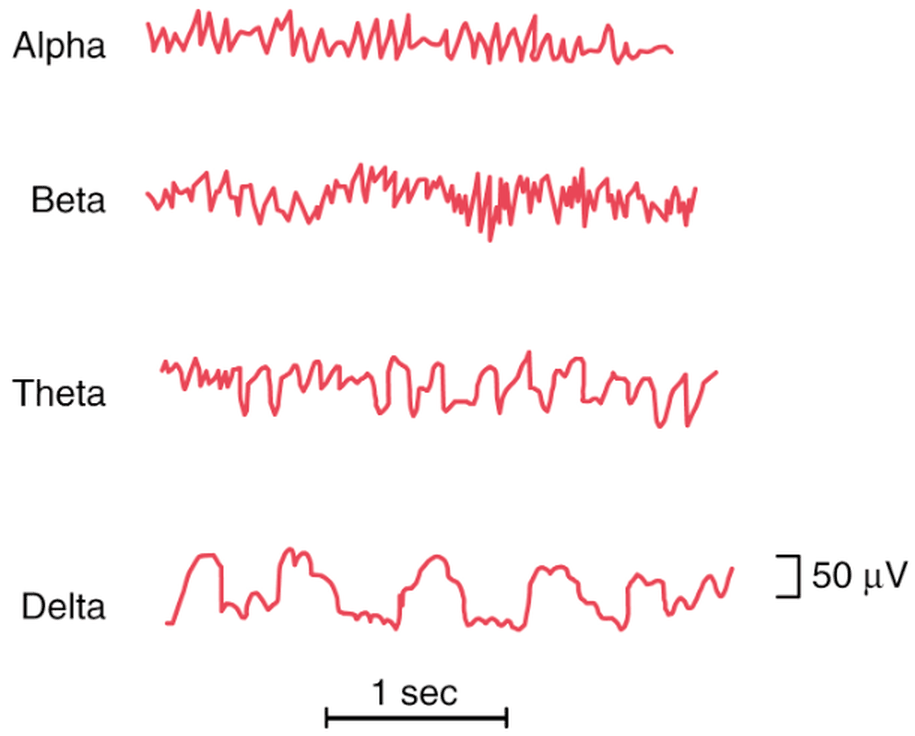
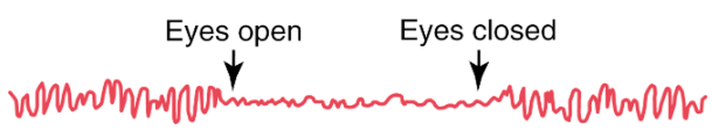
1.8 · EEG changes across wakefulness and sleep
- Alert wakefulness: high-frequency beta waves. Quiet wakefulness: alpha waves (slide 27).
- Slow-wave sleep: the first stage is light sleep with low voltage, broken by sleep spindles; the frequency becomes progressively slower through the stages until delta waves at the deepest stage (slide 27; four stages on that slide).
| Stage | Description | EEG |
|---|---|---|
| Awake, eyes open | Alert and active | Beta |
| Awake, eyes closed | Decreased alertness, relaxation | Alpha |
| N1 | Transition from wakefulness; somnolent or drowsy; light sleep | Theta |
| N2 | Less responsive, deeper sleep; heart rate and temperature decrease; longest stage by total duration | Theta; sleep spindles (bursts of monomorphic 12- to 14-Hz waves); K complexes (negative sharp waves followed by a positive component) |
| N3 (deep sleep, slow-wave sleep) | Restful sleep, deepest NREM stage; more difficult to arouse; body and tissue growth and repair; decreases with age | Delta |
| REM (stage R, the dream state) | EEG mixed and low voltage with sawtooth waves; rapid, irregular, sharply peaked eye movements; atonia of voluntary muscles except the eyes and diaphragm | Beta (like the awake state, but with atonia) |
Delta waves. Waves slower than 3.5 cycles per second with high voltage are delta waves, and delta waves mark stage N3, the deep, restful and deepest non-rapid eye movement stage, in which body and tissue growth and repair occur.
Rapid eye movement sleep versus wakefulness. In rapid eye movement sleep the waves are irregular and high in frequency, beta waves like those of an awake, active person, which makes it often difficult to tell rapid eye movement sleep from alert wakefulness. Atonia of voluntary muscles is the difference.
Slide 28 (table), with slides 27 and 29
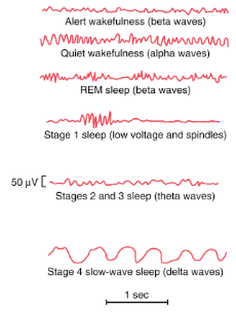
Memory aid (made here, not from the slides): going down into sleep the waves go down the alphabet’s speed: Busy (beta, eyes open) → At rest (alpha, eyes closed) → Tired (theta, N1 and N2) → Deep (delta, N3); then REM jumps back to beta.
2 · Obstructive Sleep Apnea and Obesity Hypoventilation Syndrome
Lecture 40 · Chand Shah, MPAS, PA-C, Assistant Professor · Monday 2 November 2026, 11 AM–12 PM
Instructional Objectives
OBSTRUCTIVE SLEEP APNEA AND OBESITY HYPOVENTILATION SYNDROME — Chand Shah, MPAS, PA-C
- Compare and contrast the etiologies, epidemiology, risk factors, clinical manifestations, differential diagnosis, diagnostic testing (including ordering and interpretation), management (acute and chronic, including applicable rehabilitative and palliative care), appropriate referrals, patient education, and prognosis for obstructive sleep apnea and obesity hypoventilation syndrome: a. Obstructive sleep apnea b. Central sleep apnea c. Obesity hypoventilation syndrome (also known as Pickwickian Syndrome)
- Discuss screening tools for obstructive sleep apnea
- Discuss the following complications of untreated obstructive sleep apnea and comorbidities of obstructive sleep apnea, including: a. Atrial fibrillation and cardiac arrythmias b. Pulmonary hypertension and right heart failure c. Heart failure d. Systemic hypertension e. Coronary artery disease f. Type 2 diabetes mellitus and metabolic syndrome g. Nonalcoholic fatty liver disease
- Identify medical care strategies for obstructive sleep apnea and obesity hypoventilation syndrome for the following populations. 1. adult 2. elderly
Quoted as the syllabus prints them (its spelling “arrythmias” kept; a stray empty “a.” before the disease list left out). Answered in order: a across 2.1–2.6 (obstructive sleep apnea), 2.9 (central sleep apnea) and 2.10 (obesity hypoventilation syndrome); b in 2.5; c in 2.8; d in 2.11. The deck’s objectives slide adds three of its own, answered in the same places: why obesity hypoventilation syndrome is a diagnosis of exclusion (2.10), central sleep apnea as a differential for obstructive sleep apnea (2.4, 2.9) and the STOP-Bang questionnaire (2.5).
What Prof. Shah stressed: the recording of Monday 2 November is not in yet. This section is built from the 38 slides; spoken emphasis, and anything she says is or is not tested, will be added from the recording. Until then the stars mark only what the slides emphasize (capitals, asterisks, the “gold standard” labels) and the STOP-Bang picture.
Where the slides are loose or disagree
- Neck size. As an obstructive sleep apnea risk factor and exam finding (slides 6–7): 17 inches or more in men, 16 in women (slide 7 writes “>17in”). On the STOP-Bang questionnaire (slide 17): 16 inches / 40 cm or larger, for anyone. Use each number inside its own tool.
- Body mass index. STOP-Bang counts more than 35 kg/m²; obesity for obesity hypoventilation syndrome is more than 30 (slides 30, 32).
- Sex. Obstructive sleep apnea: “Male > women” (slide 6), yet sleep-disordered breathing is more prevalent after menopause than before (slide 5). Obesity hypoventilation syndrome: “Male gender is not a risk factor” (slide 29), and the sleep-hypoventilation subgroup is “older females” (slide 30).
- Two “gold standards.” Slide 8 labels both the split-night and the all-night polysomnogram the gold standard for obstructive sleep apnea; slide 32 labels polysomnography with continuous nocturnal carbon dioxide monitoring the gold standard for obesity hypoventilation syndrome.
- Heart rate. Slide 21 lists both increased sympathetic tone and bradycardia among the cardiovascular effects of untreated obstructive sleep apnea.
- Severity by index. The mild / moderate / severe cut-offs of the apnea-hypopnea index are in the speaker notes only, not on a slide; this guide does not give them.
2.1 · Sleep-disordered breathing: the definitions
- Sleep-disordered breathing is divided into obstructive sleep apnea, central sleep apnea and sleep-related hypoventilation (slide 3).
- Apnea: a decrease in airflow of 90% or more, measured by thermistor, lasting at least 10 seconds; episodes of near or total cessation of breathing.
- Apnea and its obstructive type. An apnea is a 90% or greater fall in airflow on the thermistor lasting at least 10 seconds, and when airflow stops but respiratory effort continues, the apnea is obstructive. The airway collapses while the patient still tries to breathe.
- Hypopnea: slowed, shallow, restricted breathing in episodes of 10 seconds or longer, repeatedly during sleep.
| Apnea type (slide 3) | Airflow | Respiratory effort |
|---|---|---|
| Obstructive | None | Continued |
| Central | None | None |
| Mixed | None | Absent in the first part of the event, resumes in the latter part |
2.2 · Obstructive sleep apnea: who gets it and why
- The most common form of sleep-disordered breathing; prevalence increases with age; more prevalent in post-menopausal than premenopausal women (slide 5).
- Etiology: narrowing of the upper airway from excessive soft tissue or structural abnormalities (slide 5).
- Risk factors (slide 6): obesity; macroglossia; micrognathia; retrognathia; neck circumference 17 inches or more (men) and 16 (women); enlarged tonsils; increasing age; male more than female; family history; use of alcohol or sedatives; concomitant medical conditions such as hypothyroidism.
- Enlarged tonsils. Enlarged tonsils are a risk factor and examination finding of obstructive sleep apnea, alongside obesity, macroglossia, micrognathia, retrognathia, a thick neck and a crowded posterior oropharynx. They point to structural narrowing of the upper airway.
2.3 · Obstructive sleep apnea: presentation
| History (slide 7) | Physical exam (slide 7) |
|---|---|
| Daytime sleepiness; unrefreshing sleep; witnessed apnea; awakening with snorting or gasping; loud, habitual snoring; morning headaches; nocturia; poorly controlled hypertension; decreased concentration or memory, irritability; decreased libido; nocturnal sweating | Obesity; macroglossia; micrognathia; retrognathia; neck circumference over 17 inches (men) and 16 (women); enlarged tonsils; crowded posterior oropharynx |
Obstructive sleep apnea history and examination. Loud habitual snoring, witnessed apneas, awakening with gasping, unrefreshing sleep, morning headaches, nocturia and poorly controlled hypertension are its history findings, and a large neck and a crowded posterior oropharynx are its examination findings. Narrowing of the upper airway by soft tissue or structure causes it.
2.4 · Obstructive sleep apnea: differential and diagnosis
Differential (slide 10): central sleep apnea; nocturnal dyspnea (congestive heart failure); abnormal swallowing disorder; panic attacks; nocturnal asthma; gastroesophageal reflux disease; nocturnal seizures; other causes of daytime sleepiness (narcolepsy, periodic limb movement disorder).
- Thyroid-stimulating hormone if hypothyroidism is suspected.
- Split-night polysomnogram (gold standard): the first 2 hours of sleep are recorded to determine severity, then continuous positive airway pressure (CPAP) titration if the apnea is significant (finding the exact pressure that keeps the airway open).
- All-night polysomnogram (gold standard): performed if sleep-disordered breathing is mild to moderate at baseline; shows severity in different stages of sleep and sleep positions.
- Positive airway pressure titration: used if the diagnosis is already known.
- Home testing kits: assess only obstructive sleep apnea, not other sleep disorders; will not always diagnose mild disease (helpful for moderate to severe). Use a polysomnogram, not a home kit, with significant cardiopulmonary disease, neuromuscular weakness, awake hypoventilation or hypoxemia, stroke, long-term opioid use, severe insomnia, or concern for a non-obstructive sleep disorder.
| Index (slide 9) | Formula |
|---|---|
| Respiratory disturbance index | (apneas + hypopneas + respiratory effort-related arousals) ÷ total sleep time in hours |
| Apnea-hypopnea index | (apneas + hypopneas) ÷ total sleep time in hours |
A respiratory effort-related arousal is an obstructive reduction of the upper airway that is not an apnea or hypopnea. The diagnosis is confirmed when either criterion is met and the symptoms are not explained by another medical or sleep condition, medication or substance use:
- 5 or more predominantly obstructive respiratory events per hour of sleep plus one symptom: sleepiness, fatigue, insomnia or other symptoms impairing sleep-related quality of life; waking with breath holding, gasping or choking; or habitual snoring or breathing interruptions noted by a bed partner or other observer; or
- 15 or more predominantly obstructive respiratory events (no symptom needed; the slide gives no time unit for this one).
Negative home sleep apnea test. At-home kits will not always diagnose mild obstructive sleep apnea; they are most helpful in moderate to severe disease. A negative home study with ongoing snoring and sleepiness therefore needs a polysomnogram, which can also find other sleep disorders a home kit cannot assess.
2.5 · Screening: the STOP-Bang questionnaire
- Screening questionnaires should not be routinely used to screen for obstructive sleep apnea in the community, and STOP-Bang cannot be used as a true, accurate screening tool in asymptomatic patients (slide 16).
- STOP-Bang has been used as a preoperative evaluation tool for people without a known diagnosis who may be at risk of perioperative complications; it has the highest sensitivity of all the questionnaires; it has some value in highly symptomatic patients in high-risk settings such as preoperative evaluation (slide 16).
| Letter | Question |
|---|---|
| Snoring | Snore loudly (heard through closed doors, or the bed partner elbows you)? |
| Tired | Often tired, fatigued or sleepy in the daytime (such as falling asleep driving or talking)? |
| Observed | Has anyone observed you stop breathing or choking/gasping in your sleep? |
| Pressure | Have or being treated for high blood pressure? |
| BMI | Body mass index more than 35 kg/m²? |
| Age | Older than 50? |
| Neck size | Neck (shirt collar) 16 inches / 40 cm or larger? |
| Gender | Male? |
General population: low risk = yes to 0–2; intermediate = 3–4; high = 5–8; or high risk with yes to 2 or more of the 4 STOP questions plus male gender, or plus body mass index over 35 kg/m², or plus neck circumference 16 inches / 40 cm.
| For general population (slide 17) | Score |
|---|---|
| Obstructive sleep apnea (OSA) – Low Risk | Yes to 0–2 questions |
| OSA – Intermediate Risk | Yes to 3–4 questions |
| OSA – High Risk | Yes to 5–8 questions or Yes to 2 or more of 4 STOP questions + male gender or Yes to 2 or more of 4 STOP questions + body mass index (BMI) > 35 kg/m² or Yes to 2 or more of 4 STOP questions + neck circumference 16 inches / 40 cm |
STOP-Bang worked total (4 and 3). Snoring 1 + observed apnea 1 + body mass index above 35 1 + neck 16 inches or larger 1 = 4; tiredness, pressure, age and gender (female) score 0. A total of 4 is intermediate, but yes to 2 of the first four questions plus a body mass index above 35 makes high risk. Snoring 1 + pressure 1 + age older than 50 1 = 3 is intermediate risk, and no combination rule applies.
High risk despite a total below 5. Snoring and tiredness are 2 of the first four questions, and a neck of 16 inches (40 cm) or larger completes a high-risk combination. The total is only 3, yet the person is high risk, as with 2 or more of the first four plus male gender or a body mass index above 35.
STOP-Bang risk bands. Snoring 1 + treated pressure 1 + age older than 50 1 + neck 17 inches 1 + male 1 = 5, the high-risk band (5 to 8); body mass index 35 does not count because it is not more than 35. Two yes answers to the first 4 questions plus male gender also make high risk. The low-risk band is 0 to 2: the body mass index rule needs 2 or more yes answers to the first 4 questions.
STOP-Bang worked example, score of 3. Snoring 1 + tired 1 + observed apnea 0 + pressure 0 + body mass index 38 (more than 35) 1 + age 50 (not older than 50) 0 + neck 15 inches 0 + female 0 = 3: intermediate by the count alone (3 to 4), but 2 yes answers to the first 4 questions plus a body mass index above 35 meet the questionnaire's added high-risk rule.
STOP-Bang worked example, score of 6. Snoring 1 + tired 0 + observed apnea 1 + treated pressure 1 + body mass index 33 (not more than 35) 0 + age 56 (older than 50) 1 + neck 16.5 inches (16 or larger) 1 + male 1 = 6; a score of 5 to 8 is the high-risk group for obstructive sleep apnea.
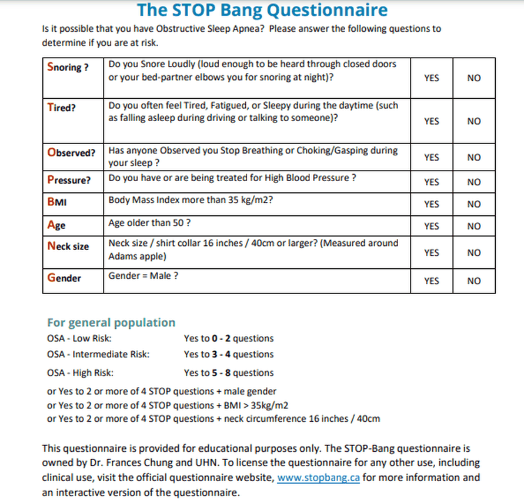
2.6 · Obstructive sleep apnea: management, education and referral
| Type | What the slides say |
|---|---|
| Non-pharmacologic (slide 12) | Continuous positive airway pressure (CPAP): the most effective. Autotitrating (adjustable) positive airway pressure: for patients without significant comorbid conditions. Positional therapy if events occur when supine (a sleep belt or shirt keeps the lateral position). Oral appliance: not effective in severe disease or if the patient has no teeth. Nasal expiratory resistance device (uses the patient’s own breathing to make expiratory positive airway pressure). |
| Pharmacologic (slide 11) | Stimulants (modafinil or armodafinil): side effects headache, nervousness or anxiety, dizziness, nausea, dermatologic and systemic hypersensitivity; many drug interactions; caution with cardiovascular, hepatic and psychiatric conditions; lower doses in the elderly. Nasal steroids for nasal congestion or inflammation from allergic rhinitis. |
| Surgical (slide 13) | Radiofrequency ablation (mild to moderate disease, cannot tolerate CPAP); palatal implants (mild disease, cannot tolerate CPAP); maxillomandibular advancement; tracheostomy is a cure (it bypasses the site of upper airway obstruction); bariatric surgery for weight loss may help. |
| Risk modification (slide 15) | Diet and exercise for weight loss; avoid alcohol and other sedatives. |
| Education (slide 15) | Refer to a sleep physician; proper counseling. |
Modafinil and armodafinil cautions. These stimulants need caution in patients with cardiovascular, hepatic or psychiatric conditions, so liver disease calls for care. They also have many potential drug interactions, and elderly patients receive lower doses.
Modafinil and armodafinil side effects. Listed side effects include headaches, nervousness or anxiety, dizziness, nausea, and dermatologic and systemic hypersensitivities. A widespread rash with feeling unwell after starting the drug fits a dermatologic and systemic hypersensitivity reaction.
Positive airway pressure at home (slide 14; the slide puts no labels on these photographs)
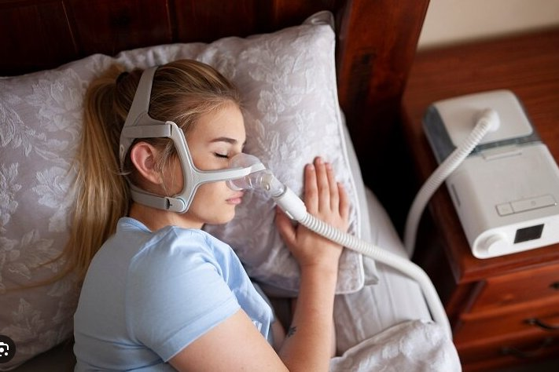
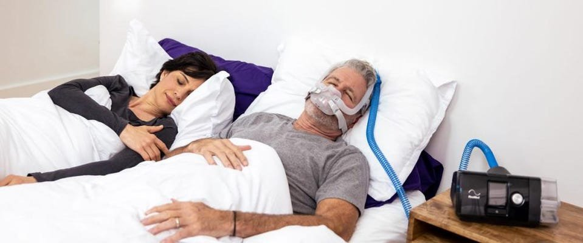
Obstructive sleep apnea
Defining feature: loud habitual snoring and witnessed apneas with daytime sleepiness in an obese patient with a large neck, from upper airway narrowing while respiratory effort continues
- Definition
- Sleep-disordered breathing with no airflow but continued respiratory effort, from narrowing of the upper airway by excess soft tissue or structural abnormality.
- Who gets it
- The most common form of sleep-disordered breathing; prevalence rises with age; men more than women; post-menopausal more than premenopausal women.
- Risk factors
- Obesity, macroglossia, micrognathia, retrognathia, neck 17 inches or more (men) or 16 (women), enlarged tonsils, age, male sex, family history, alcohol or sedatives, hypothyroidism.
- Classic signs & symptoms
- Daytime sleepiness, unrefreshing sleep, witnessed apnea, snorting or gasping awakenings, loud habitual snoring, morning headache, nocturia, poorly controlled hypertension.
- Physical exam findings
- Obesity, large tongue, small or set-back jaw, large neck, enlarged tonsils, crowded posterior oropharynx.
- Diagnostics / tests
- Polysomnogram (split-night or all-night): 5 or more obstructive events per hour plus a symptom, or 15 or more; thyroid-stimulating hormone if hypothyroidism suspected; home kits only without the listed comorbidities.
- First-line treatment
- Continuous positive airway pressure (most effective), weight loss, avoid alcohol and sedatives; positional therapy, oral appliance, surgery for selected patients; refer to a sleep physician.
- Complications
- Hypertension, cardiovascular disease, arrhythmias, sudden cardiac death at night, heart failure, pulmonary hypertension, stroke, insulin resistance and diabetes, fatty liver, reflux, motor vehicle crashes.
Slides 3, 5–13, 15–22
2.7 · What happens if obstructive sleep apnea is left untreated
| Mortality | Morbidity |
|---|---|
| 2.5 times the driving accidents 3–6 times the risk of sudden cardiac death AT NIGHT High mortality from heart failure | 3 times the risk of hypertension Pulmonary hypertension Stroke Insulin resistance Arrhythmias Ischemic heart disease |
- Reflux (slide 19): 75–100% of patients have gastroesophageal reflux disease or laryngopharyngeal reflux from decreased intrathoracic pressure; it improves with CPAP.
- Cardiovascular effects (slide 21): increased sympathetic tone; bradycardia; increased blood pressure variability; increased arrhythmias; increased risk of aortic aneurysm and aortic dissection.
- Endocrine effects (slide 21): increased C-reactive protein, cortisol and amyloid; decreased growth hormone and prolactin. Immunity (slide 22): increased proinflammatory cytokines, which improve with CPAP.
- Also (slides 15, 20): increased motor vehicle crashes from daytime sleepiness; increased risk of gout.
2.8 · The syllabus complications and comorbidities, one by one
| Syllabus item | What the slides say |
|---|---|
| Atrial fibrillation and cardiac arrhythmias | Arrhythmias (slide 18); increased arrhythmias, bradycardia, increased sympathetic tone (slide 21); 3–6 times the risk of sudden cardiac death at night (slide 18). Atrial fibrillation is not named on the slides. |
| Pulmonary hypertension and right heart failure | Pulmonary hypertension (slide 18). Obstructive sleep apnea is classified with group 3 pulmonary hypertension, especially with obesity hypoventilation syndrome or another cause of daytime hypoxemia (slide 20). Right-sided heart failure from pulmonary hypertension is given for obesity hypoventilation syndrome (slides 30, 34, 35). |
| Heart failure | High mortality from heart failure (slide 18); congestive heart failure is a complication of obesity hypoventilation syndrome (slide 34). |
| Systemic hypertension | 3 times the risk (slide 18); hypertension (slide 15); increased blood pressure variability (slide 21); poorly controlled hypertension in the history (slide 7). |
| Coronary artery disease | Ischemic heart disease (slide 18); cardiovascular disease (slide 15); markers of inflammation and atherosclerosis (slide 20). |
| Type 2 diabetes mellitus and metabolic syndrome | Increased insulin resistance, type 2 diabetes and diabetes complications; increased glucose and triglycerides independently associated; may exacerbate cardiovascular risk in metabolic syndrome (slide 20); insulin resistance (slides 15, 18). |
| Nonalcoholic fatty liver disease | 2–3 times the prevalence (slide 20). |
Pulmonary hypertension in obstructive sleep apnea. Obstructive sleep apnea is classified with group 3 pulmonary hypertension, especially when it coexists with obesity hypoventilation syndrome or another cause of daytime hypoxemia. Right-sided heart failure from pulmonary hypertension is a late feature of obesity hypoventilation.
2.9 · Central sleep apnea
- The brainstem stops sending signals to breathe: increased sensitivity to arterial carbon dioxide gives an unstable pattern of hyperventilation alternating with apnea. In central apnea airflow stops because respiratory effort is absent or decreased; in obstructive apnea the airway collapses while the patient still tries to breathe. Less common than obstructive sleep apnea (slide 24).
- Risk factors (slide 24): congestive heart failure (especially from Cheyne-Stokes breathing, caused by a prolonged circulation delay between the pulmonary capillaries and the carotid chemoreceptors); stroke; opioid medications; hypoxia; high altitude; patients using CPAP.
- Presentation (slide 25): insomnia, frequent awakenings, nocturnal dyspnea, nonrestorative sleep, daytime sleepiness; snoring is less common than in obstructive apnea; it sounds very similar to obstructive sleep apnea.
- Diagnosis (slide 26): polysomnography (home testing is not sufficient): repetitive apneas in the absence of thoracic-abdominal excursion.
- Treat the underlying cause: heart failure → optimize heart failure therapy; opioids → reduce the opioids; high altitude → descend.
- Consider CPAP first.
- If CPAP fails, consider adaptive servo-ventilation, a positive airway pressure therapy that monitors breathing in real time and adjusts the pressure.
** Adaptive servo-ventilation is not used for all patients, for safety reasons, especially in heart failure with reduced ejection fraction: with poor left ventricular function, reducing preload can decrease cardiac output; Cheyne-Stokes breathing can be a protective mechanism.
Central sleep apnea
Defining feature: repetitive apneas with no thoracic-abdominal movement on polysomnography, in a patient with heart failure, stroke, opioids or altitude
- Definition
- Sleep-disordered breathing in which the brainstem stops signaling breathing: no airflow and no respiratory effort.
- Who gets it
- Less common than obstructive sleep apnea; patients with heart failure, stroke, opioid use, hypoxia, high altitude or on CPAP.
- Risk factors
- Congestive heart failure (Cheyne-Stokes breathing), stroke, opioid medications, hypoxia, high altitude, CPAP use.
- Classic signs & symptoms
- Insomnia, frequent awakenings, nocturnal dyspnea, nonrestorative sleep, daytime sleepiness; less snoring than obstructive apnea.
- Physical exam findings
- Not covered on the slides beyond the underlying cause.
- Diagnostics / tests
- Polysomnography (home testing not sufficient): repetitive apneas without thoracic-abdominal excursion.
- First-line treatment
- Treat the cause (optimize heart failure therapy, reduce opioids, descend); then CPAP; adaptive servo-ventilation if CPAP fails, avoided especially in heart failure with reduced ejection fraction.
- Complications
- Not covered on the slides.
Slides 3, 10, 24–26
2.10 · Obesity hypoventilation syndrome (Pickwickian syndrome)
- Definition (slide 28): awake alveolar hypoventilation (raised awake arterial carbon dioxide) in an obese person that cannot be attributed to other conditions associated with alveolar hypoventilation. More likely as body mass index increases; associated with increased cardiovascular morbidity and mortality.
- Risk factors (slide 29): central obesity (high waist-to-hip ratio); reduced lung function from obesity; reduced inspiratory muscle strength; severe obstructive sleep apnea. Male gender is not a risk factor. Patients may present in their 50s and 60s.
- Presentation (slide 30): symptoms are not specific and reflect obesity, coexisting obstructive sleep apnea and complications such as pulmonary hypertension. Obese (body mass index over 30) and hypersomnolent. 90% have coexisting obstructive sleep apnea symptoms (70% severe): daytime hypersomnolence, loud snoring, choking during sleep, resuscitative snorting, fatigue, impaired concentration and memory, small oropharynx, thick neck. 10% have coexisting sleep hypoventilation: fewer witnessed apneas, older females. Many present late, with end-stage disease: severe hypoxemic hypercapnic respiratory failure, right-sided heart failure from pulmonary hypertension.
Screen an obese person (with or without obstructive sleep apnea) who has: unexplained awake room-air oxygen saturation of 94% or less, or an overnight lowest saturation below 80%; unexplained dyspnea on exertion; signs of pulmonary hypertension or right-sided heart failure (elevated jugular venous pressure, hepatomegaly, pedal edema); facial plethora (facial swelling, puffiness); a raised bicarbonate on labs.
| Diagnosis of exclusion: all three |
|---|
| Obesity: body mass index over 30 |
| Awake alveolar hypoventilation: arterial carbon dioxide pressure over 45 mm Hg |
| Alternative causes of hypercapnia and hypoventilation excluded |
Labs: comprehensive metabolic panel, complete blood count, thyroid function tests, pulmonary function tests, chest film, toxicology screen, serum bicarbonate (when suspicion is low to moderate: over 27 means a higher chance of obesity hypoventilation syndrome and the need for an arterial blood gas). Gold standard: polysomnography with continuous nocturnal carbon dioxide monitoring.
Workup of obesity hypoventilation syndrome. Obesity hypoventilation syndrome is a diagnosis of exclusion: alternative causes of hypercapnia and hypoventilation must be excluded. The workup therefore includes a metabolic panel, blood count, thyroid function tests, pulmonary function tests, chest radiograph and toxicology screen.
| Management (slide 33) | What the slide says |
|---|---|
| Approach | Multidisciplinary |
| First line | Weight loss program + BiPAP (bilevel positive airway pressure) or CPAP: with obstructive sleep apnea, CPAP; with sleep-related hypoventilation, BiPAP. Lifestyle: diet, exercise, behavioral change. |
| Second line (fail or cannot tolerate first line) | Tracheostomy with nocturnal ventilation is very effective; bariatric surgery may help; medications only for those who fail diet and exercise. |
- Complications (slide 34): pulmonary hypertension, right-sided heart failure, daytime sleepiness, hypertension, congestive heart failure, insulin resistance. Education: refer to a sleep specialist; proper counseling.
- Prognosis (slide 35): high mortality and morbidity; tends to progress untreated, many developing pulmonary hypertension and right-sided heart failure; leading cause of death: cardiovascular disease; higher hospitalization rates, more likely to need intensive care, intubation or long-term care at discharge; worse health status and more health care use; poor prognosis with significant awake hypoxemia at diagnosis and on positive airway pressure therapy (how therapy affects the cardiovascular complications is unsure).
Obesity hypoventilation syndrome
Defining feature: an obese patient (body mass index over 30) with awake arterial carbon dioxide over 45 mm Hg that no other cause explains, usually with severe obstructive sleep apnea
- Definition
- Awake alveolar hypoventilation in an obese person not attributable to another cause (Pickwickian syndrome).
- Who gets it
- Obese adults, more likely as body mass index rises, often presenting in their 50s and 60s; male sex is not a risk factor.
- Risk factors
- Central obesity, reduced lung function from obesity, weak inspiratory muscles, severe obstructive sleep apnea.
- Classic signs & symptoms
- Hypersomnolence and the symptoms of coexisting obstructive sleep apnea (90%); dyspnea on exertion; late presentation with respiratory failure.
- Physical exam findings
- Obesity, thick neck, small oropharynx, facial plethora, elevated jugular venous pressure, hepatomegaly, pedal edema.
- Diagnostics / tests
- Screen: awake saturation 94% or less, nocturnal nadir below 80%, raised bicarbonate (over 27 calls for a blood gas). Diagnose by exclusion; gold standard polysomnography with continuous carbon dioxide monitoring.
- First-line treatment
- Weight loss plus CPAP (with obstructive apnea) or BiPAP (with sleep hypoventilation); second line tracheostomy with nocturnal ventilation or bariatric surgery; refer to a sleep specialist.
- Complications
- Pulmonary hypertension, right-sided heart failure, congestive heart failure, hypertension, insulin resistance; cardiovascular death.
Obesity criterion. Obesity for this diagnosis means a body mass index above 30 kg/m2, together with awake arterial carbon dioxide above 45 mmHg and exclusion of other causes. The syndrome becomes more likely as body mass index increases, and patients are typically obese and hypersomnolent.
Slides 28–35
2.11 · Adults and older adults
| Domain | Adults | Older adults |
|---|---|---|
| Who | Obstructive sleep apnea rises with obesity, male sex, alcohol and sedatives; obesity hypoventilation often presents in the 50s and 60s | Prevalence of obstructive sleep apnea increases with age (slide 5); STOP-Bang counts age over 50 (slide 17) |
| Untreated disease | Hypertension, cardiovascular disease, crashes, metabolic disease | Mortality from obstructive sleep apnea is lower in the elderly because they compensate, but they still have drowsiness and nocturia, which improve with CPAP (slide 22) |
| Drugs | Stimulants for residual sleepiness; caution with cardiovascular, hepatic and psychiatric disease | Lower stimulant doses in the elderly (slide 11) |
| Referral | Sleep physician or sleep specialist; counseling (slides 15, 34) | The same |
Treating the elderly. Mortality from obstructive sleep apnea is lower in the elderly because they compensate, but they still have drowsiness and nocturia, and both improve with continuous positive airway pressure.
3 · Inflammatory Lung Diseases
Lecture 41 · Rob Gray, DMSc, PA-C, Adjunct Instructor (guest lecturer) · Monday 2 November 2026, 1–3 PM
Instructional Objectives
INFLAMMATORY LUNG DISEASES — Rob Gray, DMSc, PA-C
- Compare and contrast the etiologies, epidemiology, risk factors, clinical manifestations, differential diagnosis, diagnostic testing (including ordering and interpretation), management (acute and chronic, including applicable rehabilitative and palliative care), appropriate referrals, patient education, and prognosis of the following inflammatory lung diseases: 2. Interstitial lung disease of unknown etiology: a. Sarcoidosis b. Idiopathic pulmonary fibrosis (IPF) c. Pulmonary fibrosis associated with connective tissue disorders (CTD) 3. Interstitial lung disease of known etiology: a. Occupational lung diseases 4. Hypersensitivity pneumonitis 5. Pneumoconiosis 6. Asbestosis 7. Silicosis 8. Idiopathic interstitial pneumonia 9. Acute respiratory disease syndrome (ARDS)
- Identify medical care strategies for inflammatory lung disease in the lecture topic list for the following populations. 11. adult 12. elderly
Quoted as the syllabus prints it, its own numbering kept (it numbers the disease list 2–9 and the populations 11–12, and prints “Acute respiratory disease syndrome” for acute respiratory distress syndrome). Answered in order: 1 across 3.1–3.11 (the common ground of interstitial lung disease 3.1–3.3; unknown etiology: idiopathic interstitial pneumonia and idiopathic pulmonary fibrosis 3.4, connective tissue disease 3.5, sarcoidosis 3.6; known etiology, the occupational diseases: pneumoconiosis 3.7, asbestosis 3.8, silicosis 3.9, hypersensitivity pneumonitis 3.10; acute respiratory distress syndrome 3.11); 2 in 3.12.
What Dr. Gray stressed, and what he said is and is not tested (his own narrated recording of the deck, 66 minutes; our machine transcript, quotes checked against the slides; every fact below still comes from the slides).
- History is the clue. He says it five times: “every board question is going to have … a person showing up at a place with a thing … What’s their occupation? … What are their hobbies?” and, closing, “The presentation may be same, but their history will be your indicator.” Most of these diseases share exertional dyspnea, a dry cough and crackles; the job, the exposure and the timing separate them.
- Do not memorize the charts. The cause and drug tables (slides 9–10, 15–16) are “there for your reference”: know that many drugs cause interstitial disease over time, and the short list he repeats (methotrexate, amiodarone, nitrofurantoin, chemotherapy, radiation).
- Rare subtypes are not test material: “Am I gonna go like hey, is that desquamative interstitial pneumonia on a test? No.” The steroid-responsive idiopathic subtypes are “pretty rare … don’t find your way too far down the rabbit hole.” Churg-Strauss and Wegener: “you’re not gonna get like a lot of … questions.” The sarcoid immunology slide (41): “I’m not spending a lot of time on this.”
- What he does point at: idiopathic pulmonary fibrosis “is kind of the most common thing”; “Sarcoid, you could see questions about”; the laboratory clue slide (25): “I would pay attention to this slide”; lupus pernio with a dry cough is a “red flag for … consider sarcoid”; ferruginous bodies mean “ah, asbestos”; a thick, milky lavage is “usually confirmatory of … a silicosis”; hypersensitivity pneumonitis: “find the agent, avoid the agent.”
- The acute respiratory distress syndrome pictures were made with an AI tool: “do not lose your minds about it … shock, they literally say Chuck … I’ll be specific about it where it’s important.” He calls the syndrome “a feared complication” (“You don’t have spontaneous ARDS”), and recommends the StatPearls article as background (not testable slide content).
- Time on topic (minutes of narration): acute respiratory distress syndrome 11; the common ground of interstitial disease 12 (2 of them on the “don’t memorize” charts); sarcoidosis 8; presentation and workup 8; idiopathic interstitial pneumonia and pulmonary fibrosis 7; asbestosis and mesothelioma 5; hypersensitivity pneumonitis 4; coal workers’ pneumoconiosis 4; connective tissue and granulomatous disease 4; silicosis 3. The practice sets follow these shares.
Where the slides are loose or disagree
- Milky lavage. Slide 62 gives a thick, milky lavage with foamy, lipoproteinaceous macrophages for silicosis; current references tie that appearance mainly to acute silicosis (silicoproteinosis). Learn it as the slide and the lecturer give it.
- Slide 74 recovery box. The heading reads “Monitor Restrictive Defects” while its text says “residual diffusion deficits and obstructive changes often persist.”
- Slides 72–74 are generated pictures on acute respiratory distress syndrome with typing errors (“chuck” for shock, “protomine” for protamine, “AROS” for ARDS). Read for meaning; the facts below are what they plainly show.
- Plateau pressure. Slide 74 says low tidal volumes “constrain ventilatory plateau pressures under 50 cm H2O” (he does not mention the number on the recording). Current guidelines use 30 cm H2O; no question here turns on the number.
- Connective tissue disease: known or unknown cause? The slide 12 classification (Harrison’s) files it under interstitial lung disease of known cause (systemic disease); slide 18 and the syllabus put pulmonary fibrosis with connective tissue disease under unknown etiology.
- What is most common. Slide 3 says interstitial lung disease is “largely due to occupational and environmental exposure”; slides 15, 31 and 32 make idiopathic interstitial pneumonia, and idiopathic pulmonary fibrosis within it, the most common diagnosis. The slide 15 percentages add up to well over 100%.
- Silicosis onset. Slide 60: the simple disease is “usually asymptomatic”; slide 61: “Rapid onset of symptoms.”
- Steroids for silicosis appear only on the coal workers’ pneumoconiosis management slide (slide 54: “may relieve the chronic alveolitis in silicosis”).
- Angiotensin-converting enzyme. Slide 25 lists an elevated level for “sarcoidosis, hypersensitivity silicosis”; slide 44 gives it for sarcoidosis (elevated in 40–80%; on the recording he says “about half to 80%”).
- Why coal sits high. On the recording he first credits “the weight of the coal dust,” then says it is “pretty light”; the slides give the upper lung fields for coal without a reason, and “lighter dust” for silica (slide 60).
- Steroids in acute respiratory distress syndrome. He says “Steroids are gonna be huge, usually within the first 14 days”; the slide 74 picture says guidelines “conditionally support” corticosteroids within 14 days. Learn the slide’s wording.
3.1 · Interstitial lung disease: what it is and what causes it
- A broad category of more than 200 disorders, hard to classify, characterized by scarring (fibrosis) and/or inflammation of the lungs. It involves the parenchyma, the gas-transfer portion (alveoli, alveolar ducts, respiratory bronchioles): alveolar septal thickening, fibroblast proliferation, collagen deposition and, if prolonged, pulmonary fibrosis. Not malignant and not infectious (slide 3).
- What it means (slides 4–5): injury causes inflammation and fibrosis that impair ventilation and gas exchange; scarring damages the alveoli, most often permanently; tissue becomes stiff and restrictive, so patients most commonly present with shortness of breath. Fibrosis is permanent scar tissue, a response to inflammation.
- Pathophysiology (slide 6): macrophages, lymphocytes, monocytes and neutrophils accumulate in alveolar walls → alveolitis → fibroblast production → collagen, which causes the fibrosis. Slide 7: exogenous and endogenous stimuli (dust, fumes, cigarette smoke, autoimmune conditions; drugs, infections, radiation) cause microscopic lung injury; intact wound healing returns the lung to homeostasis, aberrant healing (genetic predisposition, autoimmune conditions) gives pulmonary fibrosis.
- Two groups (slide 11): inflammation and fibrosis, and granulomatous reactions; each divided into known and unknown causes; most have acute and chronic stages.
- Most common of KNOWN etiology (slide 13): occupational or environmental exposures: inorganic dusts, organic dusts, fumes and gases. ★ Take the occupational and exposure history: it is the clue to the known causes. Most common of UNKNOWN etiology (slide 14): sarcoidosis, idiopathic pulmonary fibrosis, pulmonary fibrosis with connective tissue disorders.
- Occupational and environmental exposures. Exposures are grouped as inorganic dusts, organic dusts and fumes or gases. Stone work releases free crystalline silica, and pneumoconiosis is caused by inhaled coal dust or various inorganic or silicate dusts, so stone work is an inorganic dust exposure.
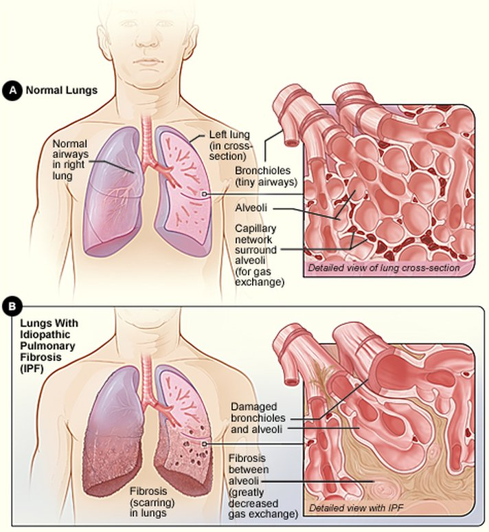
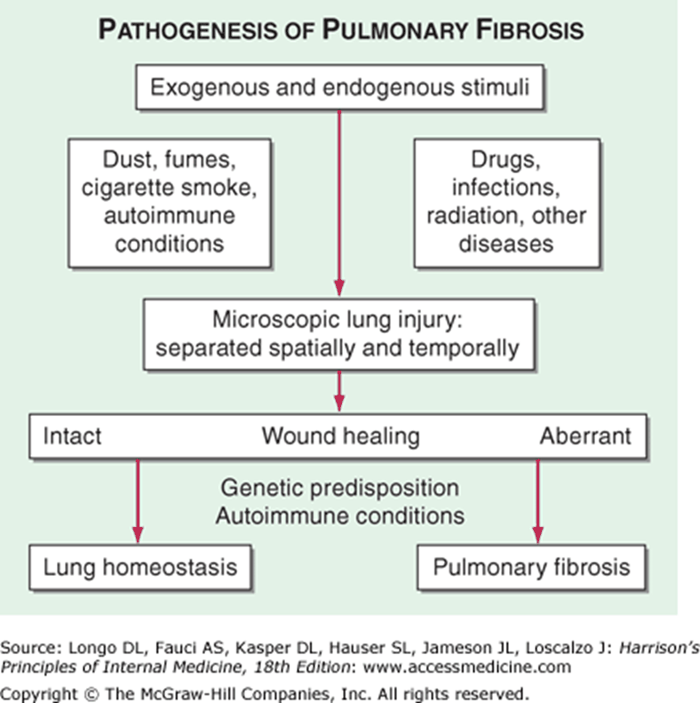
Lung specimens shown after the fibrosis slides (slide 8 labels them only A and B)
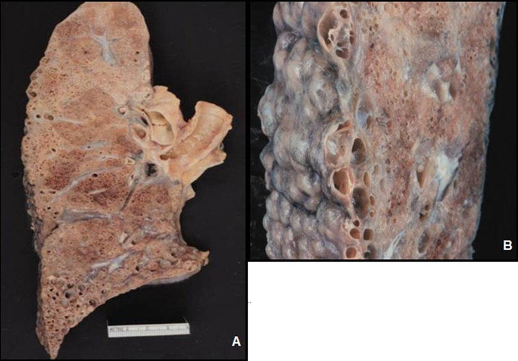
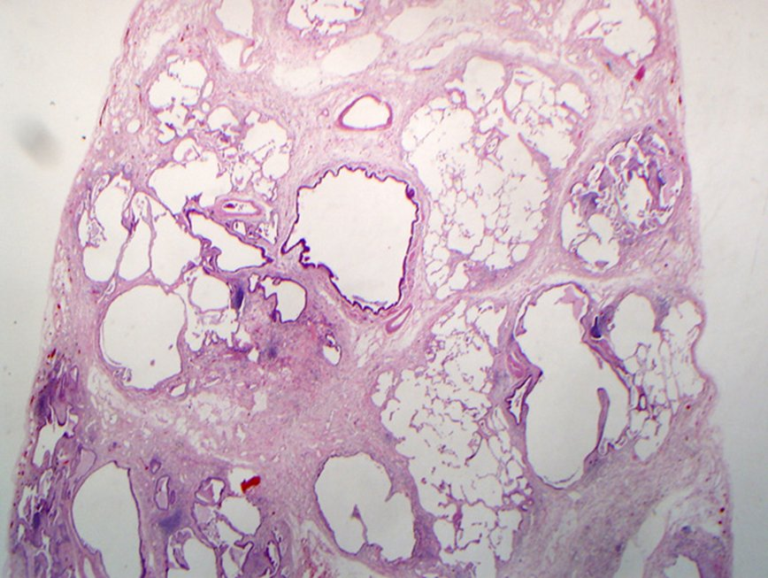
| Classification (slide 12) | Examples |
|---|---|
| Known cause: occupational exposure | Asbestosis, silicosis |
| Known cause: treatment related | Radiation, methotrexate, amiodarone, nitrofurantoin, chemotherapeutics |
| Systemic disease: connective tissue disease | Rheumatoid arthritis, scleroderma, polymyositis/dermatomyositis |
| Unknown cause: idiopathic interstitial pneumonias | Idiopathic pulmonary fibrosis; nonspecific interstitial pneumonia, respiratory bronchiolitis-associated interstitial lung disease, desquamative interstitial pneumonia, cryptogenic organizing pneumonia, acute interstitial pneumonia, lymphocytic interstitial pneumonia |
| Granulomatous lung disease | Sarcoidosis, hypersensitivity pneumonitis; with vasculitis: granulomatosis with polyangiitis, Churg-Strauss |
| Other | Lymphangioleiomyomatosis, pulmonary alveolar proteinosis, Langerhans cell histiocytosis, pleuroparenchymal fibroelastosis |
Drug-induced interstitial lung disease. Nitrofurantoin is one of the treatment-related causes of interstitial lung disease, beside radiation, methotrexate, amiodarone and chemotherapeutics, and it is also named among drugs that cause pulmonary toxicity. Exertional dyspnea, dry cough, crackles and restriction after years of use fit a drug cause.
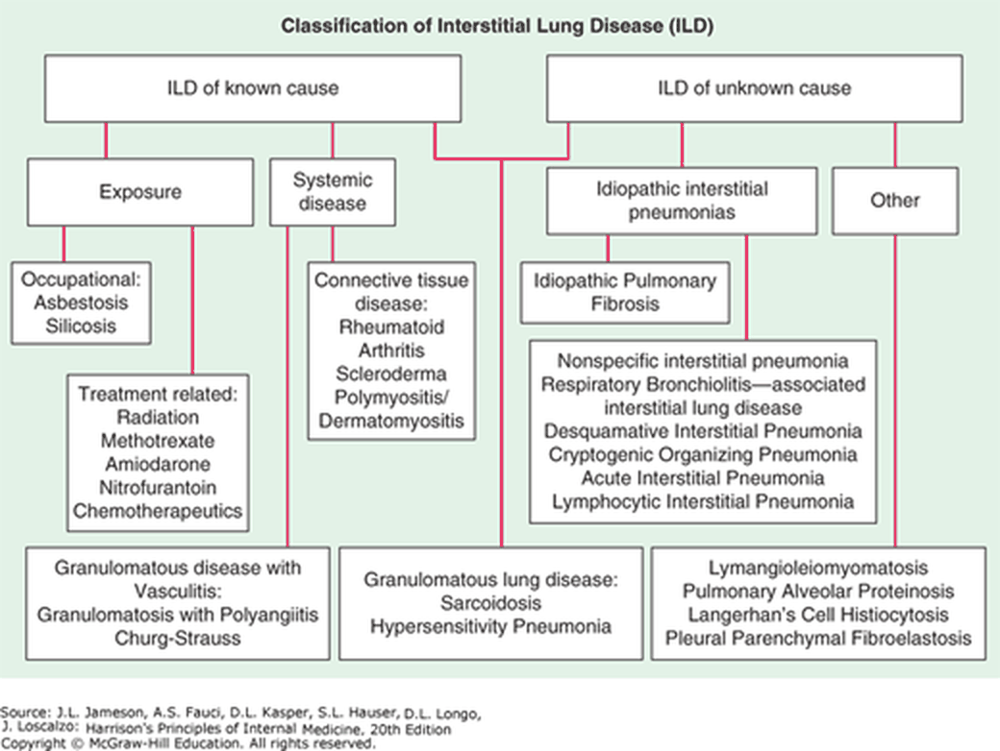
- Drug causes (slide 9): amphotericin B, bleomycin, busulfan, carbamazepine, chlorambucil, cocaine, cyclophosphamide, diphenylhydantoin, flecainide, heroin, melphalan, methadone, methotrexate, methylphenidate, methysergide, mineral oil (chronic microaspiration), nitrofurantoin, nitrosoureas, procarbazine, silicone (subcutaneous injection), tocainide, vinca alkaloids (with mitomycin).
- Other causes (slides 9–10): circulatory (chronic pulmonary edema, pulmonary veno-occlusive disease); connective tissue disorders; inorganic exposures (aluminosis, asbestosis, berylliosis, coal workers’ pneumoconiosis, hard metals, radiation fibrosis, siderosis, silicosis, talc) and organic ones (bagassosis, bird fancier’s lung, farmer’s lung, hot tub lung, humidifier lung, mushroom worker’s lung and others); infections (aspergillosis, histoplasmosis, parasitic, mycobacterial, viral); vasculitis; the idiopathic interstitial pneumonias; miscellaneous (alveolar proteinosis, amyloidosis, chronic microaspiration, eosinophilic pneumonia, lipoid pneumonia, sarcoidosis, tuberous sclerosis and others).
- Inflammatory/fibrotic response causes (slide 17): asbestos, fumes and gases, drugs, radiation, aspiration pneumonia, idiopathic interstitial fibrosis/pneumonias, autoimmune diseases (rheumatoid arthritis, lupus, scleroderma).
| Causes of interstitial lung disease, the full reference tables (slides 9–10) | |
|---|---|
| Circulatory disorders | Chronic pulmonary edema; Pulmonary veno-occlusive disease |
| Connective tissue disorders | Ankylosing spondylitis; Behçet’s syndrome; Dermatomyositis and polymyositis; Goodpasture’s syndrome; Mixed connective tissue disease; Rheumatoid arthritis; Sjögren’s syndrome; Systemic lupus erythematosus (SLE); Systemic sclerosis; Undifferentiated connective tissue disease |
| Drugs | Amphotericin B, bleomycin, busulfan, carbamazepine, chlorambucil, cocaine, cyclophosphamide, diphenylhydantoin, flecainide, heroin, melphalan, methadone, methotrexate, methylphenidate, methysergide, mineral oil (via chronic microaspiration), nitrofurantoin, nitrosoureas, procarbazine, silicone (subcutaneous injection), tocainide, vinca alkaloids (with mitomycin) |
| Occupational and environmental exposure | Inorganic: Aluminosis (caused by exposure to metallic aluminum powder), asbestosis, baritosis, berylliosis, coal workers’ pneumoconiosis, exposure to hard metals (eg, cadmium, cobalt, titanium oxide, tungsten, vanadium carbides), radiation fibrosis, siderosis, silicosis, stannosis, talc pneumoconiosis Organic: Bagassosis, bird fancier’s lung, coffee worker’s lung, farmer’s lung, hot tub lung, humidifier lung, malt worker’s lung, maple bark stripper’s lung, mushroom worker’s lung, tea grower’s lung |
| Infections | Aspergillosis; Histoplasmosis; Parasitic infection; Mycobacterial infection; Viral infection |
| Vasculitis | Churg-Strauss syndrome; Giant cell arteritis (rare); Microscopic polyangiitis; Polyarteritis nodosa (rare); Takayasu’s arteritis (rare); Wegener’s granulomatosis |
| Idiopathic interstitial pneumonias | Acute interstitial pneumonia; Cryptogenic organizing pneumonia; Desquamative interstitial pneumonia; Idiopathic pulmonary fibrosis; Lymphocytic interstitial pneumonia; Nonspecific interstitial pneumonia; Respiratory bronchiolitis-associated interstitial lung disease |
| Miscellaneous disorders | Alveolar proteinosis; Amyloidosis; Chronic microaspiration; Eosinophilic granuloma; Eosinophilic pneumonia; Gaucher’s disease; Lipoid pneumonia; Lymphangioleiomyomatosis; Microlithiasis; Neurofibromatosis; Niemann-Pick disease; Pulmonary lymphoma; Sarcoidosis; Tuberous sclerosis |
| Relative frequency of interstitial lung disease (slide 15) | |
|---|---|
| Diagnosis | Relative frequency as % |
| Idiopathic pulmonary fibrosis | 55 |
| Idiopathic interstitial pneumonias | 40 |
| Occupational & environmental | 26 |
| Nonspecific interstitial pneumonia | 25 |
| Respiratory bronchiolitis- interstitial pneumonia | 15 |
| Sarcoidosis | 10 |
| Connective tissue diseases | 9 |
| Cryptogenic organizing pneumonia | 3 |
| Acute interstitial pneumonia | <1 |
| Drugs and radiation | 1 |
| Pulmonary hemorrhage syndrome | <1 |
| Other | 13 |
3.2 · Onset, symptoms and examination
| Onset (slide 22) | Time course | Typical of |
|---|---|---|
| Acute | Days to weeks | Allergy |
| Subacute | Weeks to months | Any, but most common with sarcoidosis and drug-induced disease |
| Chronic | Months to years | Most interstitial lung diseases: idiopathic pulmonary fibrosis, sarcoidosis, pneumoconiosis, connective tissue disease |
| Episodic | Less common | Hypersensitivity pneumonitis |
Episodic presentation. An episodic presentation is less common in interstitial lung disease and can be seen with hypersensitivity pneumonitis, where inhaled organic material leads to illness after exposure; symptoms can be reversible if the problem is caught early.
Onset patterns. Interstitial lung disease can present acutely over days to weeks, subacutely over weeks to months, chronically over months to years, or episodically. The episodic pattern of recurrent bouts is less common and can be seen with hypersensitivity pneumonitis.
- Symptoms (slide 23): progressive exertional dyspnea or a persistent nonproductive cough; hemoptysis; wheezing; chest pain; tachypnea; anorexia; as disease progresses, dyspnea at rest.
- Examination (slide 24): small lung volumes, bibasilar dry rales (inspiratory crackles); distal clubbing; right heart failure with advanced disease; early in the disease the exam may be normal.
- Advanced disease. Right heart failure appears with advanced interstitial lung disease, and dyspnea that has spread from exertion to rest also marks progression. Early in the disease the examination may be normal.
3.3 · Laboratory tests, imaging and pulmonary function
| Laboratory finding (slide 25) | Points to |
|---|---|
| Erythrocyte sedimentation rate increased | Active sarcoidosis |
| High antinuclear antibody | Collagen vascular diseases |
| c-ANCA (cytoplasmic antineutrophil cytoplasmic antibody) | Granulomatosis with polyangiitis |
| Anti-glomerular basement membrane and anti-alveolar basement membrane antibodies | Goodpasture syndrome (glomerulonephritis and diffuse pulmonary hemorrhage, mostly in young adults) |
| Elevated angiotensin-converting enzyme | Sarcoidosis (the slide also writes “hypersensitivity silicosis”) |
| Eosinophilia | Eosinophilic pneumonia, sarcoidosis, drug-induced disease |
| Complete blood count, comprehensive metabolic panel | Baseline |
- Chest radiography (slide 26): hilar and mediastinal lymphadenopathy: sarcoidosis, silicosis. Low lung volumes and patchy ground-glass, reticular, nodular, reticulonodular or cystic opacities. Reticular (curvilinear) opacities: fine (ground glass) = early; medium (honeycombing) = late; coarse = cystic spaces. Nodular = nodules; reticulonodular = overlap of reticular shadows with nodules (sarcoid). In idiopathic pulmonary fibrosis the brighter interstitial markings are in the lower lung fields (slide 27).
- Reticular opacities on the chest film. Among reticular opacities, fine ground-glass change is an early finding and medium reticular change, honeycombing, is a late finding. Moving from ground glass to honeycombing marks progression, consistent with fibrosis, which damages the alveoli permanently.
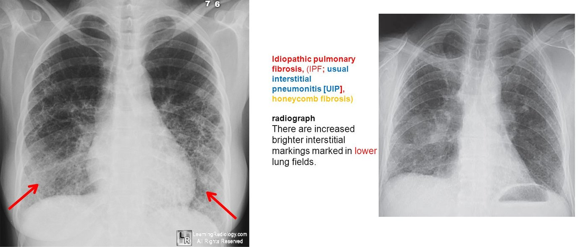
| Restrictive pattern (slides 26, 29) | Result |
|---|---|
| Ratio of forced expiratory volume in 1 second to forced vital capacity | Normal or increased |
| Total lung capacity and forced vital capacity | Decreased (reduced lung volumes) |
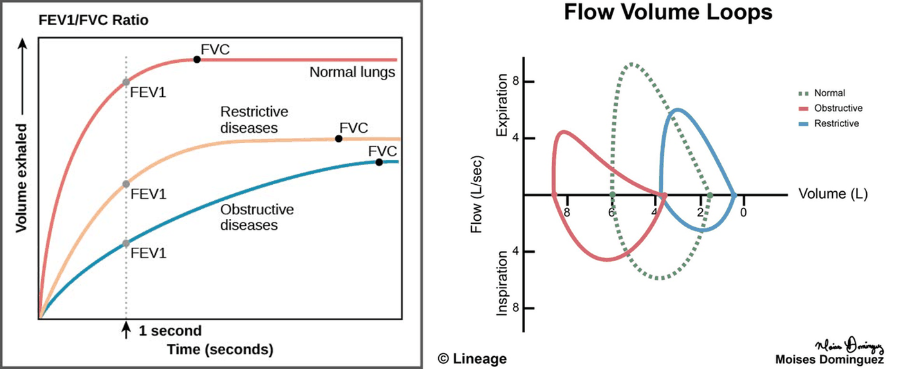
Restrictive pattern on testing. Interstitial lung disease stiffens the lung so it no longer expands, giving a restrictive pattern: total lung capacity and forced vital capacity fall while the ratio of forced expiratory volume in 1 second to forced vital capacity stays normal or rises.
Restrictive pattern. A restrictive pattern is a normal or increased ratio of forced expiratory volume in 1 second to forced vital capacity (normal 0.70 or more) with decreased total lung capacity and forced vital capacity (normal 80% or more of predicted).
3.4 · Idiopathic (fibrosing) interstitial pneumonia and idiopathic pulmonary fibrosis
- Histopathologic patterns (slide 31): idiopathic pulmonary fibrosis, desquamative interstitial pneumonitis, nonspecific interstitial pneumonia, cryptogenic organizing pneumonia, respiratory bronchiolitis-associated interstitial lung disease, lymphoid interstitial pneumonia, acute interstitial pneumonitis. Suspect it in unexplained interstitial lung disease; it is the ★ most common diagnosis among patients with interstitial lung disease; 67–75% of patients with idiopathic pulmonary fibrosis and familial lung fibrosis have a history of smoking.
- Diagnosis (slide 32): may require biopsy; idiopathic pulmonary fibrosis is the most common subtype; age, sex, prodrome, imaging and histology decide; treatment and prognosis depend on the subtype.
- Symptoms (slide 33): insidious DRY cough, exertional dyspnea, constitutional symptoms (fatigue, malaise). Exam: clubbing; bibasilar inspiratory crackles; tachypnea; reduced chest expansion.
- Studies (slide 34): chest film: progressive fibrosis over several areas; CT: diffuse patchy fibrosis with pleural-based honeycombing; pulmonary function: restrictive (decreased lung volume, normal to increased ratio); bronchoalveolar lavage, transbronchial biopsy, surgical lung biopsy.
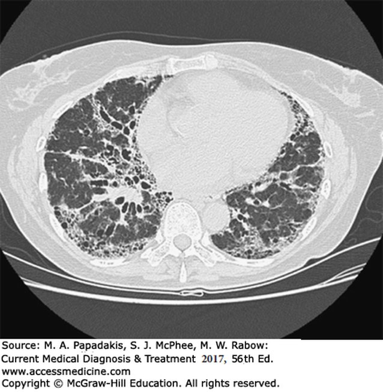
| Idiopathic pulmonary fibrosis / usual interstitial pneumonia diagnosed with 90% confidence, no surgical biopsy needed (slide 35): patients over 65 with all four | |
|---|---|
| 1 | Idiopathic disease by history, with inspiratory crackles on examination |
| 2 | Restrictive physiology on pulmonary function testing |
| 3 | Radiographic evidence of progressive fibrosis over several years |
| 4 | Diffuse, patchy fibrosis with pleural-based honeycombing on high-resolution CT |
- Management (slide 37): controversial. Nothing has been shown to improve survival or quality of life compared with no treatment; an accurate diagnosis identifies who may benefit; smoking is the cause in the majority of cases and cessation is critical to prolong life.
- Corticosteroids may be used (slide 38) in cryptogenic organizing pneumonia (bronchiolitis obliterans organizing pneumonia), lymphoid interstitial pneumonia and nonspecific interstitial pneumonia. Symptoms vary by subtype.
Idiopathic pulmonary fibrosis
Defining feature: an older smoker with an insidious dry cough, exertional dyspnea, clubbing and bibasilar inspiratory crackles, a restrictive pattern and pleural-based honeycombing on CT
- Definition
- The most common idiopathic (fibrosing) interstitial pneumonia: pulmonary fibrosis with the usual interstitial pneumonia pattern and no associated cause.
- Who gets it
- The most common diagnosis among interstitial lung diseases; over 65 in the no-biopsy criteria; 67–75% have smoked.
- Risk factors
- Smoking (the cause in the majority); familial lung fibrosis.
- Classic signs & symptoms
- Insidious dry cough, exertional dyspnea, fatigue and malaise.
- Physical exam findings
- Clubbing, bibasilar inspiratory crackles, tachypnea, reduced chest expansion.
- Diagnostics / tests
- Restrictive pulmonary function; chest film with progressive fibrosis (lower fields); high-resolution CT with diffuse patchy fibrosis and pleural-based honeycombing; biopsy unless the four over-65 criteria are met.
- First-line treatment
- Controversial: nothing has improved survival; smoking cessation is critical.
- Complications
- Progressive fibrosis; right heart failure with advanced interstitial disease.
Slides 15, 24, 27, 31–37
3.5 · Connective tissue disease, pulmonary hemorrhage and granulomatous vasculitis
- Connective tissue diseases (slide 18), “think autoimmune”: an inflammatory/fibrotic response in systemic lupus erythematosus, rheumatoid arthritis, ankylosing spondylitis, systemic sclerosis, Sjögren syndrome, polymyositis-dermatomyositis and scleroderma. Methotrexate, used for many autoimmune diseases including lupus and rheumatoid arthritis, is itself a cause of interstitial lung disease.
- Pulmonary hemorrhage syndromes / alveolar filling disorders (slide 19): Goodpasture syndrome, idiopathic pulmonary hemosiderosis, isolated pulmonary capillaritis. Goodpasture: anti-glomerular basement membrane antibodies (slide 25).
- Granulomatous response (slides 20–21): still interstitial disease of unknown etiology; T lymphocytes, macrophages and epithelioid cells organized into granulomas in the parenchyma. Examples: sarcoidosis, the granulomatous vasculitides (granulomatosis with polyangiitis, formerly Wegener, c-ANCA positive; allergic granulomatosis of Churg-Strauss).
Pulmonary fibrosis with connective tissue disease
Defining feature: a patient with a known autoimmune disease (rheumatoid arthritis, lupus, scleroderma, polymyositis) who develops progressive dyspnea and a restrictive pattern
- Definition
- An inflammatory and fibrotic interstitial response in connective tissue (autoimmune) disease.
- Who gets it
- Patients with systemic lupus erythematosus, rheumatoid arthritis, ankylosing spondylitis, systemic sclerosis, Sjögren syndrome, polymyositis-dermatomyositis, scleroderma.
- Risk factors
- The autoimmune disease itself; methotrexate treatment (also a cause of interstitial lung disease).
- Classic signs & symptoms
- Chronic progressive exertional dyspnea and nonproductive cough.
- Physical exam findings
- Bibasilar inspiratory crackles, clubbing, small lung volumes.
- Diagnostics / tests
- High antinuclear antibody (collagen vascular disease); restrictive pulmonary function; imaging.
- First-line treatment
- Not detailed on the slides beyond recognizing the autoimmune cause and the drug cause.
- Complications
- Fibrosis; right heart failure with advanced disease.
Slides 12, 17, 18, 22–25
3.6 · Sarcoidosis
- A multi-organ disease of idiopathic cause with noncaseating granulomatous inflammation (lungs, lymph nodes, eyes, skin, liver, spleen, salivary glands, heart, nervous system); the lungs and lymphatic system are most often affected; thought to be environmental triggers (viral, bacterial, mycobacterial, inhaled agents, mold and mildew) in a genetically predisposed person (slide 39). It may come from a lack of modulation of the immune response after antigen recognition (slide 41).
- Who (slide 40): granulomatous lung inflammation in about 90%; more common in North American Black people and Northern European white people; more often women; onset in the third and fourth decades.
- Symptoms (slide 42): cough; dyspnea of insidious onset; chest discomfort; malaise, fever; weakness, weight loss; nontender lymphadenopathy; other organ systems.
- Exam (slide 43): erythema nodosum (itchy, painful rashes on the lower legs and ankles) or parotid enlargement; lymph node enlargement; liver or spleen enlargement; crackles; skin involvement such as ★ lupus pernio (painful skin sores on the face); eye problems and heart and brain complications in the picture.
- Lupus pernio. Lupus pernio, skin sores on the face, is the skin involvement of sarcoidosis. A dry cough, insidious dyspnea, nontender lymphadenopathy and liver and spleen enlargement complete its multi-organ picture. Sarcoidosis also occurs more often in Black patients and in women.
- Diagnosis (slide 44): chest film: symmetric bilateral hilar and right paratracheal adenopathy and bilateral reticular infiltrates. Labs: leukopenia, eosinophilia, elevated sedimentation rate, hypercalcemia, hypercalciuria; angiotensin-converting enzyme elevated in 40–80%; hypercalcemia in 5%. Transbronchial lung biopsy or fine-needle node biopsy confirms it, with noncaseating granulomas.
- Angiotensin-converting enzyme in sarcoidosis. Angiotensin-converting enzyme levels are elevated in 40 to 80% of patients with sarcoidosis. Other laboratory findings include leukopenia, eosinophilia, an elevated erythrocyte sedimentation rate, hypercalcemia in about 5% of patients and hypercalciuria.
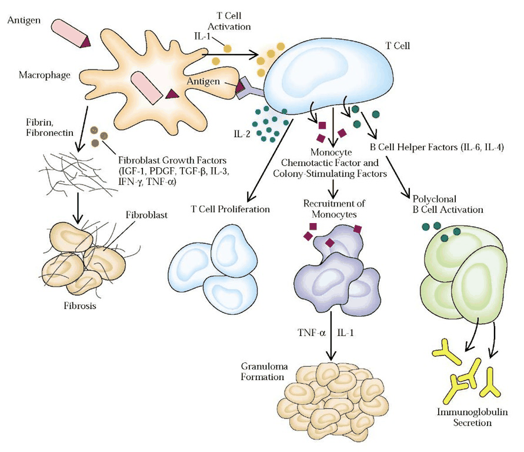
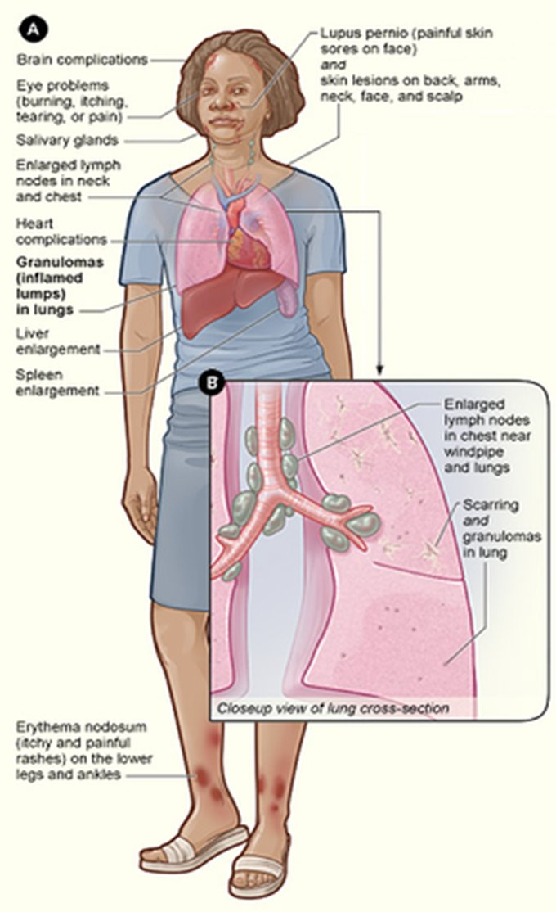
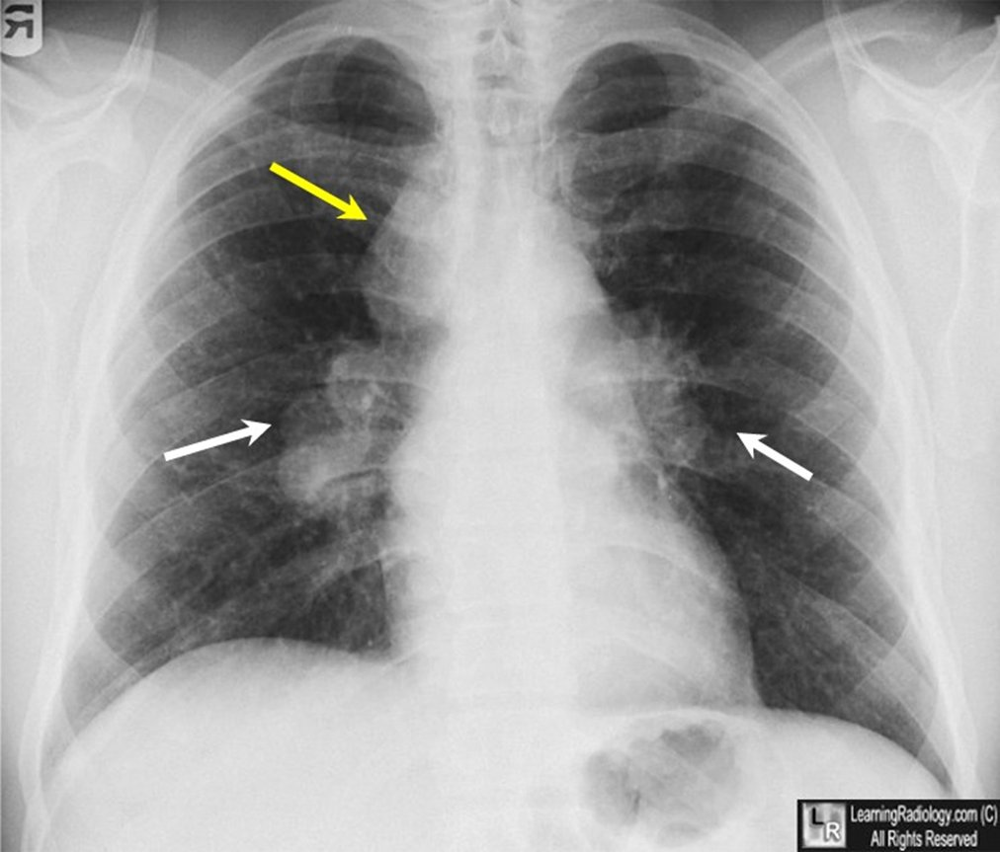
| Chest film stage (slide 45) | Findings |
|---|---|
| I | Bilateral hilar adenopathy alone |
| II | Hilar adenopathy and parenchymal involvement |
| III | Parenchymal involvement alone (diffuse reticular infiltrates) |
| IV | Advanced fibrosis: honeycombing, hilar retraction, bullae, cysts, emphysema |
Biopsy is essential whenever the clinical and radiographic findings suggest an alternative diagnosis such as lymphoma (slide 45).
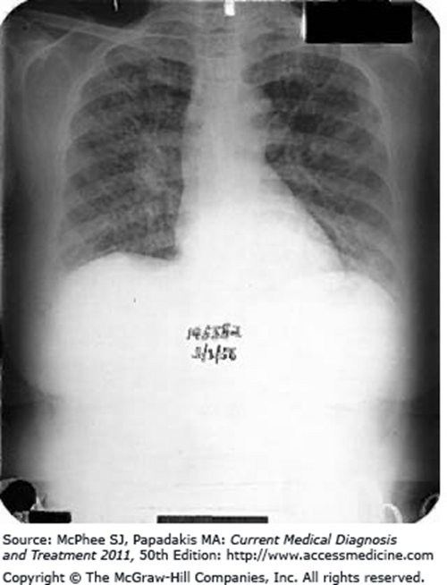
- Management (slide 46): about 90% respond to corticosteroids and can be controlled with moderate maintenance doses. Immunosuppressants, most commonly methotrexate, azathioprine or infliximab, for patients intolerant of corticosteroids or with corticosteroid-refractory disease.
- Methotrexate. Methotrexate is one of the immunosuppressants most commonly used when sarcoidosis is corticosteroid-intolerant or refractory, and it treats many autoimmune diseases such as lupus and rheumatoid arthritis. It is also implicated as a cause of interstitial lung disease.
- Methotrexate to avoid. Methotrexate is one of the immunosuppressants used for corticosteroid-refractory sarcoidosis, but it has also been implicated as a cause of interstitial lung disease. Azathioprine or infliximab covers the same refractory indication, so methotrexate should be avoided in a patient whose lung injury it already implicated.
| Indications for oral corticosteroids (slide 47) |
|---|
| Disabling constitutional symptoms · Hypercalcemia · Iritis · Uveitis · Arthritis · Central nervous system involvement · Cardiac involvement · Granulomatous hepatitis · Cutaneous lesions other than erythema nodosum · Progressive pulmonary lesions |
- Prognosis (slide 48): best with hilar adenopathy alone; parenchymal involvement on imaging means a worse prognosis; 20% with lung involvement develop irreversible impairment (progressive fibrosis, bronchiectasis, cavitation). Every year: physical exam; pulmonary function tests, chest film, electrocardiogram; chemistry panel; ophthalmologic evaluation (to find and manage ocular inflammation).
Sarcoidosis
Defining feature: a young adult in the third or fourth decade with symmetric bilateral hilar adenopathy, nontender nodes, erythema nodosum or uveitis, and noncaseating granulomas on biopsy
- Definition
- A multi-organ disease of unknown cause with noncaseating granulomatous inflammation, mostly of the lungs and lymphatics.
- Who gets it
- North American Black people and Northern European white people; women more often; onset in the third and fourth decades.
- Risk factors
- Genetic predisposition plus environmental triggers (viral, bacterial, mycobacterial, inhaled agents, mold).
- Classic signs & symptoms
- Cough, insidious dyspnea, chest discomfort, malaise, fever, weight loss, nontender lymphadenopathy.
- Physical exam findings
- Erythema nodosum, parotid enlargement, lymph node, liver and spleen enlargement, crackles, lupus pernio.
- Diagnostics / tests
- Chest film (bilateral hilar and right paratracheal adenopathy; stages I–IV); elevated angiotensin-converting enzyme, sedimentation rate, calcium; transbronchial or node biopsy showing noncaseating granulomas confirms.
- First-line treatment
- Oral corticosteroids for the listed indications (about 90% respond); methotrexate, azathioprine or infliximab if intolerant or refractory; yearly exam, pulmonary function, chest film, electrocardiogram, chemistry and eye exam.
- Complications
- Irreversible lung impairment in 20% with lung involvement (fibrosis, bronchiectasis, cavitation); hypercalcemia; eye, heart and nervous system disease.
Corticosteroids in sarcoidosis. Hypercalcemia (calcium above the 8.5-10.5 mg/dL range) is one of the indications for oral corticosteroids in sarcoidosis. About 90% of cases respond to corticosteroids, so they come first even when the chest film shows hilar adenopathy alone.
Slides 21, 25, 26, 39–48
3.7 · Pneumoconiosis: coal workers’ pneumoconiosis
- Pneumoconiosis (slide 50): chronic fibrotic lung disease from inhaling coal dust or various inorganic or silicate dusts.
- Coal workers’ pneumoconiosis (slide 51): alveolar macrophages take up inhaled coal dust, forming coal macules. Simple disease is usually asymptomatic, with unimpressive pulmonary function. Complicated disease is “progressive massive fibrosis”: conglomeration in the upper lungs.
- Symptoms (slide 52): may be asymptomatic when simple; complicated: dyspnea, progressive dyspnea, inspiratory crackles, finger clubbing, cyanosis.
- Tests (slide 53): pulmonary function: restrictive with reduced diffusing capacity (diffusing capacity of the lungs for carbon monoxide). Chest film: nodular opacities in the upper lung fields (coal macules 2–5 mm).
- Management (slide 54): supportive; no effective curative treatment: oxygen, vaccinations (pneumococcal, influenza), rehabilitation, smoking cessation; lung transplant in severe cases. Complication: progressive massive fibrosis (conglomeration and contraction in the upper lung fields).
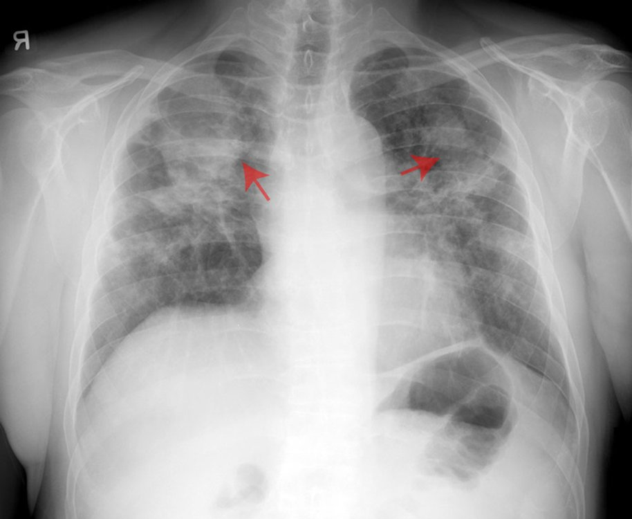
Coal workers’ pneumoconiosis
Defining feature: a coal miner with 2–5 mm nodular opacities in the upper lung fields
- Definition
- A pneumoconiosis: chronic fibrotic lung disease from inhaled coal dust taken up by alveolar macrophages into coal macules.
- Who gets it
- Coal workers.
- Risk factors
- Inhaled coal dust.
- Classic signs & symptoms
- Simple: often none. Complicated: progressive dyspnea.
- Physical exam findings
- Inspiratory crackles, clubbing, cyanosis in complicated disease.
- Diagnostics / tests
- Restrictive pulmonary function with reduced diffusing capacity; upper-zone nodular opacities (coal macules 2–5 mm).
- First-line treatment
- Supportive (no cure): oxygen, pneumococcal and influenza vaccines, rehabilitation, smoking cessation; transplant if severe.
- Complications
- Progressive massive fibrosis (upper-lobe conglomeration and contraction).
Management of coal workers' pneumoconiosis. Management is supportive, with oxygen, vaccinations, rehabilitation and smoking cessation, and in severe cases lung transplant may be indicated.
Slides 50–54
3.8 · Asbestosis and mesothelioma
- History (slide 55): asbestos fibers from insulation, demolition, shipyards, construction; exposure over 10–20 years; patients usually seek attention about 15 years after exposure. Cigarette smoking increases radiographic pleural and parenchymal changes and markedly increases lung carcinoma. A ★ ferruginous body in tissue (a histologic finding resulting from inorganic dust inhalation) suggests significant exposure.
- Mechanism (slide 56): asbestos invades lung tissue and cannot be removed, so chronic inflammation and macrophage invasion scar the terminal bronchioles, alveoli and interstitium; fibers can penetrate further and cause mesothelioma (cancer of the pleural lining).
- Symptoms and exam (slide 57): dyspnea on exertion, rarely cough; with progression, fine bibasilar crackles and clubbing. Labs not helpful; pulmonary function: reduced vital capacity and total lung capacity.
- Imaging (slide 58): often normal early; pleural plaques are the most common chest film finding (linear streaking at the bases); reticulonodular opacities at the bases; CT: pleural plaques, alveolitis, fibrosis, honeycombing in advanced disease. CT is the preferred imaging for asbestosis.
- Treatment (slide 56): supportive, because the fibers cannot be removed: oxygen, physiotherapy, medications, vaccinations. Complications: increased risk of lung cancer and mesothelioma, especially in smokers.
- Mesothelioma (slide 59): primarily a pleural cancer, nearly always caused by asbestos; incurable with poor long-term survival, no treatment known to prolong survival, primarily supportive care; frequent pleural effusions, diagnosable by pleural fluid cytology; 10% lifetime risk for asbestos workers.
Asbestosis imaging (slide 58): the slide names pleural plaques (the most common chest X-ray finding), linear streaking and reticulonodular opacities at the bases, and on CT pleural plaques, alveolitis or fibrosis; it does not key the arrows
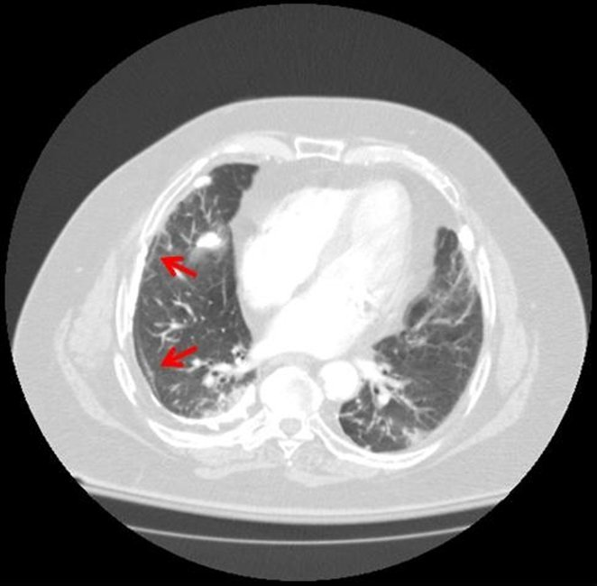
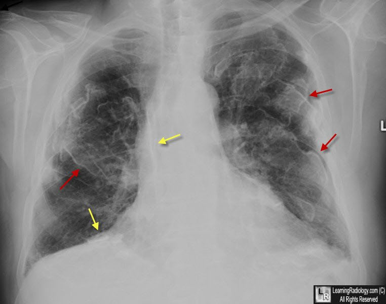
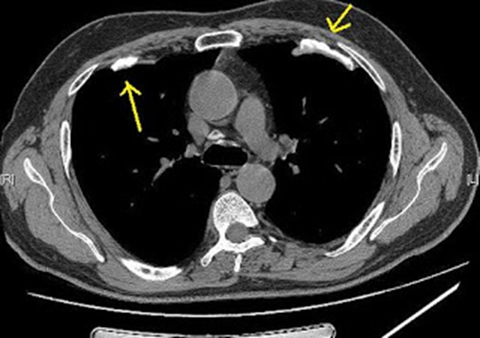
Asbestosis
Defining feature: a former shipyard, insulation, demolition or construction worker with exertional dyspnea about 15 years after exposure, pleural plaques and basal crackles
- Definition
- Interstitial fibrosis of the terminal bronchioles, alveoli and interstitium from asbestos fibers that cannot be removed.
- Who gets it
- Workers in insulation, demolition, shipyards and construction, after 10–20 years of exposure; presenting about 15 years later.
- Risk factors
- Asbestos exposure; smoking worsens radiographic changes and markedly raises lung cancer risk.
- Classic signs & symptoms
- Dyspnea on exertion; cough is rare.
- Physical exam findings
- Fine bibasilar crackles and clubbing with progression.
- Diagnostics / tests
- Pleural plaques (most common film finding), basal reticulonodular opacities; CT preferred; reduced vital and total lung capacity; ferruginous bodies; labs not helpful.
- First-line treatment
- Supportive: oxygen, physiotherapy, medications, vaccinations; smoking cessation.
- Complications
- Lung cancer and mesothelioma, especially in smokers (mesothelioma lifetime risk 10% in asbestos workers).
Slides 55–59
3.9 · Silicosis
- History (slide 60): mining, sandblasting, quarry work, stone work; free crystalline silica dust (silicon dioxide). Simple disease usually asymptomatic with unimpressive function; complicated disease: conglomeration of the upper lungs. Silica deposits in the alveoli, causing chronic inflammation, macrophage invasion and fibrosis and also nodular lesions; it is usually carried to the upper lobes because it is a lighter dust.
- Presentation (slide 61): rapid onset of symptoms (see the conflict box); dyspnea, cough, weight loss, fatigue; often crackles.
- Studies (slide 62): labs: arterial blood gas, otherwise not contributory; pulmonary function: reduced forced vital capacity and forced expiratory volume in 1 second; ★ bronchoalveolar lavage: thick, milky effluent with foamy, lipoproteinaceous macrophages.
- Imaging (slide 63): nodular opacities throughout (silicotic nodules, 1–10 mm): nodular pulmonary fibrosis; “eggshell” calcification of the periphery of the hilar lymph nodes.
- Silicosis presentation. Sandblasting is a free crystalline silica exposure, and silicosis shows silicotic nodules 1-10 mm across throughout the lungs with eggshell calcification of the periphery of the hilar lymph nodes. Dyspnea, cough, weight loss, fatigue and crackles fit its presentation.
- Treatment (slide 64): largely supportive: oxygen, physiotherapy, medications, vaccinations; smoking cessation. Complications: increased risk of tuberculosis, progressive massive fibrosis, scleroderma; patients should have a tuberculosis skin test and a current chest film.
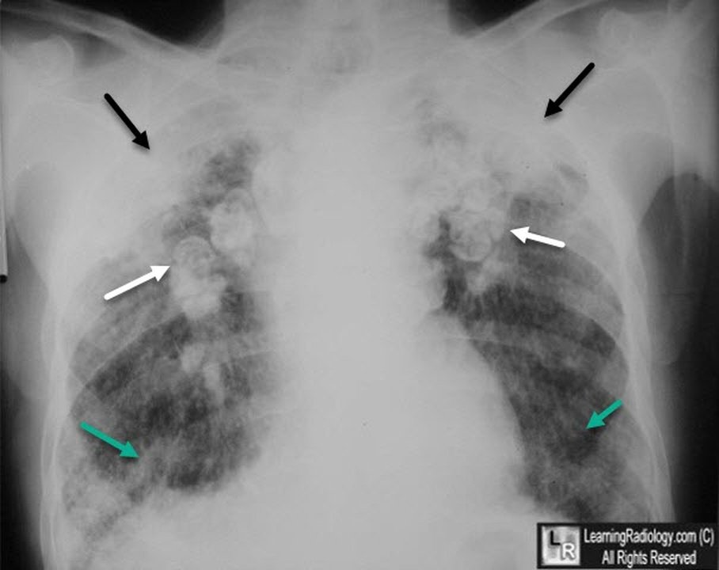
Silicosis
Defining feature: a sandblaster, miner, quarry or stone worker with upper-lobe silicotic nodules and eggshell calcification of the hilar nodes
- Definition
- Fibrosis and nodular lesions from free crystalline silica (silicon dioxide) dust deposited in the alveoli.
- Who gets it
- Miners, sandblasters, quarry workers and stone workers.
- Risk factors
- Inhaled silica dust.
- Classic signs & symptoms
- Dyspnea, cough, weight loss, fatigue (simple disease may be asymptomatic).
- Physical exam findings
- Often crackles.
- Diagnostics / tests
- Silicotic nodules 1–10 mm, upper lobes; eggshell calcification of the hilar nodes; reduced vital capacity and forced expiratory volume; milky lavage with foamy macrophages; arterial blood gas.
- First-line treatment
- Supportive (oxygen, physiotherapy, medications, vaccinations), smoking cessation; tuberculosis skin test and a current chest film.
- Complications
- Tuberculosis, progressive massive fibrosis, scleroderma.
Complications of silicosis. The complications of silicosis are an increased risk of tuberculosis, progressive massive fibrosis and scleroderma. Scleroderma is also one of the connective tissue diseases that produce interstitial lung disease.
Slides 26, 60–64
3.10 · Hypersensitivity pneumonitis (extrinsic allergic alveolitis)
- What it is (slide 65): a non-atopic, non-asthmatic inflammatory lung disease in which inhaled organic material causes acute illness. Sources: moldy hay, bird excreta, feathers, moldy sugarcane pulp, moldy products, insect-infested grain: bird fancier’s lung, farmer’s lung, cheese maker’s lung. Prompt diagnosis is key to remove the patient from the environment; symptoms can reverse if caught early; continued exposure worsens the disease.
- Symptoms (slide 66): sudden malaise, chills, fever, cough, dyspnea, nausea 4–8 hours after exposure; may mimic paroxysmal nocturnal dyspnea (after work, once home).
- Exam (slide 68): bibasilar crackles, tachypnea, tachycardia, cyanosis.
| Type (slide 67) | Signs and symptoms |
|---|---|
| Acute (within 9 hours of exposure) | Flu-like illness (fever, chills, muscle or joint pain, headache), rales, cough |
| Subacute (multiple exposures; 15%) | Rales, cough, chronic bronchitis, shortness of breath, anorexia or weight loss |
| Chronic (multiple exposures; 5%) | Cough, chronic bronchitis, shortness of breath, anorexia or weight loss, fatigue, lung fibrosis, clubbing |
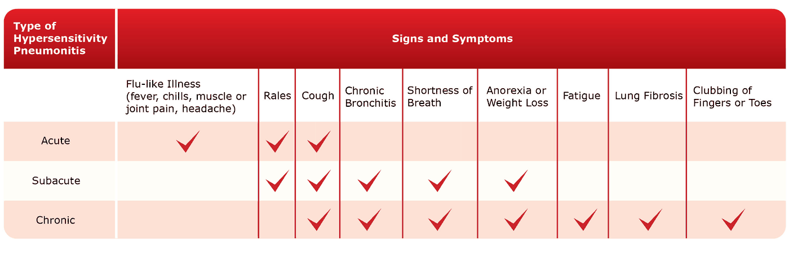
- Tests (slides 69–70): chest film and CT: little change acutely; subacute and chronic fibrotic changes; small nodular densities sparing the apices and bases. Blood: white count elevated with a left shift; hypoxia; antibodies to the agent in serum: their presence gives a definitive diagnosis. Pulmonary function: restrictive. Subacute or chronic: lung biopsy may be indicated. Histology: interstitial lymphocytes and plasma cells with non-caseating granulomas.
- Treatment (slide 71): ★ identify the agent responsible; avoid the agent; corticosteroids in severe cases; other immunosuppressants; supportive (oxygen, bronchodilators, pain medications); lung transplant.
Hypersensitivity pneumonitis, chronic (slide 70)
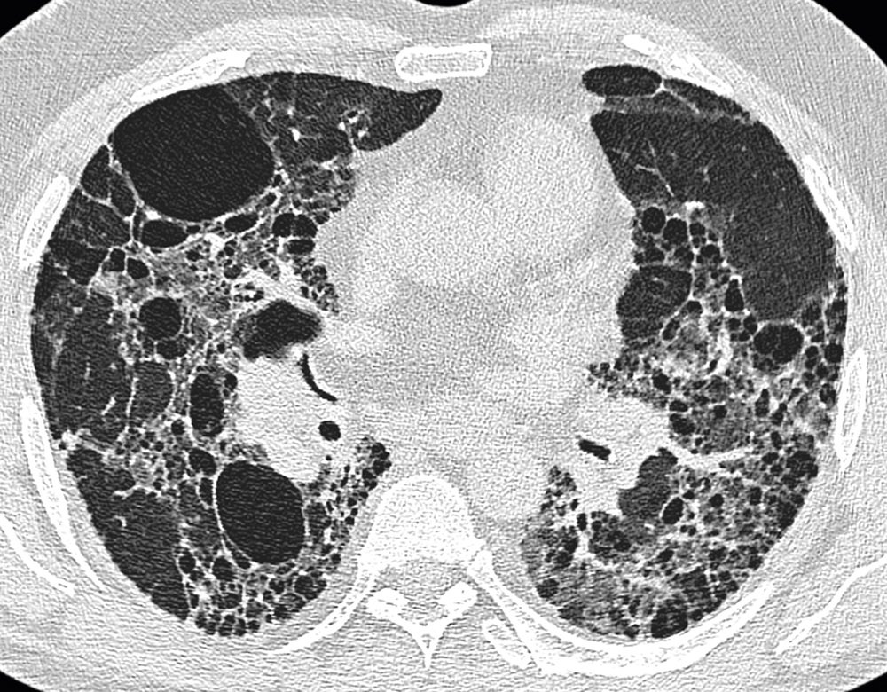
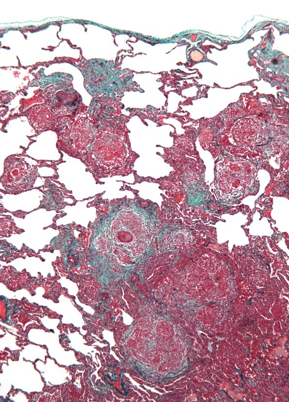
Hypersensitivity pneumonitis
Defining feature: fever, chills, cough and dyspnea hours after exposure to moldy hay, birds or another organic dust, better away from the exposure
- Definition
- A non-atopic, non-asthmatic inflammatory lung disease caused by inhaled organic material (extrinsic allergic alveolitis).
- Who gets it
- Farmers (moldy hay), bird keepers (excreta, feathers), cheese makers, workers handling moldy products or infested grain.
- Risk factors
- Repeated organic dust exposure; continued exposure worsens the disease.
- Classic signs & symptoms
- Acute: flu-like malaise, chills, fever, cough, dyspnea, nausea hours after exposure. Chronic: weight loss, fatigue, fibrosis, clubbing.
- Physical exam findings
- Bibasilar crackles, tachypnea, tachycardia, cyanosis.
- Diagnostics / tests
- Serum antibodies to the agent (definitive); white count up with a left shift; hypoxia; restrictive function; small nodular densities sparing apices and bases; biopsy if subacute or chronic.
- First-line treatment
- Identify and avoid the agent; corticosteroids if severe; supportive care; transplant.
- Complications
- Fibrosis with continued exposure (reversible if caught early).
Slides 22, 65–71
3.11 · Acute respiratory distress syndrome
Slides 72–74 are pictures; everything in this subsection is read from them.
| Cause (slide 72) | Examples |
|---|---|
| Direct pulmonary | Aspiration of gastric contents, diffuse pneumonia, lung contusion; toxic gas (chlorine, nitrogen dioxide, sulfur dioxide, ammonia, smoke); near-drowning, high altitude, radiation, upper airway obstruction; fat, air, amniotic fluid or thrombus emboli |
| Systemic | Sepsis, severe pancreatitis, shock, nonthoracic trauma; overdoses (opioids, aspirin, phenothiazine, tricyclic antidepressants, cocaine); multiple blood transfusions, disseminated intravascular coagulation, cardiopulmonary bypass, protamine; chemotherapy, amiodarone, nitrofurantoin |
- Epidemiology and prognosis (slide 72): about 30% overall mortality with low tidal volume ventilation; etiology drives survival: about 20% mortality after trauma, 80% with end-stage liver disease; about one-third of cases first present with sepsis; lung function generally recovers within 6–12 months, though functional deficits often remain.
- Mechanism (slide 72): pro-inflammatory cytokines damage the capillary endothelium and alveolar epithelium; increased vascular permeability leads to surfactant loss, alveolar collapse and refractory hypoxemia; a hyperinflammatory phenotype (high interleukin-6 and soluble tumor necrosis factor receptor) correlates with multiorgan failure and higher mortality.
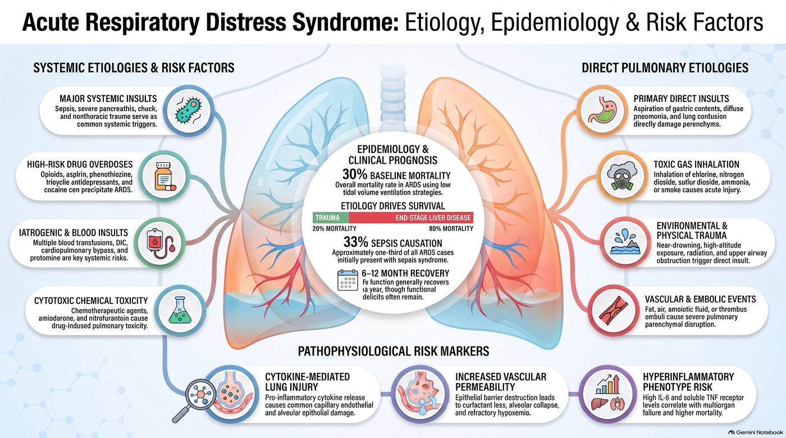
| Core diagnostic criteria (slide 73) | |
|---|---|
| Timing | Develops within 7 days of a known clinical insult |
| Imaging | Bilateral pulmonary opacities not explained by effusion, atelectasis or nodules |
| Origin | Non-cardiogenic: failure not fully explained by heart failure or fluid overload |
| Oxygenation | Arterial oxygen pressure to fraction of inspired oxygen ratio under 300 mm Hg (or oxygen saturation to inspired fraction under 315) |
| Severity (slide 73) | Arterial oxygen pressure ÷ fraction of inspired oxygen |
|---|---|
| Mild | 200–300 mm Hg |
| Moderate | 100–200 mm Hg |
| Severe | Under 100 mm Hg |
Worked example: arterial oxygen 60 mm Hg on 50% oxygen (fraction 0.5): 60 ÷ 0.5 = 120, moderate.
- Presentation (slide 73): profound dyspnea 12–48 hours after the insult; tachypnea, labored breathing, intercostal retractions, crackles; marked hypoxemia refractory to supplemental oxygen; multiple organ failure (kidneys, liver, gut, central nervous system, cardiovascular).
- Imaging and tests (slide 73): bilateral infiltrates rapidly progress to confluent opacities; air bronchograms in about 80%; normal heart size with minimal or absent pleural effusions; echocardiography assesses cardiac function to exclude hydrostatic (cardiogenic) pulmonary edema.
- Differential (slide 73): cardiogenic pulmonary edema (cardiomegaly, vascular engorgement, batwing perihilar opacities); diffuse alveolar hemorrhage; severe bilateral pneumonia; autoimmune lung disease.
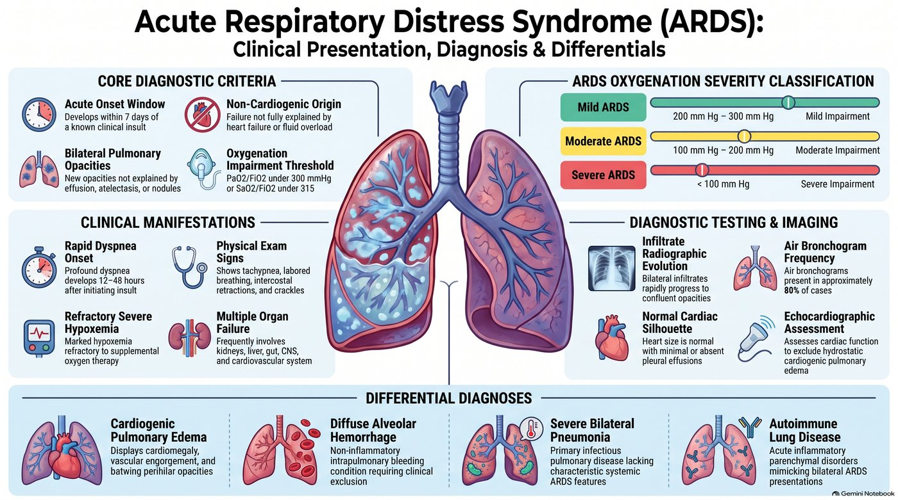
| Management (slide 74) | What the picture says |
|---|---|
| Ventilation and position | Treat the primary precipitant promptly; low tidal volumes; titrate positive end-expiratory pressure to keep arterial oxygen above 60 mm Hg; early prone positioning decreases mortality in moderate to severe disease; avoid high-frequency oscillatory ventilation (no proven benefit) |
| Fluids and blood | Conservative fluids (central venous pressure target under 4 mm Hg; restrictive fluids increase ventilator-free days, shorter intensive care stays); avoid routine pulmonary artery catheters (no clinical benefit); transfuse at hemoglobin 7 g/dL (higher targets do not improve outcomes); avoid supranormal oxygen delivery targets |
| Drugs and salvage | Corticosteroids conditionally supported within 14 days; sedatives, analgesics and antipyretics reduce oxygen demand; neuromuscular blockade is controversial (conflicting mortality data); extracorporeal membrane oxygenation for severe, refractory disease |
| Recovery | Lung function improves over 6–12 months; residual diffusion deficits and obstructive changes often persist; treat post-intensive-care muscle wasting, weakness and fatigue |
Recovery after acute respiratory distress syndrome. Long-term recovery includes treating physical sequelae: post-intensive care muscle wasting, weakness and persistent fatigue. Rehabilitation addresses them while lung function continues to improve over 6 to 12 months.
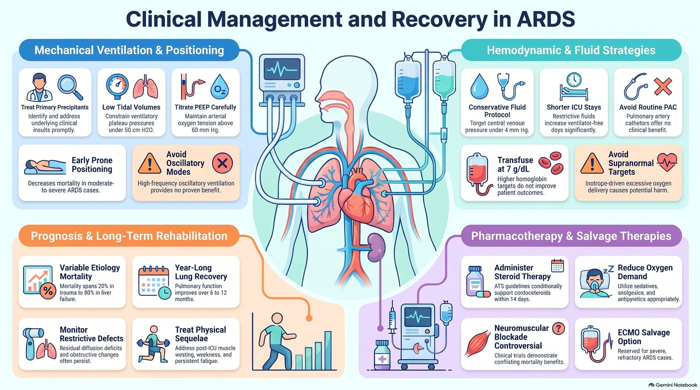
Acute respiratory distress syndrome
Defining feature: bilateral opacities and hypoxemia refractory to oxygen within 7 days of sepsis, aspiration, trauma or pancreatitis, with a normal-sized heart
- Definition
- Acute non-cardiogenic lung injury: bilateral opacities and an arterial oxygen to inspired oxygen ratio under 300 within 7 days of an insult.
- Who gets it
- Patients after sepsis (about a third present this way), aspiration, pneumonia, trauma, pancreatitis, transfusions or overdoses.
- Risk factors
- Direct lung insults (aspiration, pneumonia, contusion, toxic gas, near-drowning, emboli) and systemic ones (sepsis, pancreatitis, shock, trauma, overdoses, transfusions, drugs such as amiodarone and nitrofurantoin).
- Classic signs & symptoms
- Profound dyspnea 12–48 hours after the insult; hypoxemia refractory to supplemental oxygen.
- Physical exam findings
- Tachypnea, labored breathing, intercostal retractions, crackles; multiple organ failure.
- Diagnostics / tests
- Bilateral infiltrates becoming confluent, air bronchograms, normal heart size; echocardiography to exclude cardiogenic edema; severity by ratio (mild 200–300, moderate 100–200, severe under 100).
- First-line treatment
- Treat the cause; low tidal volume ventilation; early prone positioning (moderate to severe); conservative fluids; transfuse at 7 g/dL; corticosteroids within 14 days conditionally; extracorporeal membrane oxygenation as salvage.
- Complications
- Multiple organ failure; mortality about 30% (20% after trauma to 80% with end-stage liver disease); residual diffusion deficits, weakness and fatigue.
Slides 72–74
3.12 · Adults and older adults; referral
| Domain | Adults | Older adults |
|---|---|---|
| Who | Sarcoidosis begins in the third and fourth decades (slide 40); occupational disease follows years of exposure (asbestosis 10–20 years, presenting about 15 years later, slide 55) | Idiopathic pulmonary fibrosis: the four no-biopsy criteria apply to patients over 65 (slide 35) |
| History | The occupational and environmental history identifies the known causes (slide 13); drugs such as methotrexate, amiodarone and nitrofurantoin (slides 9, 12, 18) | The same, across a working lifetime |
| Supportive care | Oxygen, vaccinations (pneumococcal, influenza), rehabilitation and physiotherapy, smoking cessation (slides 54, 56, 64) | The same; lung transplant in severe pneumoconiosis or hypersensitivity pneumonitis (slides 54, 71) |
| Follow-up | Sarcoidosis: yearly exam, pulmonary function tests, chest film, electrocardiogram, chemistry panel and eye examination (slide 48); silicosis: tuberculosis skin test and a current chest film (slide 64) | Acute respiratory distress syndrome survivors: lung function recovers over 6–12 months, with residual diffusion deficits and post-intensive-care weakness (slide 74) |
5 · Pulmonary Nodules and Neoplasms
Lecture 43 · Rob Gray, DMSc, PA-C, Adjunct Instructor (guest lecturer) · Wednesday 4 November 2026, 10 AM–12 PM
Instructional Objectives
PULMONARY NODULES AND NEOPLASMS — Rob Gray, DMSc, PA-C
- Compare and contrast the etiologies, epidemiology, risk factors, clinical manifestations, differential diagnosis, diagnostic testing (including ordering and interpretation), management (acute and chronic, including applicable rehabilitative and palliative care), appropriate referrals, patient education, and prognosis of the following pulmonary neoplasms: 2. Pulmonary nodule 3. Lung cancer (bronchogenic carcinoma) a. Non-small-cell lung cancer (NSCLC) b. Small-cell lung cancer (SCLC) c. Lung neuroendocrine (carcinoid) tumors 4. Paraneoplastic Neoplasm Associated Syndromes a. SIADH b. Hypercalcemia
- Discuss relationship between small cell lung cancer and paraneoplastic syndromes.
- Identify medical care strategies for pulmonary nodules and neoplasms in the lecture topic list for the following populations. 7. adult 8. elderly
Quoted as the syllabus prints it, its own numbering kept (it numbers the whole list 1–8: the neoplasms 2–4, the small cell link 5, the populations 6–8; SIADH is the syndrome of inappropriate antidiuretic hormone). Answered in order: 1 across 5.1–5.16 (pulmonary nodule 5.1–5.4; lung cancer 5.5–5.15, with non-small cell 5.10–5.13, small cell 5.14 and carcinoid tumors 5.15; the paraneoplastic syndromes, SIADH and hypercalcemia, 5.16); 2 in 5.17; 3 in 5.18.
What Dr. Gray stressed, and what he said is and is not tested (the Zoom recording of the live lecture, Wednesday 4 November 2026: he taught remotely for about 55 minutes and showed every slide; quotes checked in Zoom’s transcript and in ours; every fact below still comes from the slides).
- His exam list is slide 49, “Things to Know” (the starred box below): screening criteria, a benign nodule, a worrying nodule, staging and how it changes treatment, central versus peripheral cancers, recognizing squamous cell and small cell, the cancer that benefits most from radiotherapy, and the paraneoplastic signs. On the staging line: “Do you need to know every circumstance? No. Like, big picture, guys.”
- Board pointer, said three times: “Small and squamous are central … Adenocarcinoma, large cell, usually periphery … So now that I know those two, I know where the other two are.”
- “Magic number is 6.” “Greater than 6 millimeters, I’m suspicious … Especially if I’m located in the upper lobes, hilar structures. Especially if I’ve got a spiculated appearance … Spiculated is spiky.” At the recap: “you don’t usually see a lot of benign stuff that’s described as spiculated.”
- Test-question pointer, large cell: it “tends to met to the gut. Small intestine, bowel … that’s specific to large cell, so I would say stuff that, like, is unique to a thing makes a great test question.”
- Squamous cell: “Cavitation is big with that one. Strongest association with smoking. Central location originates in the bronchus … Cough, wheezing, hemoptysis are huge”; it can look like a chronic obstructive pulmonary disease (COPD) patient “constantly in exacerbation”; “you might be able to catch [it] with sputum testing”; “your squamous cell will make your calcium, a big deal.”
- Small cell and radiation: “does better with chemo and radiation than the other types. If the cancer’s pretty limited, you can radiate it really effectively”; prophylactic cranial irradiation: “We’re literally gonna radiate the brain just in case there’s metastasis.”
- Paraneoplastic syndromes, set up early (the neuroendocrine cells lining the bronchioles: “I’m calling the shot now, that’s where it comes from”) and repeated: with small cell, the syndrome of inappropriate antidiuretic hormone “that’s real … that patient may show up in the [emergency department] because of the confusion and seizures, and you work it up, and you’re like, oh, that’s lung cancer.”
- Not to memorize: the Fleischner tables (reports “literally will publish the Fleischner table … I don’t want you freaking out and being like, oh god, I have to memorize this table. I mean, you can!”; he then read the solid-nodule rows aloud); the probability-of-malignancy tables (“Don’t lose sleep over that, just know you’re gonna work it up”); the staging charts in detail (“I bring this up not to, like, make you memorize the charts”); lymph node station numbers (“nobody’s expecting you to, like, number these”); the genes (“don’t go crazy about details on this”); drug-by-marker choices (“I do not expect you to know absolutely specific drugs … Your job as a primary care PA … is be able to screen and figure out risk for that patient, and then refer”); the small cell follow-up schedule (“don’t memorize that”).
- Time on topic (minutes of teaching): epidemiology, risk factors and spread 7.5; incidental nodules and presenting symptoms 7.1; staging 5.25; workup and biopsy 4.25; benign versus concerning nodules 4.25; screening and follow-up 3.25; small cell and radiotherapy 3.0; paraneoplastic syndromes 2.5; squamous cell 2.2; adenocarcinoma 2.0; large cell 1.75; non-small cell treatment 1.5; central versus peripheral 1.0; and 2.5 on the slide 49 recap. The practice sets follow these shares.
He walked this list at the end of class: “So stuff I would consider when I’m looking back over this lecture.” Each bullet is quoted from the slide, with his words under it; the middle column is the answer from the slides.
| Slide 49 (verbatim) and his recap | The answer, from the slides | See |
|---|---|---|
| the criteria for screening an asymptomatic and at-risk patient for lung cancer “Criteria for screening, like, who am I worried about, who am I not worried about, who am I less worried about?” | No symptoms and no known nodule; age 55–80; at least a 30 pack-year history; smokes now or quit within the last 15 years → low-dose chest computed tomography (CT) every year (slide 18). | 5.3 |
| a benign nodule’s appearance “Things that would make me feel better about a [benign] nodule are a reasonable thing to kind of walk out of here with.” | Well-defined (smooth) borders; fat (hamartoma); calcification that is diffuse, central, popcorn (hamartoma) or concentric; next to a fissure; smaller than 6 mm in a patient who is not high risk (slides 12, 16, 21). | 5.2 |
| what makes you concerned for a malignant nodule “What word would I see in an x-ray report or a CT report and be like, ugh, you just ruined my day? … Spiculated.” | Greater than 6 mm; upper lobes or hilar; spiculated (spikes, deviations or lobulations in the border); more than 3 nodules; enlarging; contrast-enhancing on CT; cavitated or nonsolid; a high-risk patient; ground-glass or eccentric calcification; uptake on positron emission tomography (slides 16, 17). | 5.2 |
| your lung cancer staging based on sizes, lymph involvement and metastasis (TNM) · Also know how this will affect treatment (surgery plus chemo vs chemo only, for example) “Again, do we do surgery? Do we do chemo? Is it just better for chemo? Do you need to know every circumstance? No. Like, big picture, guys.” | Tumor size and invasion, nodes (N2 or N3 makes it stage 3), metastasis (the other lung, the pleura or pericardium, or outside the chest = stage 4). Non-small cell: stages 1–2 surgical resection; stage 4 chemotherapy (surgery only for a single metastasis with a resectable primary); chemotherapy and radiation are adjuncts because non-small cell cancers respond poorly to them (slides 22–29, 35). | 5.8, 5.13 |
| which lung cancers present in periphery or central locations “Which lung cancers are peripheral? Which ones are central? See, you already know the answer to that.” | Central: small cell and squamous cell. Peripheral: adenocarcinoma and large cell (slide 30). | 5.9 |
| how to recognize squamous cell carcinoma from the other NSCLC (non-small cell lung cancer) “How to recognize squamous cell from the others” | Strongest link to smoking; central, arising in a bronchus; silent until it obstructs, then cough, wheezing, hemoptysis; frequent cavitation; atelectasis and pneumonia; the one sputum cytology can catch; hypercalcemia (slides 30, 39, 40, 46). | 5.12 |
| how to recognize small cell lung carcinoma (SCLC) “how to recognize small cell from the others, you can usually differentiate that” | Small cell (oat cell): central, infiltrates the mucosa; over 70% metastatic (liver, bone, brain) before detection; neuroendocrine paraneoplastic syndromes such as SIADH (syndrome of inappropriate antidiuretic hormone); small cells with no nucleoli and a high nuclear-to-cytoplasm ratio, crushed at biopsy (slides 41, 42, 48). | 5.14 |
| which cancer receives the most benefit from radiotherapy “Which cancer benefits most from radiotherapy?” | Small cell: it responds better to chemotherapy and radiation than the three non-small cell types; radiation works best in limited stage; prophylactic cranial irradiation (slides 41, 43). | 5.14 |
| the signs and symptoms of a paraneoplastic associated symptoms in a patient lung carcinoma (i.e. small cell) “the weirdness that goes, like, oh, if I got that patient … maybe I accidentally find lung cancer. That’s what happens with your paraneoplastic stuff.” | SIADH (small cell): hyponatremia and low serum osmolality → confusion, seizures, ataxia, no edema. Hypercalcemia (squamous). Lambert-Eaton myasthenic syndrome (progressive leg weakness); cerebellar degeneration or encephalitis; acanthosis nigricans, dermatomyositis; carcinoid syndrome from a bronchial carcinoid (slides 4, 46–48). | 5.16, 5.17 |
Where the slides are loose or disagree
He corrected no slide out loud, so the slides are what is tested. Points the slides state two ways are not asked either way.
- Adenocarcinoma’s share. Slide 4 says 35–40%, slide 31 says 30–40%. Both make it the most common lung cancer; learn that, not a number.
- Treatment by stage (slide 35). The text says “Surgical resection (I–IIIB)” and “Chemo and radiation are only an adjunct to surgery or if the patient is stage IV”; the slide’s own table gives stage 3A “Chemoradiotherapy, surgical resection in selected patients” and 3B “Chemoradiotherapy.” They agree on stages 1–2 (surgical resection) and stage 4 (chemotherapy); stage 3 is left open. He read the text.
- Squamous cell and immunotherapy. Slides 37–38 are titled “NSCLC (excluding squamous cell)” (NSCLC: non-small cell lung cancer); slide 40 lists immunotherapy in squamous management “(as it is a NSCLC).” Gene-marker (targeted) therapy is for the non-squamous types (“Squamous is its own thing”).
- Neurologic paraneoplastic labels. Slide 46 tags Lambert-Eaton myasthenic syndrome “central” and cerebellar degeneration or encephalitis “peripheral”; slide 47 puts Lambert-Eaton at the nerve endings, at the neuromuscular junction, so the tags read reversed. Learn the slide 47 mechanism, not the tags.
- The pleura. Slide 16: “Close to a fissure or the pleura indicates something usually benign”; slide 32’s peripheral spiculated nodule “involved the pleura” and proved an invasive adenocarcinoma, which “may invade the pleura.” Next to a fissure is the reassuring sign (slide 21); pleural contact is not.
- Where tumors form. Slide 9 says most masses “form a mass in or near the hilum, but some form in the periphery”; slide 30 puts adenocarcinoma (the most common type) and large cell carcinoma in the periphery, and small cell and squamous cell centrally. Both are stated as the slides give them; no question keys “most lung cancers are central” or “most are peripheral.”
- Cavitation is a concerning feature (slide 16) and appears with large cell (slides 33–34), squamous cell (slide 39) and small cell once large (slide 41): it does not point to one cell type.
- Small cell and immunotherapy. Slide 41: “less effective on small cell … but is becoming an option”; slide 43: “Two adjunct immunotherapies are also approved for SCLC” (small cell lung cancer). Consistent: an added option, not the mainstay.
- “Metastatic (T4M1 or 2)” on slide 31: slide 22’s table has no M2 (M1a, M1b, M1c).
- Slide 13 lists adrenal insufficiency under the heading “Kidneys.” Slide 20 repeats slide 19’s title (“Solid Nodules”) over the subsolid table (table B).
- Typing slips: “SLLC” for small cell (objectives slide); “Hight” (slide 11 algorithm); “Alkaline phosphatate” (slide 14); “Ciplatin” for cisplatin (slide 35); “National Comprehensive Network” for the National Comprehensive Cancer Network (slide 43).
- He said it differently (slides kept): “T4 is huge, 7 centimeters” (slide 22: more than 7 cm), and he skipped N2; stage 2 “or … cancer’s really small, but it’s in the peribronchial nodes” (slide 24: no more than 5 cm); metastases go to “liver, lungs, bone, and brain, LLBB,” the lung there being the organ that catches other cancers (slides 9 and 41 give lung cancer’s own spread as liver, brain and bone); squamous cell is “generally central, but it doesn’t have to be” (slide 39: central, often from a bronchus); atrial fibrillation after chest radiation (not on slide 45); alkaline phosphatase as a liver or bone marker (slide 14 only lists it in the lab workup).
- Current guidelines differ: the 2021 US Preventive Services Task Force update screens adults 50–80 with at least a 20 pack-year history (still smoking or quit within 15 years), and Medicare now covers 50–77; slide 18 gives 55–80, 30 pack-years and Medicare 55–77. The practice questions use patients who qualify, or fail, under both versions.
- Current guidelines differ: slide 3 ranks lung cancer second to breast cancer for cancer deaths in women; current US data rank it first in women as well.
- Current guidelines differ: the staging slides (22–29) are the 8th edition; the 9th edition (2024) splits N2 and M1c.
- Current guidelines differ: current classification has shrunk large cell carcinoma (slide 33): tumors with adenocarcinoma or squamous markers are reclassified as those types.
5.1 · Pulmonary nodule: found by chance, or worked up for symptoms
- Found incidentally (slide 12): lung nodules turn up when a patient has a chest X-ray or chest computed tomography (CT) for another reason. The first evaluation is size: generally anything smaller than 6 mm is not concerning unless the patient is at high risk. Solitary nodules seen on a chest X-ray are sometimes called coin lesions.
- Most nodules are benign: the main examples are a granuloma (inflammatory) or a hamartoma (connective tissue growth). But if the patient is at high risk for lung cancer, the nodule is screened and worked up to exclude malignancy (slide 12). He put the size rule plainly: “Anything smaller than 6, I’m not worried about it unless … I smoked 2 packs a day for the last 40 years.”
- Symptomatic patients are different (slide 12): those who present with symptoms are worked up for possible lung cancer: persistent cough, hemoptysis, dysphagia, wheezing or shortness of breath, and systemic symptoms (weight loss, fever or fatigue, pain in bone or chest, endocrine disorders).
- Why lung cancer is so deadly (slide 12): patients do not present with symptoms until the disease is advanced or already metastatic. ★ “By the time you get symptoms, we’re way late in the game … Especially … if somebody has COPD [chronic obstructive pulmonary disease] … you might miss it, because they’re like, I don’t know, man, it’s an exacerbation.”
- The workup of a new solid nodule 8–30 mm (slide 11) begins by assessing the clinical probability of malignancy, by clinical judgment and/or a validated model; the branch decides the next step. He: the probability tables are “Don’t lose sleep over that, just know you’re gonna work it up.”
| Lung nodule evaluation: a new, solid pulmonary nodule 8 to 30 mm in diameter (slide 11) | ||
|---|---|---|
| Clinical probability of malignancy* | Next step | Then |
| Very low (< 5%) | CT surveillance at 3 to 6, 9 to 12, 18 to 24 months (low-dose, thin sections, noncontrast CT) | |
| Low/moderate (5% to 65%) | Fludeoxyglucose positron emission tomography (FDG-PET) to assess the nodule | Negative or mild uptake → CT surveillance at 3 to 6, 9 to 12, 18 to 24 months Moderate or intense uptake† → nonsurgical biopsy (transthoracic needle biopsy, endoscopic biopsy) or video-assisted thoracoscopic surgery with resection |
| High† (> 65%) | Standard stage evaluation (with or without FDG-PET) | No metastases identified → video-assisted thoracoscopic surgery with resection |
| * Clinical probability of malignancy: qualitatively by clinical judgment and/or quantitatively using a validated model, such as the one developed by Mayo Clinic (eTable A). † Referral to a subspecialist such as a pulmonologist, thoracic surgeon, interventional radiologist, or oncologist is recommended. | ||
![Flowchart, new solid pulmonary nodule 8 to 30 mm in diameter: assess the clinical probability of malignancy. Very low (under 5%) leads to CT surveillance at 3 to 6, 9 to 12 and 18 to 24 months. Low/moderate (5% to 65%) leads to FDG-PET: negative or mild uptake to the same CT surveillance, moderate or intense uptake to nonsurgical biopsy (transthoracic needle or endoscopic) or video-assisted thoracoscopic surgery with resection. High (over 65%) leads to standard stage evaluation, and with no metastases identified, video-assisted thoracoscopic surgery with resection. Footnotes on the probability model and on referral to a subspecialist.](cms-e7-images/l43-s011-nodule-algorithm.png)
5.2 · Benign versus concerning nodules
| Concerning nodules are (slide 16) | Benign nodules tend to (slides 12, 16, 21) |
|---|---|
|
Greater than 6 mm Located in the upper lobes or hilar structures Abnormal spiculated appearance (spikes or deviations or lobulations in the border) More than 3 nodules are seen Enlarging in size over time Contrast enhanced on the computed tomography (CT) (high differentiation seen on the image) Appear cavitated or nonsolid Exist in patients at high risk of lung cancer |
Have well-defined borders Have fatty tissue (hamartoma) Have calcifications (popcorn-looking = hamartoma; central calcification = healed granuloma) Sit close to a fissure (“usually benign”; the slide adds “or the pleura”, see the box above) Be smaller than 6 mm in a patient who is not high risk Be granulomas (inflammatory) or hamartomas (connective tissue growth): most nodules are benign |
His words: “Greater than 6 millimeters, I’m suspicious, you now have my attention … Especially if I’m located in the upper lobes, hilar structures. Especially if I’ve got a spiculated appearance. You’re gonna see this word a lot.” Risk matters too: “if I find a nodule in one of you guys in the classroom, I’m probably not super-duper worried about it” (genetics and smoking history raise the stakes). Spiculated is “our fancy, like, $5 word for spiky”; “I don’t like anything that looks like an angry star in my chest.”
| Calcification pattern (slide 16 drawing) | Benign or malignant | What the drawing shows |
|---|---|---|
| Diffuse | Benign | The whole nodule is white (calcified) |
| Central | Benign | A white core in the middle |
| Popcorn | Benign (hamartoma, slide 16 text) | Clustered rounded white blobs |
| Concentric | Benign | Rings of calcium |
| Ground-glass | Malignant | Fine specks scattered through the nodule (stippled) |
| Eccentric | Malignant | One off-center white fleck |
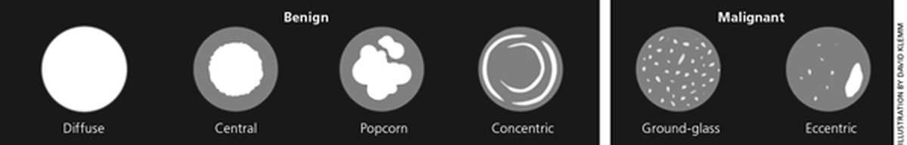
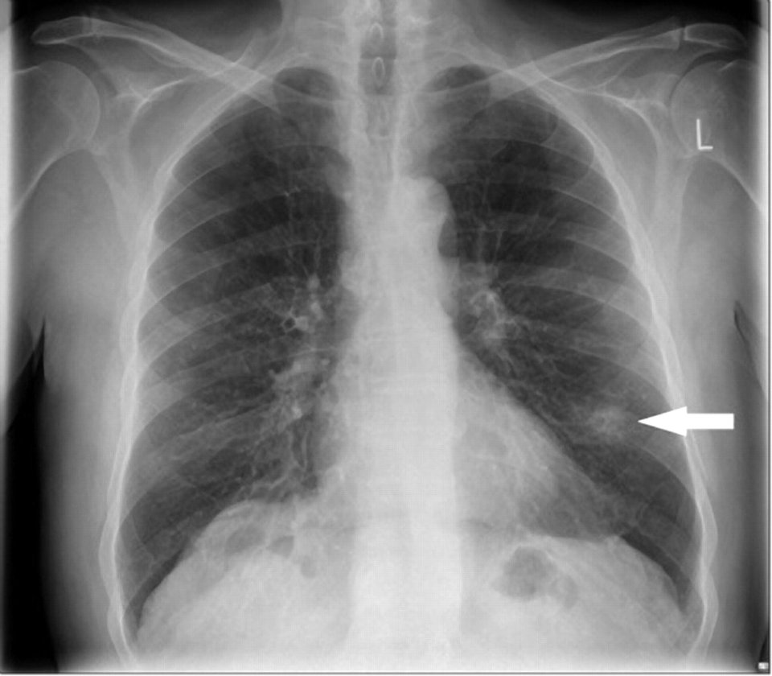
Benign findings on CT (slide 21): each caption is the slide’s own
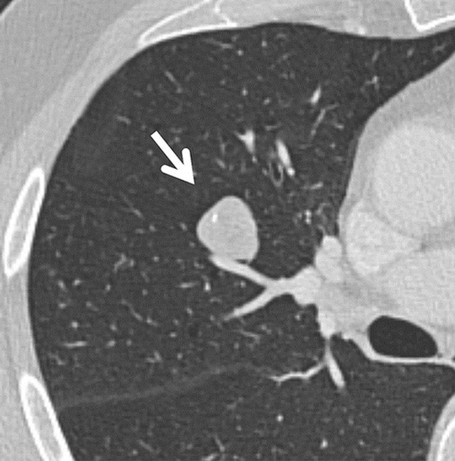
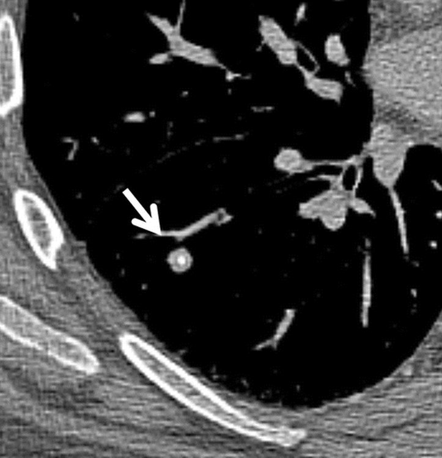
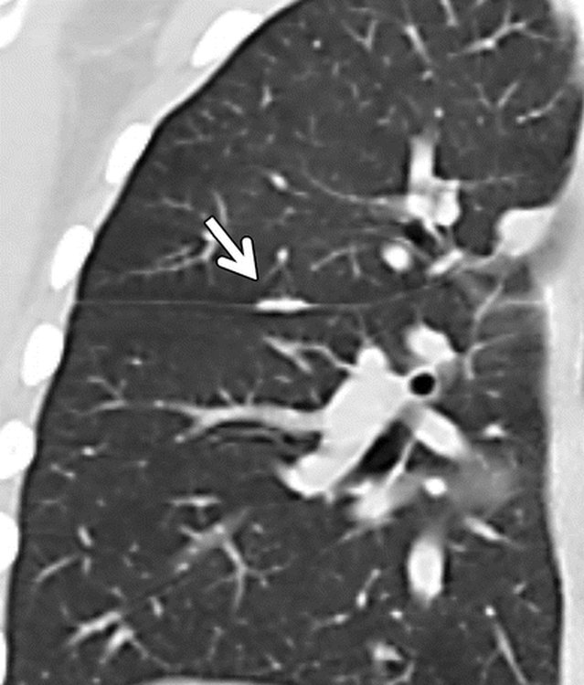
- Positron emission tomography (PET) uptake also raises concern: highly metabolic cells take up the radioactive sugar, while low or normal uptake is a good sign (slide 17; see 5.4).
5.3 · Screening and nodule follow-up
| Lung cancer screening, US Preventive Services Task Force recommendation as slide 18 gives it | |
|---|---|
| Who | Certain high-risk individuals without symptoms or finding of a nodule (found beneficial through the National Lung Cancer Screening Trial) |
| Age | Adults between the ages of 55 and 80 |
| Smoking history | At least a 30 pack-year smoking history |
| Smoking status | Currently smoke, or have quit within the last 15 years |
| Test | Screened annually with a low-dose chest computed tomography (CT): a lower dose of radiation than a standard chest CT (to reduce radiation exposure), which works because lung tissue has high contrast resolution between air and lung nodules |
| Coverage | Medicare only covers 55 to age 77 |
| Upside | Early detection, which can lead to rapid intervention, improving prognosis |
| Downside | A high incidence of false positives that prove benign, and patients receive an unnecessary workup that could have complications (such as a biopsy) |
His reading: “Adults between 55 and 80, so a little older. Who have at least a 30-pack year smoking history, who currently smoke. Or, if they quit in the last 15 years. We’re gonna screen them every year with a low-dose chest CT. Again, lower dose than a standard chest.” Screening is for people without symptoms; a patient with symptoms (5.1) gets a diagnostic workup instead. Current guidelines differ: the 2021 update uses 50–80 and 20 pack-years (box at the top of this section); learn the slide’s numbers.
- Follow-up of incidental nodules (slide 18): the Fleischner Society has maintained guidelines (last updated 2017) for the follow-up and imaging tracking of lung nodules. ★ He said not to memorize the tables: “most of the places that produce chest CT reports, they literally will publish the Fleischner table in those reports … So don’t be like, I need to know all my Fleischner rules.” He read the solid-nodule rows aloud (and underlined the multiple, high-risk, 6–8 mm cell); of the subsolid table he said only “there’s rules, you’re fine.”
| Fleischner Society (2017), A: Solid nodules* (slide 19) | ||||
|---|---|---|---|---|
| Nodule type | <6 mm (<100 mm³) | 6–8 mm (100–250 mm³) | >8 mm (>250 mm³) | Comments |
| Single, low risk† | No routine follow-up | CT at 6–12 months, then consider CT at 18–24 months | Consider CT at 3 months, PET/CT (positron emission tomography with CT), or tissue sampling | Nodules <6 mm do not require routine follow-up in low-risk patients (recommendation 1A). |
| Single, high risk† | Optional CT at 12 months | CT at 6–12 months, then CT at 18–24 months | Consider CT at 3 months, PET/CT, or tissue sampling | Certain patients at high risk with suspicious nodule morphology, upper lobe location, or both may warrant 12-month follow-up (recommendation 1A). |
| Multiple, low risk† | No routine follow-up | CT at 3–6 months, then consider CT at 18–24 months | CT at 3–6 months, then consider CT at 18–24 months | Use most suspicious nodule as guide to management. Follow-up intervals may vary according to size and risk (recommendation 2A). |
| Multiple, high risk† | Optional CT at 12 months | CT at 3–6 months, then at 18–24 months (underlined in class) | CT at 3–6 months, then at 18–24 months | Use most suspicious nodule as guide to management. Follow-up intervals may vary according to size and risk (recommendation 2A). |
| † Consider all relevant risk factors (see Risk Factors). * Dimensions are average of long and short axes, rounded to the nearest millimeter (slide 20 footnote). | ||||
| Fleischner Society (2017), B: Subsolid nodules* (slide 20) | |||
|---|---|---|---|
| Nodule type | <6 mm (<100 mm³) | ≥6 mm (>100 mm³) | Comments |
| Single, ground glass | No routine follow-up | CT at 6–12 months to confirm persistence, then CT every 2 years until 5 years | In certain suspicious nodules < 6 mm, consider follow-up at 2 and 4 years. If solid component(s) or growth develops, consider resection. (Recommendations 3A and 4A). |
| Single, part solid | No routine follow-up | CT at 3–6 months to confirm persistence. If unchanged and solid component remains <6 mm, annual CT should be performed for 5 years. | In practice, part-solid nodules cannot be defined as such until ≥6 mm, and nodules <6 mm do not usually require follow-up. Persistent part-solid nodules with solid components ≥6 mm should be considered highly suspicious (recommendations 4A–4C). |
| Multiple | CT at 3–6 months. If stable, consider CT at 2 and 4 years. | CT at 3–6 months. Subsequent management based on the most suspicious nodule(s). | Multiple <6 mm pure ground-glass nodules are usually benign, but consider follow-up in selected patients at high risk at 2 and 4 years (recommendation 5A). |
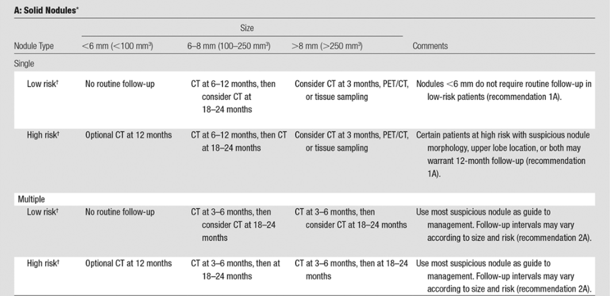
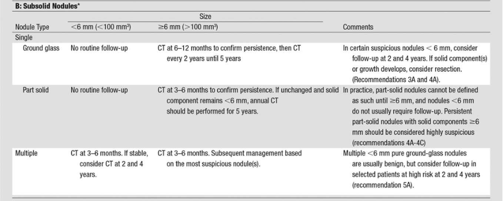
5.4 · Workup of a suspicious nodule or symptoms; positron emission tomography; biopsy
- Chest X-ray is not a good tool here (slide 14): it might be the first thing to see a nodule, but otherwise it is used as a screening tool for ruling out other pathology.
- The standards (slide 14): computed tomography (CT) scan with contrast of the chest and upper abdomen, followed by biopsy or interventional treatment. Biopsy is by bronchoscopy, transthoracic, or thoracoscopy depending on the location of the nodule; it can be CT guided and involve excision. Also a positron emission tomography (PET) scan and genetic testing.
- Additional considerations (slide 14): lab workup: complete blood count (CBC) with differential; comprehensive metabolic panel (CMP) including calcium; alkaline phosphatase (ALP); pulmonary function tests (PFTs); sputum cytology, not sensitive though. He: “usually we don’t do sputum testing,” with one exception, squamous cell carcinoma (5.12).
- How PET works (slide 17): a radioactive sugar (fludeoxyglucose, FDG); highly metabolic cells take up the sugar, suggesting the nodule may be malignant. Low or normal uptake with the nodule is a good sign. It does not rule out inflammatory conditions, as they may also have high uptake. Memory aid (his): tumor tissue is a “hungry, hungry hippo” for sugar, and “This thing shouldn’t be glowing compared to the stuff around it.” So a nodule that lights up still needs tissue: inflammation can glow too.
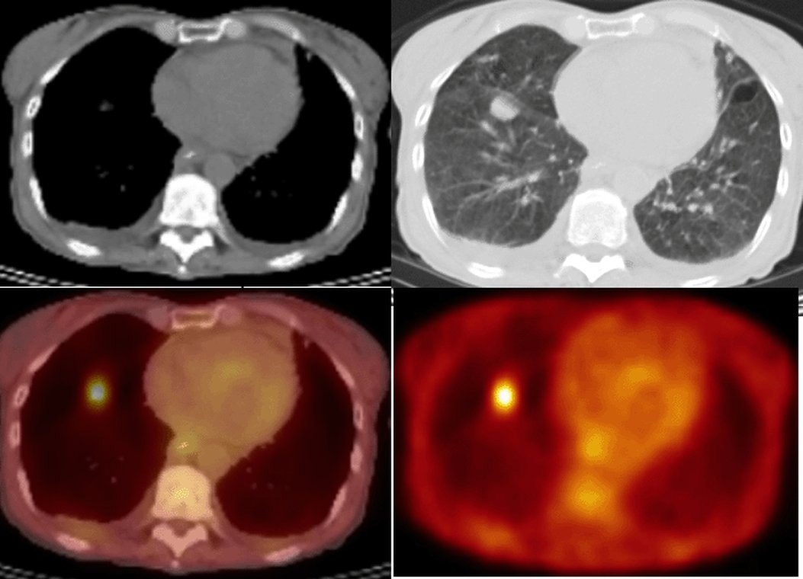
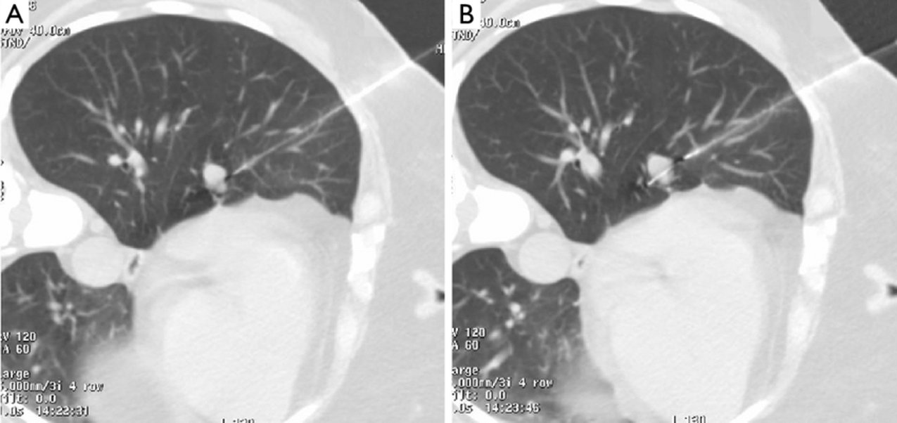
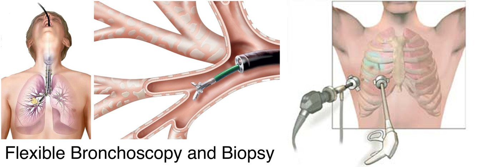
| Lung cancer biopsy / investigation with intervention (slide 15): excision or non-surgical treatment considered → PET-CT scan for staging (if not already performed) → fit for surgery? | ||
|---|---|---|
| Fit for surgery? | Path | End point |
| Yes → choose between | Wedge resection with on-table frozen section | Proceed to completion lobectomy during the same anesthetic |
| Directly (no biopsy first) | Anatomical segmentectomy if unfit for lobectomy | |
| Image-guided lung biopsy → malignancy confirmed? Yes | Lobectomy, or anatomical segmentectomy if unfit for lobectomy | |
| Image-guided lung biopsy → malignancy confirmed? No | Consider repeat biopsy or proceeding to excision/non-surgical treatment if concern about a false-negative biopsy | |
| No → image-guided lung biopsy possible and safe? | Yes: image-guided lung biopsy → malignancy confirmed? Yes | SABR (stereotactic ablative radiotherapy), RFA (radiofrequency ablation) or conventional radical radiotherapy |
| Yes: image-guided lung biopsy → malignancy confirmed? No | Consider repeat biopsy or proceeding to excision/non-surgical treatment if concern about a false-negative biopsy | |
| No (biopsy not possible or not safe) | Straight to SABR, RFA or conventional radical radiotherapy | |
![Flowchart: excision or non-surgical treatment considered, PET-CT scan for staging if not already performed, fit for surgery. Yes: choose between wedge resection with on-table frozen section then completion lobectomy under the same anesthetic, anatomical segmentectomy if unfit for lobectomy, or image-guided lung biopsy then malignancy confirmed (yes: lobectomy or segmentectomy; no: consider repeat biopsy). No: image-guided lung biopsy possible and safe (yes: biopsy, malignancy confirmed, then SABR, RFA or conventional radical radiotherapy; no: straight to those treatments).](cms-e7-images/l43-s015-biopsy-algorithm.png)
Pulmonary nodule
Defining feature: a nodule seen by chance on a chest X-ray or CT; size comes first, and over 6 mm, upper lobe or hilar, spiculated, growing, or in a high-risk patient means work it up
- Definition
- A nodule seen on a chest X-ray or CT; a solitary nodule on a chest X-ray is a “coin lesion.” Most are benign (granuloma, inflammatory; hamartoma, connective tissue growth); some are the start of cancer.
- Who gets it
- Found incidentally when a chest X-ray or chest CT is done for another reason.
- Risk factors
- For malignancy: a patient at high risk of lung cancer (smoking above all, 5.5); size over 6 mm; upper lobe or hilar location.
- Classic signs & symptoms
- Usually none (an incidental finding). Persistent cough, hemoptysis, weight loss and the other symptoms of 5.1 call for a lung cancer workup instead.
- Physical exam findings
- Not covered on the slides.
- Diagnostics / tests
- Estimate size; CT with contrast of the chest and upper abdomen; PET (low or normal uptake is a good sign); biopsy by bronchoscopy, transthoracic needle or thoracoscopy; the probability-of-malignancy algorithm for a new solid nodule 8–30 mm; the Fleischner tables for follow-up.
- First-line treatment
- By probability: very low → CT surveillance at 3–6, 9–12 and 18–24 months; low/moderate → PET, then surveillance or biopsy/resection; high → staging, then video-assisted thoracoscopic surgery with resection. Refer for high probability or moderate/intense uptake.
- Complications
- A cancer found late (symptoms come only when advanced); screening false positives leading to an unnecessary workup with complications such as a biopsy.
Slides 11, 12, 14, 16–21
5.5 · Lung cancer: epidemiology and risk factors
- Deaths (slide 3): responsible for more than 30% of cancer deaths in males (highest mortality of all cancers in men) and more than 25% of cancer deaths in females (second highest mortality in women, after breast cancer; see the guidelines note above).
- Prognosis (slide 3): one of the lowest five-year survivals: 17–18% of patients in the US survive five years after diagnosis (and it is even worse in the rest of the world).
- Smoking (slide 3): implicated in 85 to 90% of cases (second-hand smoke: 20%). The packs per day and years of smoking compound the risk (5x to 10x to 20x, and so on). Smoking is not always involved: adenocarcinoma occurs without it (slide 31), and squamous cell has the strongest link (slide 39).
- Other risk factors (slide 3): exposure to radiation (and radon), air pollution, environmental and chemical toxins, tuberculosis or human immunodeficiency virus (HIV) infection, genetics, diet, and alcohol intake.
- Numbers (slide 3): more than 200,000 new cases yearly in the US and 2 million worldwide. Most occur in people older than 50 (about 4% under 40). ★ “You can’t take it off entirely from your differentials.”
5.6 · The cell types, where they start, and how they spread
- Two main types of lung carcinoma (malignancies that result from epithelial cells, slide 4): small cell lung carcinoma (SCLC, or oat cell; 15–20% of lung cancers) and non-small cell lung carcinoma (NSCLC), subdivided by histology into adenocarcinoma (35–40% on this slide), squamous cell (20–30%) and large cell carcinoma (9 to 10%).
- Mixed and rare types (slide 4): carcinoid tumors, bronchial gland carcinoma, sarcomatoid carcinoma, Pancoast tumors. Otherwise the deck looks at pulmonary nodules in general: benign versus the start of cancer.
- Paraneoplastic syndromes (slide 4): a consequence of a growing tumor, typically the small cell type, is the paraneoplastic neoplasm associated syndromes (5.16–5.17).
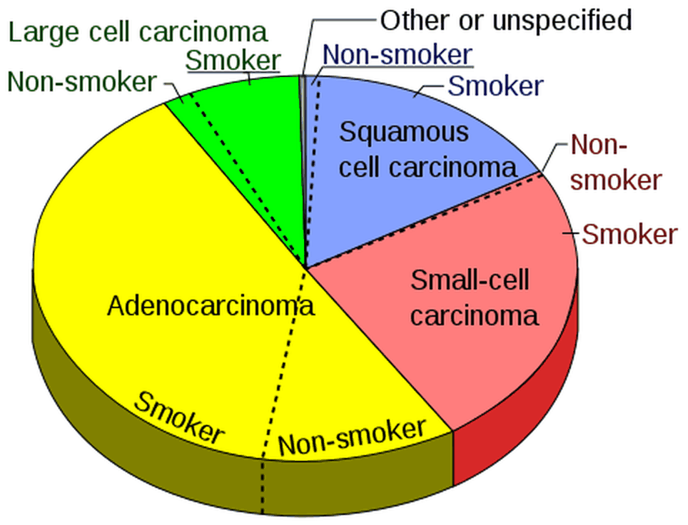
- Neuroendocrine cells line the bronchioles (slide 6 drawing). ★ “If I’ve got a tumor and it’s sitting in the neighborhood of those neuroendocrine cells, and that cancer starts acting like a neuroendocrine cell, I’m gonna start getting weird neuroendocrine symptoms … I’m calling the shot now, that’s where it comes from.” That is the root of the paraneoplastic syndromes (5.17).
- Pneumocytes (slide 8): type I are squamous and extremely thin, cover about 95% of the alveolar surface and do gas exchange; type II are granular and roughly cuboidal, cover about 5% of the surface and secrete pulmonary surfactant. Type II pneumocytes are more common: 60% of the cells in the alveolar epithelium, but only 3 to 5% of the surface area. Type II cells are the usual origin of adenocarcinoma (5.10).
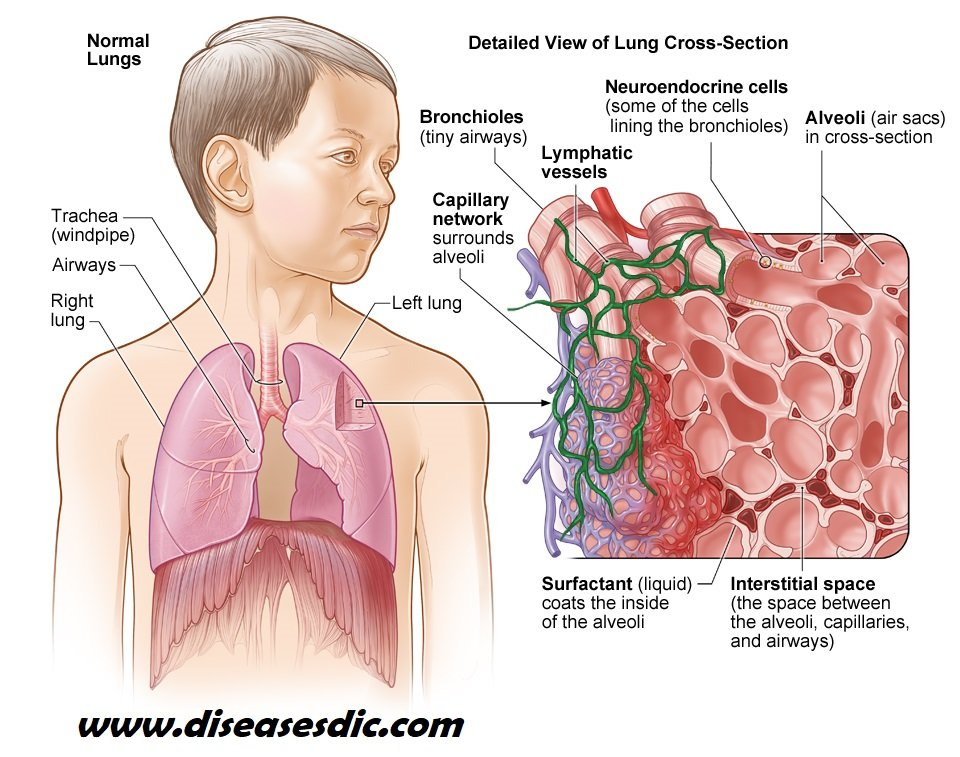
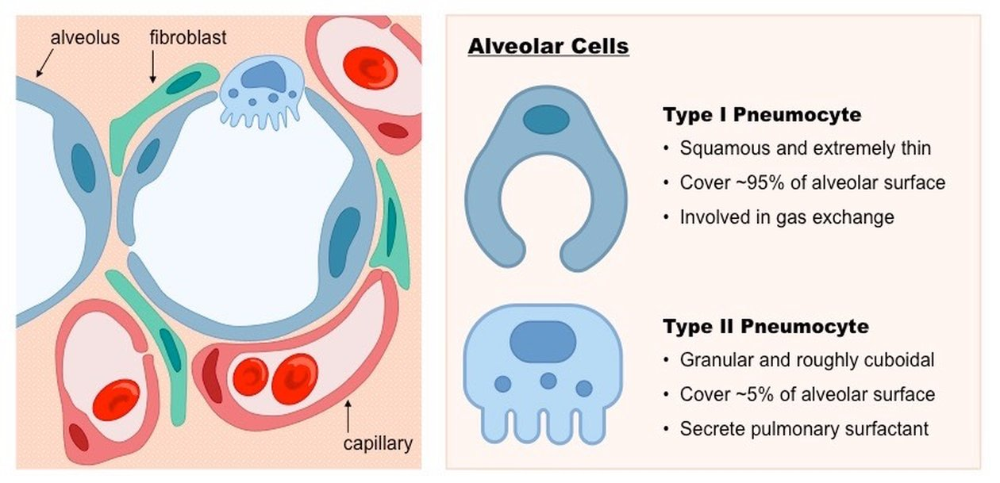
- Pathophysiology (slide 9): carcinogens (or other reasons for the genetic mutation) activate oncogenes in lung cells, and further mutations or loss of regulatory control inactivate the tumor-suppressing genes. Atypical cells proliferate, start locally and spread. Atypical epithelial cells in the bronchial mucosa may grow into the bronchial lumen, along the mucosa, or into the bronchial wall and adjacent lung parenchyma.
- Where (slide 9): most form a mass in or near the hilum, but some form in the periphery, making them difficult to diagnose.
- Spread (slide 9): to regional lymph nodes and distant organs (liver, brain and bone), as the cancer produces angiogenesis to exceed its boundaries and its cells become poorly differentiated and transition from epithelial to other cell types. (Lymph node station numbers on slide 5 were cut: “nobody’s expecting you to, like, number these.”)
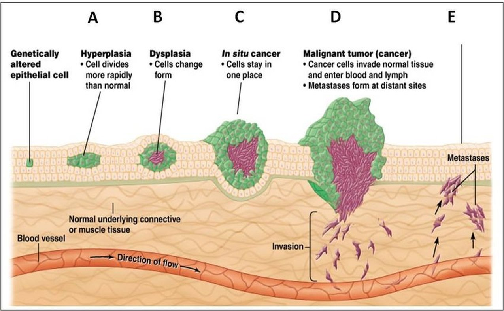
5.7 · How lung cancer presents, including metastatic disease
- Symptoms that call for a lung cancer workup (slide 12): persistent cough, hemoptysis, dysphagia, wheezing or shortness of breath; systemic symptoms: weight loss, fever or fatigue, pain (bone or chest), endocrine disorders. They arrive late, once the disease is advanced or metastatic.
- Metastatic disease (slide 13): patients may have no respiratory symptoms and instead present with other complaints from the metastasis spreading to other regions:
| Metastatic site (slide 13) | Signs and symptoms |
|---|---|
| Brain | Headaches, vision changes, nausea, vomiting, syncopal episodes, seizures. If increased intracranial pressure: papilledema and other changes on fundoscopic exam. If close to the midbrain/pons: cranial nerve involvement (such as defunct extraocular movements). |
| Liver | Right upper quadrant pain (dull ache), hepatomegaly with a firm edge, lack of appetite, jaundice, hepatic failure |
| Bones (can be anywhere, including the spine) | Bone pain; fractures, not even from falls (a cough can cause a spinal fracture); spinal cord compression and peripheral neurological dysfunction |
| “Kidneys” (the slide’s heading): adrenal insufficiency | Fatigue, weight loss, dizziness, hypotension, and electrolyte imbalances (hyponatremia/hyperkalemia) |
Lung cancer (bronchogenic carcinoma)
Defining feature: a smoker over 50 with a persistent cough, hemoptysis or weight loss, or a complaint from a metastasis (headache, seizure, bone pain, a cough fracture), and a mass on computed tomography (CT)
- Definition
- Malignancies of the lung’s epithelial cells: small cell (15–20%) and non-small cell (adenocarcinoma, squamous cell, large cell). Carcinogens activate oncogenes and inactivate tumor-suppressing genes.
- Who gets it
- More than 200,000 new US cases a year (2 million worldwide); most over 50 (about 4% under 40); more than 30% of cancer deaths in men (highest mortality of all cancers in men) and more than 25% in women.
- Risk factors
- Smoking in 85–90% (second-hand smoke 20%), compounding with packs per day and years (5x, 10x, 20x); radiation and radon; air pollution; environmental and chemical toxins; tuberculosis or human immunodeficiency virus (HIV) infection; genetics; diet; alcohol.
- Classic signs & symptoms
- Often none until advanced or metastatic; then persistent cough, hemoptysis, dysphagia, wheezing or shortness of breath, weight loss, fever or fatigue, bone or chest pain, endocrine disorders.
- Physical exam findings
- From metastases: papilledema (raised intracranial pressure), cranial nerve findings, hepatomegaly with a firm edge, jaundice, hypotension (adrenal). A scalene or supraclavicular node is N3 disease (slide 22).
- Diagnostics / tests
- CT with contrast of the chest and upper abdomen, then biopsy (bronchoscopy, transthoracic, thoracoscopic; can be CT guided); positron emission tomography (PET); genetic testing; complete blood count with differential, metabolic panel with calcium, alkaline phosphatase, pulmonary function tests; sputum cytology (not sensitive). Staged by TNM (tumor, node, metastasis) once CT, PET and biopsy are back.
- First-line treatment
- Non-small cell: surgical resection for stages 1–2 if the patient can tolerate it, chemotherapy for stage 4. Small cell: chemotherapy and radiation, with prophylactic cranial irradiation.
- Complications
- Spread to lymph nodes, liver, brain, bone and adrenal glands; paraneoplastic syndromes; five-year survival only 17–18% in the US.
Slides 3, 4, 9, 12–14, 22, 35, 41
5.8 · Staging: TNM and the stage pictures
- When and how (slide 22): lung cancer is staged once the initial computed tomography (CT) scan, positron emission tomography (PET) scan and biopsy results are received: CT identifies location and size; PET looks at lymph involvement; biopsy classes the type of tumor. It follows the classic TNM (tumor, node, metastasis) system: primary tumor, lymph node involvement, distant metastasis.
- Two rules (slide 25): N2 or N3 (mediastinal or contralateral lymph involvement) automatically moves it to stage 3; all stage 1–3 tumors are M0 (no distant metastasis). Tx and Nx are used only if no information at all is available about T or N; Mx is not allowed, because symptoms and physical exam information are always available.
“Stuff that crosses over to the other lung is badness … Size of the tumor is badness. Lymph node involvement, badness. Metastasis, worse badness … that’s kind of your slidey scale.” “I bring this up not to, like, make you memorize the charts”; “tumor, lymph node involvement, metastasis, that’s how you stage it out.” (“7 centimeters is like the size of your hand.”)
- Bigger tumor, higher T: 3 cm or less (T1), more than 3 to 5 (T2), more than 5 to 7 (T3), more than 7 (T4); invasion of nearby structures also raises T.
- Nodes further away, higher N: same-side peribronchial or hilar (N1) → same-side mediastinal or subcarinal (N2) → other side, or any scalene or supraclavicular (N3). N2 or N3 = stage 3.
- Spread, M1 = stage 4: the other lung, the pleura or pericardium, a malignant effusion, or one site outside the chest (4A); multiple sites outside the chest (4B).
| TNM 8th edition (slide 22) | |
|---|---|
| Primary tumor characteristics | |
| Tx | Tumor in sputum/bronchial washings but not be assessed in imaging or bronchoscopy |
| T0 | No evidence of tumor |
| Tis | Carcinoma in situ |
| T1 | ≤ 3 cm surrounded by lung/visceral pleura, not involving main bronchus T1a(mi): minimally invasive carcinoma · T1a: ≤ 1 cm · T1b: > 1 to ≤ 2 cm · T1c: > 2 to ≤ 3 cm |
| T2 | > 3 to ≤ 5 cm or involvement of main bronchus without carina, regardless of distance from carina, or invasion of visceral pleura, or atelectasis or post-obstructive pneumonitis extending to hilum T2a: >3 to ≤4 cm · T2b: >4 to ≤5 cm |
| T3 | >5 to ≤7 cm in greatest dimension, or tumor of any size that involves chest wall, pericardium, phrenic nerve, or satellite nodules in the same lobe |
| T4 | > 7 cm in greatest dimension, or any tumor with invasion of mediastinum, diaphragm, heart, great vessels, recurrent laryngeal nerve, carina, trachea, esophagus, spine, or a separate tumor in a different lobe of the ipsilateral lung |
| Lymph nodes | |
| N1 | Ipsilateral peribronchial and/or hilar nodes and intrapulmonary nodes |
| N2 | Ipsilateral mediastinal and/or subcarinal nodes |
| N3 | Contralateral mediastinal or hilar; ipsilateral/contralateral scalene/supraclavicular |
| Distant metastasis | |
| M1 | Distant metastasis |
| M1a | Tumor in contralateral lung or pleural/pericardial nodule/malignant effusion |
| M1b | Single extrathoracic metastasis, including a single non-regional lymph node |
| M1c | Multiple extrathoracic metastases in one or more organs |
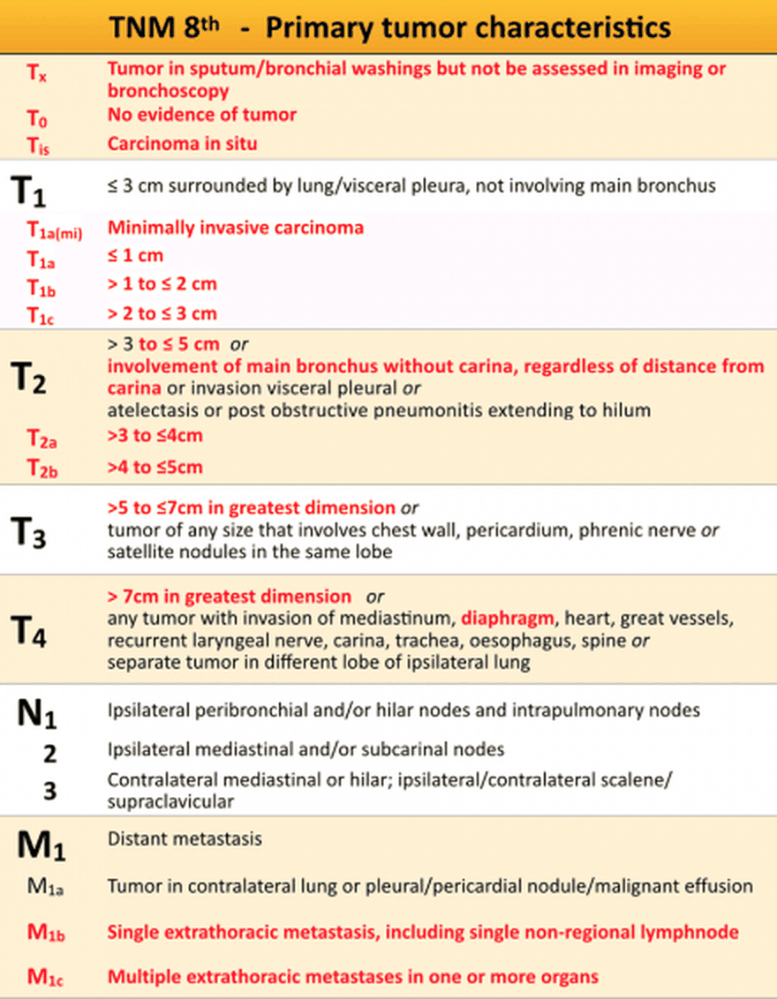
| The stages, as the slide pictures state them (slides 23–29; 8th edition) | |||
|---|---|---|---|
| Stage | Tumor | Lymph nodes | And |
| 1A | No more than 3 cm in the greatest dimension | Not spread to any lymph nodes | — |
| 1B | More than 3 cm but no more than 4 cm | Not spread to any lymph nodes | May or may not have grown into the main bronchus or the lung’s inner lining, or have caused lung collapse or swelling |
| 2A | More than 4 cm but no more than 5 cm | Not spread to any lymph nodes | May or may not have grown into the main bronchus or the lung’s inner lining, or have caused lung collapse or swelling |
| 2B | More than 5 cm but no more than 7 cm | Not spread to any lymph nodes | Grown into the lung’s outer lining or nearby sites including the chest wall, phrenic nerve, or the heart’s lining, or primary and secondary tumors in the same lobe |
| Or no more than 5 cm | Spread to the peribronchial nodes or hilar/intrapulmonary nodes | (slide 24 note) | |
| 3A | More than 7 cm | Not spread to nearby lymph nodes | Grown into the diaphragm, mediastinum, heart or its major blood vessels, windpipe, recurrent laryngeal nerve, carina, esophagus, or spine, or secondary tumors in the same lung but a different lobe |
| More than 5 cm | Spread to the peribronchial nodes and/or the hilar and intrapulmonary nodes of the lung with the primary tumor | Grown into the outer lining or nearby sites (chest wall, phrenic nerve, heart’s lining) or a same-lobe tumor; and/or into the mediastinum, heart or major vessels, windpipe, recurrent laryngeal nerve, carina, esophagus or spine, or a tumor in a different lobe of the same lung | |
| Or no more than 5 cm | Spread to the mediastinal lymph nodes (and subcarinal nodes) | (slide 26 note) | |
| 3B | More than 5 cm | Spread to mediastinal lymph nodes, which include subcarinal nodes, near the lung with the primary tumor | Grown into the outer lining or nearby sites, and/or the mediastinal structures, or a tumor in a different lobe (as 3A) |
| No more than 5 cm | Spread to mediastinal or hilar nodes near the lung without the primary tumor, or to any supraclavicular or scalene lymph nodes | May or may not have grown into the main bronchus or the lung’s inner lining, or caused lung collapse or swelling | |
| 3C | More than 5 cm | Spread to mediastinal or hilar nodes near the lung without the primary tumor, or to any supraclavicular or scalene lymph nodes | Grown into the outer lining or nearby sites, and/or the mediastinal structures, or a tumor in a different lobe |
| 4A | Any size | May or may not have spread to any lymph nodes | Spread from one lung into the other lung; into the lung’s lining or the heart’s lining with secondary nodules; or into the fluid around the lungs or the heart; and/or one site outside the chest (for example, the adrenal gland) |
| 4B | Any size | May or may not have spread to any lymph nodes | Spread to multiple sites outside the chest (for example, the adrenal gland and bones) |
| Stage (slide 25) | TNM groups shown on the 8th-edition classification drawing |
|---|---|
| 0 | Tis N0 (adenocarcinoma in situ; squamous carcinoma in situ) |
| 1A | T1a N0 (≤1 cm), T1b N0 (>1–2 cm), T1c N0 (>2–3 cm), T1a(mi) N0, T1a(ss) N0 (superficial mucosal tumor) |
| 1B | T2a N0 (central), T2a N0 (visceral pleura), T2a N0 (>3 ≤4 cm) |
| 2A | T2b N0 (>4 ≤5 cm) |
| 2B | T1a,b,c N1; T2a N1; T2b (>4–5) N1; T3 N0 (invasion); T3 N0 (>5–7 cm); T3 N0 (satellite nodule) |
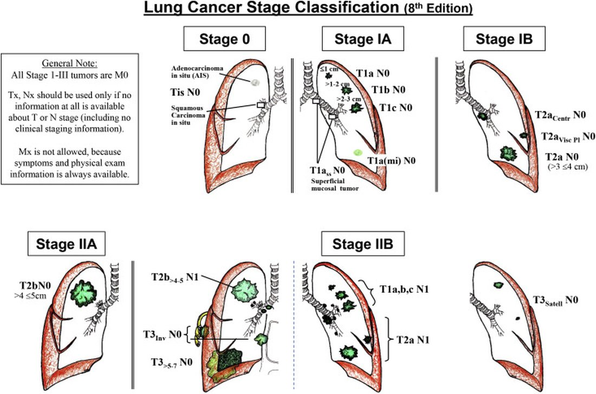
The stage pictures (slides 23–29): the label on each picture states the stage
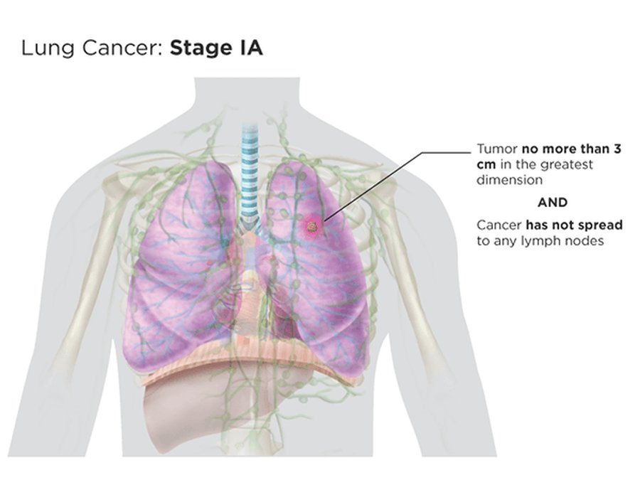
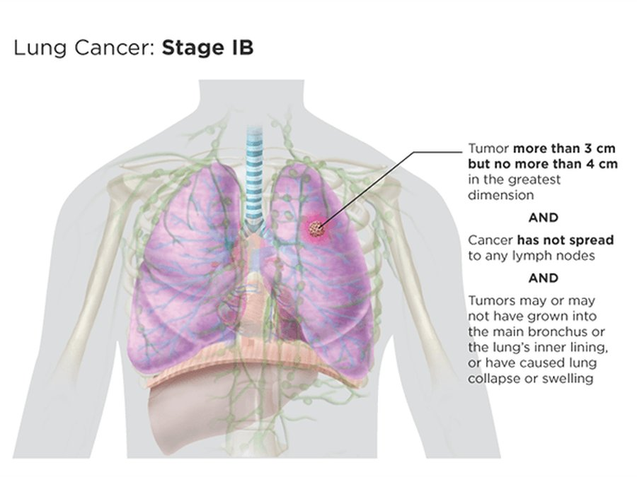
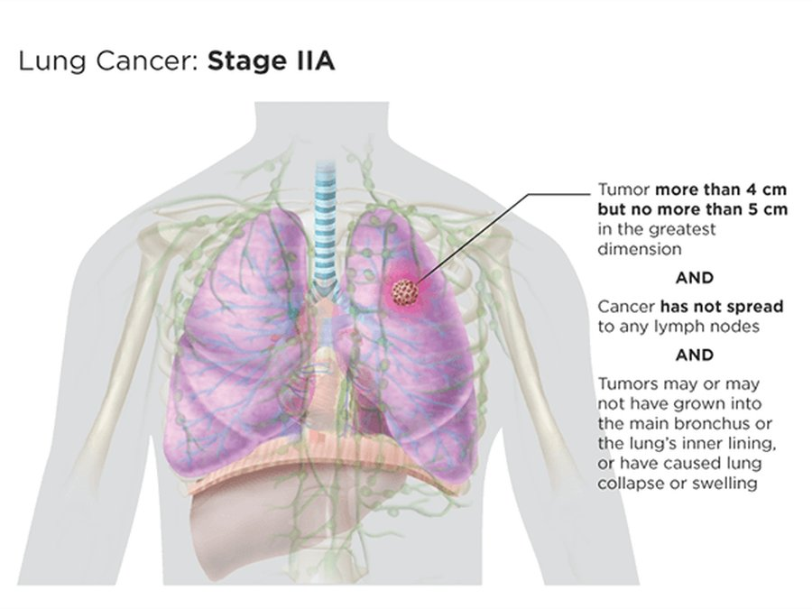
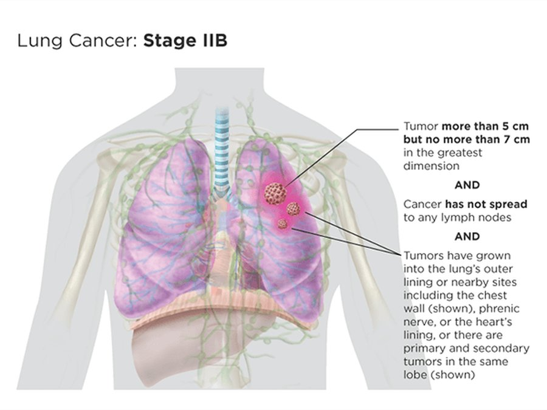
5.9 · Central versus peripheral cancers
| Cancer type (slide 30) | Most common location |
|---|---|
| Small cell | Central, but usually metastatic by the time of diagnosis |
| Adenocarcinoma | Periphery (not amenable to early detection) |
| Squamous cell carcinoma | Central bronchi; can diagnose via sputum cytology |
| Large cell carcinoma | Periphery (not amenable to early detection) |
| Lung carcinomas also have mixed types, such as adenosquamous or combined small cell lung carcinoma. | |
“Couple of things I’ll point out to you, just because this is stuff that comes up on [board review] … small cell, squamous cell, central … Adenocarcinoma, large cell, usually periphery … See, there you go, you got half of it then. So now that I know those two, I know where the other two are.” Memory aid (his): the two S’s sit in the center (Small, Squamous); the other two go to the edges.
5.10 · Adenocarcinoma (a non-small cell cancer)
- The most common lung cancer (slide 31). Frequently located in the mid-lung and periphery. Initial metastases are to the lymphatics before advancing out of the lungs. Frequently associated with peripheral scars. Described as noninvasive, minimally invasive, or invasive.
- Common presenting details (slide 31): over 50 years old with a history of smoking (true of all these lung cancers), but smoking is not always associated with lung cancer; persistent cough and shortness of breath without signs of infection.
- Late presentation (slide 31): many patients (2/3) present only in advanced disease (T2 or higher with N1–3) or when metastatic; most are initially asymptomatic while the cancer progresses. It usually presents with respiratory symptoms first: cough, shortness of breath, chest tightness or pain, hemoptysis, fatigue. Later signs: bone pain, weight loss (underlined in class) and other systemic (paraneoplastic) issues.
- Origin and growth (slide 32): type II pneumocytes are usually the origin, starting with atypical adenomatous hyperplasia (AAH), and the tumor grows initially in situ. Then it either enlarges (lepidic growth across the alveolar lining) or begins to invade the stroma (minimally invasive adenocarcinoma). As it grows it may invade the pleura and then vasculature, or form its own vasculature (invasive adenocarcinoma). Memory aid (his): “adeno” = gland; type II pneumocytes are the glandular cells that make surfactant.
- Histology (slide 32): a mucicarmine stain shows mucin production, which is related to adenocarcinoma; negative staining may point to a large cell carcinoma.
Adenocarcinoma
Defining feature: a peripheral, spiculated nodule, sometimes in a nonsmoker or at a peripheral scar, that stains for mucin
- Definition
- A non-small cell carcinoma usually arising from type II pneumocytes (by way of atypical adenomatous hyperplasia), growing in situ, then lepidic (along the alveolar lining) or into the stroma; noninvasive, minimally invasive or invasive.
- Who gets it
- The most common lung cancer; usually over 50 with a smoking history, but smoking is not always associated.
- Risk factors
- Smoking; frequently associated with peripheral scars.
- Classic signs & symptoms
- Mostly asymptomatic early; persistent cough and shortness of breath without signs of infection; respiratory symptoms first (cough, shortness of breath, chest tightness or pain, hemoptysis, fatigue); later bone pain, weight loss, paraneoplastic issues.
- Physical exam findings
- Not covered on the slides.
- Diagnostics / tests
- Computed tomography (CT): a peripheral (mid-lung or periphery) spiculated nodule, which may involve the pleura; histology with a positive mucicarmine stain (mucin).
- First-line treatment
- As for non-small cell cancer: resection by stage; targeted therapy and immunotherapy by markers (non-squamous disease).
- Complications
- Two-thirds present only when advanced (T2 or higher with N1–3) or metastatic; spreads to the lymphatics first; may invade the pleura and vessels.
Slides 4, 30–32, 35–38
5.11 · Large cell carcinoma (a non-small cell cancer)
- A diagnosis of exclusion (slide 33): it lacks specific characteristics for genetic or histology markers, and is a diagnosis of exclusion for non-small cell carcinoma. Anaplastic and undifferentiated: pleomorphic (variable characteristics), which separates it from adenocarcinoma or squamous cell types.
- Large cells (slide 33): cells about 3 times greater than baseline cell types; it is classed away from small cell carcinoma because their treatments differ. Subtypes: giant-cell carcinoma (a sarcomatoid rare type), basaloid, rhabdoid, neuroendocrine.
- Where and how it looks (slide 33): tends to form in the periphery and forms necrosis or hemorrhages more readily than other non-small cell types. It shows as a large, cavitated mass on chest computed tomography (CT), typically peripheral, as opposed to central like a squamous cell carcinoma, but you still have to wait for biopsy with histology.
- ★ Metastasis to rare areas such as the small intestine and bowel (slide 33): “that’s specific to large cell, so I would say stuff that, like, is unique to a thing makes a great test question.”
- Treatment (slide 33): large cell cancers have no standardized treatments, due to their variety and rarity.
- CT and histology (slide 34): the tumor is in the periphery with cavitation and angiogenesis (it established its own blood flow and spread out); histology still has to confirm a large amount of anaplastic tissue.
Large cell carcinoma
Defining feature: a large, cavitated peripheral mass in a non-small cell cancer with no marker, which can metastasize to the small intestine and bowel
- Definition
- A non-small cell carcinoma of exclusion: no specific genetic or histology markers; anaplastic, undifferentiated and pleomorphic, with cells about 3 times larger than baseline.
- Who gets it
- 9 to 10% of lung cancers (slide 4).
- Risk factors
- Not covered on the slides for this type (lung cancer risk factors, 5.5).
- Classic signs & symptoms
- Not covered on the slides for this type.
- Physical exam findings
- Not covered on the slides.
- Diagnostics / tests
- CT: a large, cavitated peripheral mass with angiogenesis; biopsy with histology must confirm anaplastic tissue; a negative mucicarmine stain may point to it.
- First-line treatment
- No standardized treatment (variety and rarity).
- Complications
- Necrosis and hemorrhage more readily than other non-small cell types; metastasis to rare sites such as the small intestine and bowel.
Slides 4, 30, 32–34
5.12 · Squamous cell carcinoma (a non-small cell cancer)
- Second most common lung cancer (20–30%), with the strongest association with smoking, and frequent cavitation and obstructive phenomena (slide 39).
- Central location, often originating in the bronchus (slide 39).
- Asymptomatic at first until the tumor begins to obstruct the bronchus; then cough, wheezing and hemoptysis are more likely (slide 39). If the obstruction is large enough, part of the lung no longer fills: atelectasis and increased risk of infection (pneumonia).
- Metastasis by local invasion: later signs such as dysphagia and voice changes (it can spread to the laryngeal nerves) (slide 39).
- Lymphangitic spread into the regional lymph nodes, typically in the hilar region (slide 40).
- Unlike the other cancers, it can be caught with sputum testing (slide 40; “Central bronchi, can diagnose via sputum cytology,” slide 30).
- Hypercalcemia is the paraneoplastic syndrome “particularly” of squamous cell (slide 46).
“Cavitation is big with that one. Strongest association with smoking … Cough, wheezing, hemoptysis are huge. This is one of those things where it almost looks like a COPD [chronic obstructive pulmonary disease] … it just looks like their COPD has taken off … constantly in exacerbation. If you CT them, you’d find the tumor.” “This one you might be able to catch with sputum testing. That’s why I say, usually we don’t do sputum testing.” “A lot of times, your squamous cell will make your calcium, a big deal.”
- Management (slide 40): a combination of surgery, chemotherapy, immunotherapy (“as it is a NSCLC”; see the box at the top on slides 37–38) and radiation.
Squamous cell carcinoma
Defining feature: a heavy smoker with cough, wheezing and hemoptysis like a chronic obstructive pulmonary disease (COPD) flare that never settles, a central cavitating mass from a bronchus, and a high calcium
- Definition
- A non-small cell carcinoma in a central location, often originating in the bronchus, with frequent cavitation and obstructive phenomena.
- Who gets it
- The second most common lung cancer (20–30%).
- Risk factors
- Smoking: the strongest association of any type.
- Classic signs & symptoms
- Silent until it obstructs the bronchus, then cough, wheezing and hemoptysis; later dysphagia and voice changes from local invasion (laryngeal nerves).
- Physical exam findings
- Not covered on the slides.
- Diagnostics / tests
- Computed tomography (CT): a large, cavitated, spiculated lesion with nodular inner margins and lymphangitic spread; unlike the others, can be caught by sputum cytology; calcium (hypercalcemia).
- First-line treatment
- Surgery, chemotherapy, immunotherapy (slide 40) and radiation in combination.
- Complications
- Atelectasis and pneumonia behind the obstruction; lymphangitic spread to hilar nodes; dysphagia and voice change; hypercalcemia.
Slides 4, 30, 39, 40, 46
5.13 · Non-small cell treatment by stage; targeted therapy and immunotherapy
- Surgical resection, based on the size and lymph involvement, is a wedge/segment resection or lobectomy (open or by thoracoscopy) or a pneumonectomy (slide 35).
- The patient must be able to tolerate the surgery (that is, survive and recover) (slide 35).
- Chemotherapy and radiation are only an adjunct to surgery, or used if the patient is stage 4, as non-small cell cancers do not respond well to chemotherapy or radiation (slide 35). However, chemotherapy and immunotherapy can now be targeted to specific markers based on genetics and proteins.
- So: stages 1–2 → surgical resection; stage 4 → chemotherapy, with surgery only if there is a solitary metastatic lesion with a resectable primary tumor (the table below). Stage 3 is where the slide’s text and its table differ (box at the top).
“Chemo and radiation we’re doing as an adjunct to surgery, or if you’re in stage 4.” At the recap: “do we do surgery? Do we do chemo? Is it just better for chemo? … big picture, guys.”
| Treatment recommendations and future research directions for non-small cell lung cancer (slide 35) | |||
|---|---|---|---|
| Stage | Standard management | Future directions | Survival |
| 1A and B | Surgical resection | Adjuvant therapy (chemotherapy/radiation or combination); chemoprevention | 75% (1A), 55% (1B) |
| 2A and B | Surgical resection | Same as stage 1 | 50% (2A), 40% (2B) |
| 3A | Chemoradiotherapy, surgical resection in selected patients | Neoadjuvant combined-modality therapy to downstage primary tumor | 10–35% |
| 3B | Chemoradiotherapy | Same as stage 3A | 5% |
| 4 | Cisplatin-based chemotherapy (the slide prints “Ciplatin”), surgical resection if solitary metastatic lesion with resectable primary tumor | More efficacious single-agent and combination chemotherapy | <5% |
| The survival column was not narrated, and no question asks it. | |||
- Molecular and genetic screening (slide 36): molecular analysis and genomic testing of the tumor look for specific mutations and proteins that help the oncologist tailor the therapy. Genes named: TP53 (tumor protein 53), a gene for tumor suppression that allows cancer to grow if damaged or mutated; EGFR (epidermal growth factor receptor); KRAS (the Kirsten rat sarcoma gene), a protein promoting cell growth and survival; ALK (anaplastic lymphoma kinase), a gene making a kinase that promotes cell growth and fuses into other genes. The slide’s pie of mutations in adenocarcinoma (reference only) shows KRAS 30%, EGFR 15%, ALK 5%, ROS1 2%, with TP53 among “unknown and others.” He: “don’t go crazy about details on this, I’m just giving you some examples.”
- Targeted therapy for non-small cell cancer excluding squamous cell (slide 37): based on genetic markers, certain chemotherapy drugs are used; based on protein markers, immunotherapy (checkpoint inhibitors) is used, in combination with or after a poor response to chemotherapy. (The slide’s drug-by-marker flowchart is not reproduced: “I do not expect you to know absolutely specific drugs for, like, this marker, this drug.”)
- Immunotherapy (slide 38): monoclonal antibodies (the “-mab” drugs) for some patients, depending on the markers of their cancer (genes), how they respond to traditional treatments, or if they are not a surgical candidate (stage 4 or metastatic patients, for example). They are classed as targeted antibodies or immunomodulator antibodies. Examples: nivolumab (Opdivo) and pembrolizumab (Keytruda) for some time; newer, ipilimumab (Yervoy) with nivolumab; pembrolizumab now also in stage 3 and small cell; nivolumab and atezolizumab (Tecentriq) approved in some small cell cases. Others, less common, are chosen due to the subset (genetic variant) of the cancer (underlined in class).
- How a checkpoint inhibitor works (slide 38): drugs such as nivolumab or pembrolizumab work on the PD-1 (programmed cell death protein 1) pathway: the immune T cell is no longer inactivated by the cancer cell through PD-1 (less T-cell death), so it attacks and kills the tumor cells.
- ★ Referral: “you’re not doing oncology. Your job as a primary care PA, as an emergency medicine PA … is be able to screen and figure out risk for that patient, and then refer.”
Non-small cell lung cancer (adenocarcinoma, squamous cell, large cell)
Defining feature: one of the three histology types, staged by TNM and treated by stage: surgery when it can be resected and the patient can tolerate it, chemotherapy for stage 4
- Definition
- Non-small cell lung carcinomas, divided by histology into adenocarcinoma, squamous cell carcinoma and large cell carcinoma.
- Who gets it
- Adenocarcinoma is the most common, squamous cell 20–30%, large cell 9–10%; usually over 50 with a smoking history.
- Risk factors
- Smoking (strongest for squamous cell; not always present with adenocarcinoma); the general lung cancer risks (5.5).
- Classic signs & symptoms
- Respiratory symptoms first (cough, shortness of breath, chest tightness or pain, hemoptysis, fatigue); later bone pain, weight loss and paraneoplastic issues.
- Physical exam findings
- Not covered on the slides beyond metastatic findings (5.7).
- Diagnostics / tests
- Computed tomography (CT), positron emission tomography (PET), biopsy with histology (mucicarmine: mucin = adenocarcinoma, negative may point to large cell); molecular and genetic testing (TP53, EGFR, KRAS, ALK); sputum cytology can catch squamous cell.
- First-line treatment
- Surgical resection (wedge or segment, lobectomy, pneumonectomy) by size and nodes if tolerated; chemotherapy and radiation as adjuncts or for stage 4 (they respond poorly); targeted chemotherapy and immunotherapy (checkpoint inhibitors) by markers.
- Complications
- Metastasis; two-thirds of adenocarcinomas present advanced or metastatic; obstruction with atelectasis and pneumonia (squamous); hypercalcemia (squamous).
Slides 4, 30–40
5.14 · Small cell (oat cell) carcinoma and radiotherapy
- Three categories, based on the presence of metastasis (slide 41): limited stage (confined to one area with only local lymph nodes involved); extensive stage (spread away from the local area); combined (different histological types, mixed with non-small cell).
- Central location; infiltrates the mucosa (slide 41). The result is an insidious development: most patients (over 70%) are metastatic (liver, bone, brain) before detection.
- Neuroendocrine paraneoplastic symptoms (slide 41) can develop, if the carcinoma develops from the APUD (amine precursor uptake and decarboxylation) cells that secrete polypeptide hormones (5.17).
- Once the tumor is large enough for symptoms, it also has a high cavitation rate (slide 41).
- Immunotherapy is less effective on small cell because of its genetic variability, but is becoming an option with more targeted therapy (slide 41). Genetic risk: associated with a lesion of the short arm of chromosome 3 (slide 41).
- Histology (slide 42): small cell lung carcinoma is a fragile tumor, often crushed during biopsy; the small size of the tumor cells and lack of nucleoli can still be appreciated, and the high nuclear-to-cytoplasm ratio is demonstrated.
- Small cell responds better to chemotherapy and radiation than the three non-small cell cancers (slide 41).
- Radiation works best if the cancer is in limited stage (slide 41).
- Prophylactic cranial irradiation (PCI) after a complete or partial response: given in limited stage, considered in extensive stage (slide 43).
“This one does better with chemo and radiation than the other types. If the cancer’s pretty limited, you can radiate it really effectively.” “PCI is prophylactic cranial irradiation. We’re literally gonna radiate the brain just in case there’s metastasis. You’ve got such a high chance of mets from something like this.”
Small cell management is determined by the NCCN (National Comprehensive Cancer Network; slide 43). Two adjunct immunotherapies are also approved for small cell: nivolumab (Opdivo) and atezolizumab (Tecentriq). PCI = prophylactic cranial irradiation. He said not to memorize the follow-up schedule (“don’t memorize that”).
| Small cell lung cancer: response assessment following initial therapy (slide 43 flowchart) | |||
|---|---|---|---|
| Assessment: chest X-ray (optional); chest/abdomen CT with contrast; brain magnetic resonance imaging (MRI) (preferred) or CT with contrast, if prophylactic cranial irradiation (PCI) is to be given; complete blood count; electrolytes, liver function tests, blood urea nitrogen, creatinine | |||
| Response | Stage | Adjuvant treatment | Follow-up after completion of initial therapy |
| Complete or partial response | Limited | PCI (category 1) | Oncology follow-up visits every 3 months during years 1–2, every 6 months during year 3, then annually |
| Extensive | Consider PCI ± thoracic radiotherapy | Every 2 months during year 1, every 3–4 months during years 2–3, every 6 months during years 4–5, then annually | |
| Stable disease | Limited | — | Every 3 months during years 1–2, every 6 months during year 3, then annually |
| Extensive | — | Every 2 months during year 1, every 3–4 months during years 2–3, every 6 months during years 4–5, then annually | |
| Primary progressive disease | See subsequent therapy / palliative therapy | ||
| Surveillance: at every visit, history and physical, CT chest/abdomen; bloodwork only as clinically indicated · if PCI not given, MRI (preferred) or CT brain with contrast every 3–4 months during years 1–2 · a new pulmonary nodule should initiate workup for a potential new primary · smoking cessation intervention · positron emission tomography (PET)/CT is not recommended for routine follow-up · for relapse, see subsequent therapy | |||
| Footnotes: brain MRI is more sensitive than CT for identifying brain metastases and is preferred over CT; PCI is not recommended in patients with poor performance status or impaired neurocognitive function; sequential radiotherapy to the thorax in selected patients, especially with residual thoracic disease and low-bulk extrathoracic metastatic disease that has responded to systemic therapy. | |||
- How radiotherapy is given (slide 44): a linear accelerator has single to multiple beams that fire photons or charged particles at the targeted area, limiting the amount of radiation to the whole body.
| Consequences of lung radiotherapy (slide 45) | What they are |
|---|---|
| Acute effects | Localized skin, mucosa and tissue changes (erythema and hyperpigmentation of skin; at risk for ulcerations); inflammation; hair loss. Less systemic effects than chemotherapy, so limited nausea and vomiting typically. |
| Chronic effects and changes | Pulmonary fibrosis and scarring of affected tissues; cardiovascular fibrosis and other damage to the myocardium resulting in coronary artery disease, valvular disease, or cardiomyopathy; hair loss (less systemic than chemotherapy, localized to the targeted area); lymphedema and fluid retention from damage to the lymphatic system (think axillary); neuropathy. |
Small cell lung cancer (oat cell)
Defining feature: a smoker with a central mass already spread to liver, bone or brain, or who arrives confused and seizing from a low sodium (SIADH); the cancer that radiation helps most
- Definition
- Small cell (oat cell) carcinoma: central, infiltrating the mucosa, from neuroendocrine (APUD) cells; limited, extensive or combined.
- Who gets it
- 15–20% of lung cancers; the type that typically causes paraneoplastic syndromes.
- Risk factors
- Genetic risk: a lesion of the short arm of chromosome 3 (and the general lung cancer risks, 5.5).
- Classic signs & symptoms
- Insidious: over 70% are metastatic (liver, bone, brain) before detection; neuroendocrine paraneoplastic symptoms such as SIADH (confusion, seizures, ataxia).
- Physical exam findings
- Not covered on the slides.
- Diagnostics / tests
- Biopsy: fragile, often crushed; small cells, no nucleoli, high nuclear-to-cytoplasm ratio. Staged limited versus extensive; brain MRI preferred over CT.
- First-line treatment
- Chemotherapy and radiation (it responds better than the three non-small cell types; radiation best in limited stage); prophylactic cranial irradiation after a complete or partial response (limited stage; considered in extensive); nivolumab or atezolizumab as adjunct immunotherapy.
- Complications
- Early metastasis to liver, bone and brain; high cavitation rate once large; paraneoplastic syndromes; radiotherapy effects (acute skin changes; chronic fibrosis, heart disease, lymphedema, neuropathy).
Slides 4, 30, 41–45, 48
5.15 · Lung neuroendocrine (carcinoid) tumors
- Carcinoid tumors are listed among the mixed and rare lung cancers (slide 4).
- Carcinoid syndrome (slide 48): for lung causes, it comes mainly only from a bronchial carcinoid. The release of serotonin from the cancer cells leads to multiple other symptoms, by system (the slide’s diagram):
| Carcinoid syndrome (slide 48 diagram) | Findings |
|---|---|
| Skin | Cutaneous flushes; apparent cyanosis |
| Heart | Pulmonic and tricuspid valve thickening and stenosis; endocardial fibrosis |
| Respiratory | Cough, wheezing, dyspnea |
| Liver | Hepatomegaly |
| Gastrointestinal | Diarrhea, cramps, nausea, vomiting |
| Elsewhere | Retroperitoneal and pelvic fibrosis |
The slides give carcinoid tumors no epidemiology, imaging, diagnostic test, management or prognosis; the guide adds none.
Lung neuroendocrine (carcinoid) tumor
Defining feature: flushing, diarrhea and wheezing from serotonin, with pulmonic and tricuspid valve thickening: carcinoid syndrome from a bronchial carcinoid
- Definition
- A lung neuroendocrine (carcinoid) tumor, one of the mixed and rare lung cancers; for lung causes, carcinoid syndrome comes mainly only from a bronchial carcinoid.
- Who gets it
- Not covered on the slides.
- Risk factors
- Not covered on the slides.
- Classic signs & symptoms
- Carcinoid syndrome from serotonin release: cutaneous flushes, apparent cyanosis; diarrhea, cramps, nausea, vomiting; cough, wheezing, dyspnea.
- Physical exam findings
- Flushing and apparent cyanosis of the skin; wheezing; hepatomegaly (the slide 48 diagram).
- Diagnostics / tests
- Not covered on the slides.
- First-line treatment
- Not covered on the slides.
- Complications
- Pulmonic and tricuspid valve thickening and stenosis, endocardial fibrosis; retroperitoneal and pelvic fibrosis.
Slides 4, 48
5.16 · Paraneoplastic syndromes: SIADH, hypercalcemia and the others
Paraneoplastic neoplasm associated syndromes result from secreted hormonal or cytokine effects from tumor tissue (either the primary or a metastasis); lung cancer may present with different systems involved (slide 46):
| System (slide 46) | Syndrome |
|---|---|
| Endocrine | Syndrome of inappropriate antidiuretic hormone (SIADH) (small cell, slide 48); hypercalcemia (particularly squamous cell) |
| Neurological | Lambert-Eaton myasthenic syndrome (autoimmune); cerebellar degeneration or brain encephalitis (autoimmune). (The slide’s “central” and “peripheral” tags are not used: box at the top.) |
| Dermatological | Acanthosis nigricans or dermatomyositis |
| Hematological | Listed; the slide gives no example |
“Big thing to consider, this is … we kind of hinted at this earlier … I’m gonna start getting tumors that look like neuroendocrine problems, not lung problems. So sometimes, it looks like SIADH … You can get hypercalcemia. A lot of times, your squamous cell will make your calcium, a big deal.” And: “Small cell lung cancer, you can get SIADH, because that’s real … you end up with all the same things you get with SIADH, hyponatremia, changes [to] the osmolality … that patient may show up in the [emergency department] because of the confusion and seizures, and you work it up, and you’re like, oh, that’s lung cancer.”
- SIADH from small cell (slide 48): small cell lung cancer produces carcinoma cells that also produce SIADH, through development from neuroendocrine cells in the tumor. This leads to excessive antidiuretic hormone (ADH, vasopressin) production, and the body retains too much water. The mechanisms: hyponatremia and decreased serum osmolality, resulting in confusion, seizures, ataxia and other neurological dysfunction, but no signs of peripheral or pulmonary edema (because it is insidious over time). The slides give no diagnostic criteria and no treatment for it.
- Hypercalcemia (slide 46): an endocrine paraneoplastic syndrome, particularly of squamous cell carcinoma; calcium is part of the lung cancer lab workup (the comprehensive metabolic panel including calcium, slide 14). The slides give no symptoms, mechanism or treatment for it.
- Lambert-Eaton myasthenic syndrome (slide 47): a rare autoimmune disorder causing progressive, debilitating muscle weakness, particularly in the legs. The immune system attacks calcium channels on nerve endings; the non-functioning calcium channels prevent the release of acetylcholine (ACh), the chemical that sends messages between nerves and muscles; without enough acetylcholine, muscles cannot contract properly, giving weakness. It is caused by an immune attack at the neuromuscular junction. Rare: a yearly prevalence of only 3000 patients.
![Infographic, Lambert-Eaton Myasthenic Syndrome (LEMS), a rare autoimmune disorder that causes progressive, debilitating muscle weakness, particularly in the legs: the immune system attacks calcium channels on nerve endings (autoantibodies on calcium channels); non-functioning calcium channels prevent the release of acetylcholine; without enough acetylcholine, muscles are unable to contract properly, resulting in muscle weakness (a drawing of the legs). Banner: caused by an immune system attack at the neuromuscular junction.](cms-e7-images/l43-s047-lambert-eaton.png)
SIADH (paraneoplastic, small cell)
Defining feature: a patient with small cell lung cancer, confusion, seizures or ataxia, a low sodium and low serum osmolality, and no edema
- Definition
- Syndrome of inappropriate antidiuretic hormone: excessive antidiuretic hormone (vasopressin) makes the body retain too much water.
- Who gets it
- Patients with small cell lung cancer, through the tumor’s neuroendocrine cells.
- Risk factors
- Small cell lung cancer (an endocrine paraneoplastic syndrome).
- Classic signs & symptoms
- Confusion, seizures, ataxia and other neurological dysfunction.
- Physical exam findings
- No signs of peripheral or pulmonary edema (it develops insidiously).
- Diagnostics / tests
- Hyponatremia and decreased serum osmolality; the slides give no diagnostic criteria.
- First-line treatment
- Not covered on the slides.
- Complications
- Seizures; it may be how the lung cancer is found (“oh, that’s lung cancer”).
Slides 46, 48
Hypercalcemia (paraneoplastic, squamous cell)
Defining feature: a high calcium in a smoker with a central squamous cell lung cancer
- Definition
- An endocrine paraneoplastic syndrome of lung cancer: a raised calcium from the tumor’s secreted effects.
- Who gets it
- Particularly patients with squamous cell carcinoma.
- Risk factors
- Squamous cell lung cancer.
- Classic signs & symptoms
- Not covered on the slides.
- Physical exam findings
- Not covered on the slides.
- Diagnostics / tests
- Calcium on the comprehensive metabolic panel in the lung cancer lab workup.
- First-line treatment
- Not covered on the slides.
- Complications
- Not covered on the slides.
Slides 14, 46
5.17 · Small cell lung cancer and the paraneoplastic syndromes: the link
- Where it starts: neuroendocrine cells line the bronchioles (slide 6). A tumor among them that “starts acting like a neuroendocrine cell” gives “weird neuroendocrine symptoms” (his words).
- Which cancer: the paraneoplastic syndromes are a consequence of a growing tumor, typically the small cell type (slide 4). Small cell can develop neuroendocrine paraneoplastic symptoms if the carcinoma develops from the APUD (amine precursor uptake and decarboxylation) cells that secrete polypeptide hormones (slide 41).
- How: the syndromes come from secreted hormonal or cytokine effects from tumor tissue, the primary or a metastasis (slide 46).
- The classic example: small cell → neuroendocrine cells in the tumor → excess antidiuretic hormone (vasopressin) → water retention → hyponatremia and low serum osmolality → confusion, seizures, ataxia, with no edema (slide 48).
- Why it matters: small cell is insidious and over 70% are metastatic before detection (slide 41), so the paraneoplastic picture may be the first sign: “maybe I accidentally find lung cancer.” Slide 49 asks for the paraneoplastic signs “(i.e. small cell).”
- Not every syndrome is small cell: hypercalcemia is particularly squamous cell (slide 46); carcinoid syndrome is from a bronchial carcinoid (slide 48).
5.18 · Adults and older adults; referral and education
| Domain | Adults | Older adults |
|---|---|---|
| Who | About 4% of lung cancers occur under 40: keep it on the differential (slide 3) | Most occur over 50 (slide 3); adenocarcinoma’s usual patient is over 50 with a smoking history (slide 31) |
| Screening | Symptoms at any age mean a diagnostic workup, not screening (slides 12, 18) | 55–80, at least 30 pack-years, smoking now or quit within 15 years: low-dose chest computed tomography every year; Medicare covers 55–77 (slide 18) |
| Treatment | Resection if the patient can tolerate surgery (survive and recover) (slide 35) | Unfit for lobectomy → anatomical segmentectomy; unfit for surgery → image-guided biopsy if possible and safe, then stereotactic ablative radiotherapy, radiofrequency ablation or conventional radical radiotherapy (slide 15) |
| Radiotherapy | Acute effects: skin changes (risk of ulceration), inflammation, hair loss, little nausea (slide 45) | Chronic effects: pulmonary fibrosis, coronary artery disease, valvular disease, cardiomyopathy, lymphedema, neuropathy (slide 45); prophylactic cranial irradiation is not recommended with poor performance status or impaired neurocognitive function (slide 43) |
| Referral | High probability of malignancy, or moderate/intense uptake on positron emission tomography: pulmonologist, thoracic surgeon, interventional radiologist or oncologist (slide 11). His framing of primary care’s job: screen, figure out risk, and refer. | |
| Education and prognosis | Smoking drives 85–90% of cases and the risk compounds with packs per day and years (slide 3); smoking cessation is part of small cell surveillance (slide 43); screening’s upside is earlier intervention, its downside false positives and unnecessary workups (slide 18); five-year survival is only 17–18% (slide 3), because symptoms come late (slide 12). | |
6 · Pleural Disorders
Lecture 44 · Rob Gray, DMSc, PA-C, Adjunct Instructor (guest lecturer) · Wednesday 4 November 2026, 1–3 PM
Instructional Objectives
PLEURAL DISORDERS — Rob Gray, DMSc, PA-C
- Compare and contrast the etiologies, epidemiology, risk factors, clinical manifestations, differential diagnosis, diagnostic testing (including ordering and interpretation), management (acute and chronic, including applicable rehabilitative and palliative care), appropriate referrals, patient education, and prognosis of the following: 2. Pneumothorax 3. Spontaneous 4. Traumatic 5. Hemothorax 6. Chylothorax 7. Pleural effusion 8. Pneumomediastinum 9. Pleurodynia 10. Pleurisy 11. Empyema
- Identify medical care strategies for pleural disorders in the lecture topic list for the following populations. 2. adult 3. elderly
Quoted as the syllabus prints it, its own numbering kept (it numbers the disorders 2–11 and restarts the population objective at 1, numbering the populations 2–3). Answered in order: 1 across 6.1–6.15 in the deck’s order (the pleura 6.1; pleurisy 6.2; pneumothorax and its spontaneous type 6.3–6.7; traumatic pneumothorax, with tension, 6.8; hemothorax 6.9; pneumomediastinum 6.10; pleural effusion 6.11–6.12 and 6.14; chylothorax and empyema 6.13; pleurodynia 6.15); 2 in 6.16.
What Dr. Gray stressed, and what he said is and is not tested (the Zoom recording of the live lecture, Wednesday 4 November 2026: 1 hour 38 minutes, about 76 minutes of teaching; quotes from Zoom’s transcript, placed against the slide on screen; every fact below still comes from the slides).
- Light’s criteria (slide 101, which carries a lightbulb icon, as does the transudate slide 110): “it’s gotta meet at least one of these … And we bring it up because that makes great test questions.”
- Tension pneumothorax is recognized at the bedside, not on a film. Hypotension, a trachea pushed to one side, neck veins distended, decreased or absent breath sounds: “At that point, I don’t have to prove it … It is reasonable to act.” Of the slide 65 X-ray: “You should never ever see this before recognizing it. I will hear about it, I will find you.” Of the needle: “This needle does not solve the problem, this needle buys moments.” The class poll (slide 80) answer was tracheal deviation away from the collapsed lung: “That’s the tracheal deviation we’re looking for … test questions … gotta be pretty specific.”
- Needle decompression site (slide 67), second intercostal space over the third rib, midclavicular line: “For test purposes for now, that would be the right answer, however,” and then a patient with a large body habitus may need the fourth or fifth space (“that’s why we say typical site, not only site”; slide 68 says the same).
- The board trap on spontaneous pneumothorax (slide 20): “Your classic board question for … a secondary spontaneous pneumothorax is like … tall, skinny, Marfan … 22-year-old.” Marfan syndrome is a connective tissue disease, so the pneumothorax is secondary even in a tall, thin young man.
- Numbers he likes: the 3 cm apex-to-cupola size (“I like having a nice, easy number”; again on slide 55, “I love having a number”) and the stability list (slide 51: “You can get two sentences, and look at the vitals … So don’t overthink it”). Imaging: “don’t confuse gold standard with best initial test” (CT is the gold standard; the upright chest radiograph comes first).
- Patient education after a spontaneous pneumothorax (slides 58–60): “this may be a question you get. So, explain why it happened … recurrence can be about 50% within 3 years.”
- Effusions: “malignancy and CHF [congestive heart failure] are gonna be your frequent flyers” (slide 83); of transudates, “Most of it’s gonna be CHF … Like, 90%” (slides 110–111).
- Lighter touch, by his own words: the causes of pleurisy (“I don’t worry too much about the cause”); the procedures, a drive-by before next summer’s procedures course (“I want to introduce you, but I don’t want to make you an expert … Recognize the problem, know what the toolbox looks like … Doesn’t say ignore it”; slide 73: “don’t worry too hard about specifics at this point”); chest tube sizes (“don’t worry about it”); the slide 97 laboratory thresholds (“Don’t go crazy about this, these are all possibilities for lab testing out of the textbook”); nephrotic syndrome and pulmonary embolism as transudates (“really, really down the rabbit hole”); and the flow charts (“Do I want you to memorize the entire flow chart for things? Absolutely not, but I want you to have a reference”).
- Time on topic (minutes of teaching): pneumothorax took about 60% of the lecture: procedures 9.5, spontaneous treatment and education 9, imaging and size 8.25, types and presentation 8, traumatic and tension 7.75. Then the pleura and pleurisy 7, effusion causes and examination 6.25, effusion imaging and fluid analysis 6, hemothorax 3.75, pneumomediastinum 3.75, exudates (chylothorax, empyema) 3, pleurodynia 2, transudates and treatment 1.75. The practice sets follow these shares.
Where the slides are loose or disagree
- The 3 cm boundary. Slide 28 calls a pneumothorax small under 3 cm and large at 3 cm or more; slide 55 puts moderate or large primary pneumothorax at “>3 cm” and slide 56 puts small secondary pneumothorax at “≤3 cm.” Exactly 3 cm is therefore never asked.
- Large symptomatic primary pneumothorax. Slide 55 treats it with a chest tube; the slide 58 picture calls simple needle aspiration the “first-line evacuation method for symptomatic primary spontaneous pneumothorax” and its table lists “Simple Aspiration or Small-Bore Catheter” for “Symptomatic, large (>25% lung collapse)”. He said chest tube aloud. The picture’s percentages (<20%, >25%) are not taught as testable.
- Tension: tube or needle first? Slide 66: immediate chest tube placement is ideal; if a chest tube is not readily available, immediate needle decompression, followed by a moderate or large chest tube. The slide 58 picture puts urgent needle decompression first, then “Immediate Chest Tube.” Both agree that a chest tube follows the needle.
- Timings. Slide 53 repeats the chest film at 6–12 hours (and 24–48 hours); the slide 58 picture observes stable patients “for four to six hours.” Slide 58 sends air leaks over 72 hours (its table: “>72–96 hours”) to surgery; slide 60 seeks surgical evaluation for an air leak lasting over 4 days. Learn slide 53’s numbers.
- Recurrence figures are different windows, not a contradiction: slide 59, approaches 50% within three years; slide 60, one-third of primary cases within one to two years, over 60% after a second episode, over 75% of recurrences on the original side.
- Pulmonary embolism effusion. Slide 111 lists it among transudates; the slide 112 chart lists it among exudative common causes; the slide 83 picture calls it “variable”; slide 81 gives it altered permeability. Its class is never asked. Likewise the slide 83 picture calls malignancy, sarcoidosis, chylothorax and pancreatitis “variable,” while slides 102–106 and 112 file malignancy, pancreatic disease and chylothorax under exudates.
- First imaging for an effusion. Slide 90 opens with the upright chest radiograph; the slide 97 picture calls thoracic point-of-care ultrasound the “Preferred initial imaging modality”; slide 95 says ultrasound replaced the decubitus film.
- Pleurodynia. Slide 118: symptoms resolve in 2–4 days; the slide 119 picture: most recover in 4–6 days (no duration is keyed). Slides 116 and 118 give an elevated creatine kinase; the slide 119 picture says routine laboratory tests show no characteristic pathognomonic abnormalities. Learn the creatine kinase.
- Drug lists differ by condition: pleurisy (slide 10) methotrexate, amiodarone, hydralazine; effusion (slide 83 picture) amiodarone, methotrexate, beta blockers.
- Chest tube site. Slides 41, 68 and 73: fourth or fifth intercostal space, midaxillary line (typical); slide 73 adds the second to third intercostal space at the midclavicular line for anterior access, less common and specific to pneumothorax.
- Mechanical ventilation. Slide 17 files it under iatrogenic pneumothorax (an injury from a medical intervention); slide 61 lists it, with cardiopulmonary resuscitation, under traumatic pneumothorax. Either label can appear.
- Most common exudate. Slide 102: pneumonia is the most common cause of exudative effusion; slide 103: tuberculosis is the leading cause worldwide. Read the stem for “worldwide.”
- Secondary pneumothorax and thoracoscopic surgery. Slide 49 lists secondary pneumothorax as an indication for video-assisted thoracoscopic surgery (high recurrence, greater consequences); slide 56 observes a small asymptomatic secondary pneumothorax in hospital. Size and symptoms decide the first step; surgery is about preventing recurrence.
- Persistent air leak or a failed chest tube. Slide 49 sends a failed tube thoracostomy (persistent air leak) to video-assisted thoracoscopic surgery; the slide 58 picture says “Surgical Referral (VATS) or Heimlich Valve”; slide 50 keeps open thoracotomy for complicated cases, since it lets the surgeon examine the lung for the site of the leak.
- Recurrent malignant effusion. Slide 113 gives pleurodesis (palliative care) and the indwelling tunneled catheter for short prognoses; the slide 97 picture gives chemical pleurodesis for expandable lungs and the indwelling catheter for non-expandable lungs or rapidly recurring fluid. Both tools appear on both slides; the picture adds when to pick which.
- Where he and the slides differ (no slide was corrected, so the slides are learned): pleurodesis — he said the irritation makes “a little more extra fluid … We don’t want them to stick”; slide 45 says the irritant causes adhesions that obliterate the space. Fremitus — he said “Air speeds it up”; slide 22 gives decreased/absent fremitus in pneumothorax (and slide 87 decreased in effusion). Hemothorax film — he said a hemothorax is a straight line with no meniscus; slide 71 labels the straight line on a hemopneumothorax. Catheter aspiration — he called it “a little pigtail chest tube”; slide 38 describes a large-gauge needle on a catheter with a 3-way stopcock and a large syringe. Family history in primary pneumothorax — he linked it to connective tissue disorders; slide 19 says only “Family history (inherited association?)”. Light’s criteria — he read two of the three; all three are on slides 101 and 112.
- Slides 34, 58, 60, 74, 83, 97 and 119 are generated pictures with typing errors (“costophronic,” “pneumothorex,” “tolc,” “scute hepotension,” “Cossackievirus,” “Screoidosis,” “Einpyoma,” “NT-proBHP,” “Triglyserides”). Read for meaning; the tables below transcribe them with the spelling fixed.
- Current guidelines differ: (1) needle decompression — Advanced Trauma Life Support (10th edition, 2018) moves the adult site to the fourth or fifth intercostal space just anterior to the midaxillary line; the course teaches the second intercostal space, midclavicular line. (2) Pneumothorax size — the British Thoracic Society (2023) leans on symptoms and risk rather than size and allows conservative or ambulatory care for some large primary pneumothoraces; the course teaches the American College of Chest Physicians 3 cm rule. (3) Hemothorax — trauma guidelines also use 1500 mL or more on tube insertion, or more than 200 mL per hour sustained over 2–4 hours, before thoracotomy; the slide teaches “blood loss >200 ml/hr → thoracotomy.”
6.1 · The pleura: anatomy, normal fluid and intrapleural pressure
| Pleura: anatomy (slide 3) | Parietal pleura | Visceral pleura |
|---|---|---|
| Where | Lines the internal surface of the thoracic cavity, diaphragm, and mediastinum | Covers the lungs |
| Blood supply | Systemic circulation | Pulmonary circulation |
| Hydrostatic pressure | Higher | Lower |
| Sensory innervation | Intercostal and phrenic nerve fibers | None |
- The pleural cavity (slide 4) creates a potential space and contains 10 mL of fluid (2 teaspoons). Its functions: lubrication and maintaining coupling with the chest wall.
- Normal pleural fluid (slides 5 and 98) is a clear ultrafiltrate of plasma that originates mainly from parietal pleura capillaries and is removed via parietal pleura lymphatics. Fluid inflow = fluid reabsorption; production and resorption depend on the balance of hydrostatic and oncotic pressure differences.
| Normal pleural fluid: characteristics (slides 5, 98) | |
|---|---|
| pH | 7.60–7.64 |
| Protein | Less than 1–2 g/dL |
| White blood cells | Under 1000 (mostly macrophages) |
| Glucose | Similar to plasma |
| Lactate dehydrogenase (LDH) | Under 50% of plasma |
- Breathing mechanics (slide 6): gases (air) travel from an area of high pressure to an area of low pressure (like diffusion).
- Intrapleural pressure (slides 7–8): pressure within the pleural cavity is always negative, slightly less than atmospheric pressure (about −4 mm Hg: 756 mm Hg against an atmospheric and intrapulmonary 760 mm Hg; transpulmonary pressure 760 − 756 = 4 mm Hg). It fluctuates during inspiration and expiration and creates suction to keep the lungs inflated: the chest wall’s inherent tendency is to expand, the lungs’ inherent tendency is to collapse (elastic recoil).
The pressures (slides 6–7)
6.2 · Pleurisy
- Overview (slide 9): inflammation of the parietal pleura. It causes pleuritic pain: the pleural layers rub together, stimulating pain fibers in the parietal pleura. Not a diagnosis but rather a symptom.
- Etiology (slide 10): idiopathic; trauma; infectious (bacteria, viral); inflammatory disorders (systemic lupus erythematosus, rheumatoid arthritis); pneumothorax; pulmonary embolism; malignancy; drug reactions: chemotherapy (methotrexate), antiarrhythmics (amiodarone), antihypertensives (hydralazine). He did not dwell on the causes: “If you can identify it and treat the underlying thing, great.”
- History (slide 11): well localized (specific to a certain area) sharp or stabbing pain over the chest wall, exacerbated by deep breathing, coughing, movement, or sneezing. Inflammation of the parietal pleura on the central diaphragm (innervated by phrenic nerve fibers) may cause ipsilateral (same side) shoulder or neck pain.
- Examination (slide 12): inspection: tachypnea with limited chest wall expansion on the affected side; palpation and percussion depend on the underlying condition; auscultation: pleural friction rub — intensity varies; the sound may be grating, scratching, creaking; it may be heard during both phases of respiration; it disappears when the patient holds the breath (this differentiates it from a pericardial friction rub).
| Pleurisy: differential diagnosis (slide 13) | Conditions |
|---|---|
| Need to immediately consider (“big scary things”) | Myocardial infarction, pericarditis, aortic dissection, pneumonia, pneumothorax, pulmonary embolism |
| Other causes to consider | Rib fracture; costochondritis (inflammation of costal cartilage); vertebral fracture; nerve root pain from herpes zoster |
- Testing and treatment (slide 14): diagnostic testing depends on the underlying condition; treatment: treat the underlying condition and NSAIDs (nonsteroidal anti-inflammatory drugs).
Pleurisy
Defining feature: well-localized, sharp chest wall pain that worsens with breathing, coughing, movement or sneezing, with a pleural friction rub that disappears when the breath is held
- Definition
- Inflammation of the parietal pleura causing pleuritic pain; a symptom, not a diagnosis.
- Who gets it
- Patients with an underlying cause: infection, trauma, lupus or rheumatoid arthritis, pneumothorax, pulmonary embolism, malignancy, a drug reaction; or no cause found (idiopathic).
- Risk factors
- Those conditions; drugs: methotrexate (chemotherapy), amiodarone (antiarrhythmic), hydralazine (antihypertensive).
- Classic signs & symptoms
- Well-localized sharp or stabbing chest wall pain worse with deep breathing, coughing, movement or sneezing; central diaphragmatic involvement (phrenic nerve) refers pain to the ipsilateral shoulder or neck.
- Physical exam findings
- Tachypnea with limited chest wall expansion on the affected side; pleural friction rub (grating, scratching, creaking; both phases of respiration; gone when the breath is held, unlike a pericardial rub).
- Diagnostics / tests
- Depend on the underlying condition; first consider myocardial infarction, pericarditis, aortic dissection, pneumonia, pneumothorax and pulmonary embolism.
- First-line treatment
- Treat the underlying condition; NSAIDs (nonsteroidal anti-inflammatory drugs).
- Complications
- Not covered on the slides.
Slides 9–14
6.3 · Pneumothorax: definition, types and risk factors
- Pneumothorax (slide 16): accumulation of air in the pleural space causing partial or complete lung collapse. The clinical presentation depends on the degree of lung collapse. Air can enter the intrapleural space two ways: (1) from a communication through the chest wall (for example, trauma); (2) from a communication in the lung parenchyma through the visceral pleura.
| Classification (slide 17) | Definition | Examples on the slide |
|---|---|---|
| Spontaneous, primary | No thoracic trauma; no underlying lung abnormality | (Tall, thin young males: slide 19) |
| Spontaneous, secondary | No thoracic trauma; underlying lung abnormality | Chronic obstructive pulmonary disease (COPD) most common; pneumonia, bronchogenic carcinoma, mesothelioma, sarcoidosis, tuberculosis, cystic fibrosis |
| Traumatic | History of thoracic trauma | Blunt or penetrating trauma to the thorax |
| Iatrogenic | Injury to the pleura secondary to a medical intervention | Thoracentesis, subclavian vein catheter placement, bronchoscopy, mechanical ventilation |
His memory aid (slide 17): “primary is … this thing just blew … has a flat tire. And secondary is, I can explain the flat tire.” Iatrogenic is “like trauma, but somebody with a license did it to you.”
- Spontaneous pneumothorax: pathophysiology (slide 18). It usually involves the lung apex and is caused by a rupture of apical blebs/bullae. Bleb: small (<1 cm) air spaces within the visceral pleura (subpleural). Bulla (plural bullae): larger than blebs (>1 cm) air spaces under the visceral pleura (subpleural).
Blebs and bullae (slide 18)
| Spontaneous pneumothorax: who gets it | Primary (slide 19): no underlying lung abnormality | Secondary (slide 20): underlying lung abnormality |
|---|---|---|
| Risk factors | Classically in tall, thin young males; 20–40 years of age; male > female; smoking = significant risk factor; family history (inherited association?) | COPD (most common; rupture of apical blebs); lung malignancy (may be the initial symptom); cystic fibrosis; infectious disease (pneumonia or tuberculosis); interstitial lung disease (sarcoidosis); connective tissue disease (Marfan syndrome) |
| Severity | Patients typically have good pulmonary reserve; severe respiratory distress not common | More serious event due to the underlying lung disease: diminished pulmonary reserve can be life-threatening and requires more immediate intervention |
A tall, thin young man looks like the primary picture (slide 19), but Marfan syndrome is a connective tissue disease, an underlying abnormality, so his pneumothorax is secondary (slide 20). Any listed lung disease (COPD, malignancy, cystic fibrosis, pneumonia, tuberculosis, sarcoidosis) makes it secondary; a tall, thin young male with none of them is primary.
6.4 · Spontaneous pneumothorax: history, examination and differential
- Primary spontaneous pneumothorax, history (slide 21): often occurs at rest; may occur during strenuous exercise. There may be a history of previous pneumothorax, as recurrence is common. May be asymptomatic (if small) or complain of fatigue. Acute onset dyspnea; ipsilateral acute pleuritic chest pain (severe stabbing pain that increases with deep breathing). Cough is less commonly observed.
- Primary spontaneous pneumothorax, examination (slides 22–23): the presentation may range from mild tachycardia to life-threatening respiratory distress, depending on the size of the pneumothorax.
- Inspection: tachypnea; decreased chest excursion on the affected side.
- Palpation: decreased/absent tactile fremitus (the transmission of vibrations from the larynx to the surface of the chest is impeded).
- Percussion: hyperresonance.
- Auscultation: tachycardia; diminished/absent breath sounds on the affected side (poor transmission of sound); decreased/absent voice sounds on the affected side (pleural air blocks the transmission of sound).
- Secondary spontaneous pneumothorax (slide 24): occurs as a complication of underlying lung disease. The same symptoms as primary, although generally greater, because of less pulmonary reserve. An infectious cause may also bring cough, fever, chills, or fatigue. Physical examination: the same as primary spontaneous pneumothorax.
- Differential diagnoses (slide 25): myocardial infarction; pulmonary embolism; dissecting aortic aneurysm; pericarditis; pleurisy; muscle strain; costochondritis.
6.5 · Pneumothorax: imaging, size and blood gas
- Initial test (slide 26): standard upright chest radiograph. The diagnosis is established by demonstrating the visceral pleural line, which defines the interface of lung and pleural air: thin, sharp lines that are convex (curved surface) outward toward the chest wall; bronchovascular markings are not typically visible beyond the visceral pleural edge. ★ “Don’t confuse gold standard with best initial test”: the radiograph comes first; CT is the gold standard.
| Pneumothorax size, American College of Chest Physicians (slide 28) | Apex-to-cupola distance |
|---|---|
| Small | <3 cm |
| Large | ≥3 cm |
| The picture: a = apex-to-cupola distance (American guidelines); b = interpleural distance at the level of the hilum (British guidelines). Treatment slides 53–56 word the cut slightly differently (see the box at the top). | |
- Deep sulcus sign (slide 29): on a film taken in the supine position, a dark and deep costophrenic angle, caused by a lateral collection of pleural air.
- Ultrasound (slide 30): lung point-of-care ultrasound is becoming an indispensable bedside tool for rapid diagnosis of pneumothorax (beneficial for the unstable patient). It does not assess pneumothorax size. Normal: lung sliding present. Pneumothorax: lung sliding absent. (Slides 31–32 were ultrasound videos.)
- Thoracic CT (slide 33): the best modality for determining presence, size, and location of pneumothorax, but impractical in a time-critical situation. It assesses underlying disease and detects blebs and bullae.
| Diagnostic testing and severity (slide 34 picture, with slides 26, 29, 30, 33) | ||
|---|---|---|
| Test | When | What it shows |
| Plain chest radiograph | Rapid initial triage; upright symptomatic patient screening (the initial test, slide 26) | Visceral pleural line; deep sulcus sign: lucency in the costophrenic angle on supine films |
| CT | Diagnostic gold standard; definitive volumetric evaluation; trauma, intensive care, complex pathology (impractical when time is critical, slide 33) | Bullae vs pneumothorax: bulla cysts show concave margins; pneumothorax lines are convex. Emphysema-like changes: identifies subpleural blebs in 80% of primary spontaneous pneumothorax cases |
| Lung ultrasound (point-of-care) | Bedside (under 1 minute); unstable trauma, intensive care bedside evaluation (does not size it, slide 30) | Absent lung sliding (loss of apposed pleural movement); stratosphere sign on M-mode (parallel horizontal lines replace the normal seashore pattern); the presence of B-lines rules out pneumothorax |
| Radiographic tension signs: mediastinal shift and diaphragmatic depression signal life-threatening tension (on screen he added: “radiographic tension signs you should not see, because you should be recognizing this”). | ||
- Arterial blood gas (slide 35): often unnecessary. Indications: severe underlying lung disease; persistent respiratory distress (tachypnea, accessory muscle use, oxygen saturation <92%) despite treatment. The result depends on ventilation status and compensatory response, and usually reveals hypoxemia and respiratory alkalosis.
6.6 · Treatment goals and the procedures
He called this part a drive-by before next summer’s procedures course: “Recognize the problem, know what the toolbox looks like.”
- Goals of therapy (slide 36): evacuate the space; achieve closure of the leak; prevent or reduce the risk of recurrence. Therapy depends on: severity (size and symptoms); clinical status of the patient; cause; underlying lung disease; prior history of pneumothorax; risk of recurrence; availability of therapeutic options; clinician expertise.
- The options (slide 37), “sometimes we’ll do more than one”: catheter aspiration; Heimlich valve; chest tube (thoracostomy tube) insertion; pleurodesis; operative therapy: video-assisted thoracoscopic surgery and open thoracotomy.
- Catheter aspiration (slide 38): sterile technique; a large-gauge needle attached to a catheter with a 3-way stopcock attached to a large syringe. Site: side of the pneumothorax, 2nd intercostal space, over the 3rd rib, midclavicular line. If more than 2 liters are removed, consider a persistent air leak. Obtain a post-procedure chest X-ray.
| Catheter aspiration: contraindications (slide 39) |
|---|
| Traumatic pneumothorax · Tension pneumothorax · Hemodynamic instability · Underlying pulmonary disease · Recurrent pneumothorax · Bilateral pneumothoraces · Bleeding disorders |
- Heimlich valve (slide 40): a one-way flutter valve; the device is small and portable (promotes ambulation). It is attached to a tube inserted in the chest and is open to air or attached to a drainage bag.
Heimlich valve (slide 40)
- Chest tube (thoracostomy tube) (slide 41): a clear plastic tube in various diameters with a series of holes at the distal end. Chest tube thoracostomy = placement of a chest tube to drain fluid or air from the pleural space. Indications: pneumothorax or pleural effusion. Most common site: fourth or fifth intercostal space, midaxillary line. (The slide 42 video was not played; tube sizes: “don’t worry about it.”)
Chest tube drainage collection systems (slides 43–44), shown for reference: he passed over them (“I don’t want to make you an expert”) and no question asks about the chambers
- Pleurodesis (slide 45), mechanism: obliterates the pleural space by inducing intrapleural space inflammation; the irritant causes adhesions of the two layers of pleura, which helps keep the lung inflated (pneumothorax) and leaves no room for additional fluid to accumulate (pleural effusion). Indications: prevent recurrent or treat resistant pneumothorax; pleural effusion. The most common indication is malignant pleural effusion (breast or lung cancer in the majority of cases).
| Pleurodesis types (slide 46) | What is done | How |
|---|---|---|
| Mechanical | Manual abrasion to the pleura | Via surgical intervention |
| Chemical | Instillation of a sclerosant (drugs or talc) into the pleural space | Via chest tube or thoracoscopically |
The thoracoscopic views under each column (slide 46)
- Video-assisted thoracoscopic surgery (slide 47): an endoscopic procedure through small incisions in the chest that gives access for stapling/resection of blebs and pleurodesis; it has largely replaced open biopsy; robotic approaches are increasing in use.
| Video-assisted thoracoscopic surgery (slide 49) | |
|---|---|
| Indications | Recurrences of spontaneous pneumothorax; bilateral pneumothorax; failure of tube thoracostomy (failure of the lung to expand or a persistent air leak); secondary pneumothorax, because of high recurrence rates and greater consequences of recurrence |
| Risks | Patient discomfort; risks of general anesthesia; greater financial cost |
- Open thoracotomy (slide 50): video-assisted thoracoscopic surgery has supplanted thoracotomy as surgical treatment of pneumothorax, but open thoracotomy remains a valuable option for complicated cases. Benefits: examination of the lung for the site of the air leak; lysis of previous adhesions. Drawbacks: general anesthesia risks, increased costs, significant patient discomfort.
6.7 · Spontaneous pneumothorax: stability, treatment and education
| Definition of stability, American College of Chest Physicians (slide 51): all of the following |
|---|
| Respiratory rate <24 breaths per minute |
| Heart rate <120 and >60 beats per minute |
| Normal blood pressure (not defined) |
| Room air oxygen saturation >90 percent |
| Ability to speak in whole sentences |
| All other patients are considered unstable. |
Treatment depends on the size of the pneumothorax, the patient’s clinical symptoms, and whether it is a first or recurrent episode (slide 52). His rule of thumb: “small is small, large is large.”
| Spontaneous pneumothorax: presentation | Treatment |
|---|---|
| Primary, small (<3 cm at apex), asymptomatic or minimal symptoms (for example, pain, dyspnea) (slide 53) | Observation; adequate analgesia; oxygen at 100% via non-rebreather mask (accelerates resorption of air); repeat chest X-ray in 6–12 hours to assure the pneumothorax has not expanded; discharge if the pneumothorax is stable and the patient asymptomatic; repeat chest X-ray in 24–48 hours |
| Primary, small (<3 cm at apex) with significant dyspnea after analgesia (slide 54) | Catheter aspiration; Heimlich valve or chest tube insertion. A chest tube is indicated for failure of observation (enlarging pneumothorax, persistent tachypnea >30 breaths per minute, saturation <90% on room air) or of catheter aspiration |
| Primary, moderate or large (>3 cm at apex), moderate or severe symptoms (for example, significant chest pain, dyspnea) (slide 55) | Chest tube insertion |
| Primary, recurrent (slide 55) | Surgical therapy (video-assisted thoracoscopic surgery) with pleurodesis |
| Secondary, small (≤3 cm at apex-cupola), asymptomatic or mild symptoms (slide 56) | Observation for a small asymptomatic pneumothorax; chest tube insertion for symptoms or persistent air leak; hospitalization for monitoring and supportive care |
| Secondary, in general: more life-threatening because of the lack of pulmonary reserve (slide 57) | Most are treated with chest tube insertion; may be treated with video-assisted thoracoscopic surgery or thoracotomy with bleb stapling and pleural abrasion (mechanical pleurodesis); if surgery is not an option, chemical pleurodesis via chest tube |
| Quick differential matrix: presentation to primary management (slide 58 picture) | ||
|---|---|---|
| Presentation type | Severity / clinical features | Primary management strategy |
| Primary spontaneous | Small (<20%), minimal symptoms, physiologically stable | Observation + high-flow oxygen |
| Symptomatic, large (>25% lung collapse) | Simple aspiration or small-bore catheter | |
| Secondary spontaneous | Underlying disease (chronic obstructive pulmonary disease (COPD), cystic fibrosis), low reserve | Tube thoracostomy (+ chemical pleurodesis) |
| Persistent air leak | Unresolved air egress >72–96 hours | Surgical referral (video-assisted thoracoscopic surgery) or Heimlich valve |
| Tension pneumothorax | Hypotension, tracheal shift, acute distress | Immediate decompression then chest tube |
| The picture’s five columns add: clinical observation of stable patients and high-flow oxygen therapy (speeds pleural gas absorption by lowering nitrogen pressure); simple needle aspiration (“first-line evacuation method for symptomatic primary spontaneous pneumothorax”) and small-bore pigtail catheter placement; formal tube thoracostomy (“required initial intervention for secondary pneumothorax like COPD”) and one-way flutter valves (outpatient management of leaks); chemical sclerosant pleurodesis (talc) and operative stapling for persistent leaks; urgent needle decompression then an immediate large-bore chest tube for tension. The percentages and hour counts differ from slides 53–55 and are not keyed (box at the top). | ||
Patient education (slide 59): explain the condition to the patient. Recurrence approaches 50% within three years after an initial spontaneous pneumothorax. The best preventive procedure: video-assisted thoracoscopic surgery with pleurodesis. Discuss the importance of smoking cessation; help if willing to quit.
| Patient recovery guide: lifestyle, follow-up and referrals (slide 60 picture) | |
|---|---|
| Lifestyle and activity | Stop tobacco use: smoking increases recurrence risk up to 100-fold; quitting lowers risk. Delay air travel: wait 7–14 days after resolution and confirm with a chest X-ray. Avoid scuba diving: high-pressure activities like diving carry severe recurrence dangers. Pause positive pressure: hold positive-pressure therapies during active air leaks. |
| Follow-up and recurrence | Confirm lung resolution with follow-up chest X-rays (complete re-expansion). One-third of primary cases recur within one to two years; recurrence risk jumps above 60% after a second episode; over 75% of recurrent pneumothoraces occur on the original side. |
| Referrals and surgery | Surgical evaluation if an air leak lasts over 4 days; pilots and divers need early surgical evaluation for safety; refer to genetics if the family history reveals spontaneous pneumothorax; consider video-assisted surgery, which closes leaks to prevent future collapses. |
Primary spontaneous pneumothorax
Defining feature: a tall, thin young man (20–40) who smokes, with sudden dyspnea and one-sided pleuritic chest pain at rest, hyperresonance and absent breath sounds on that side, and no lung disease
- Definition
- Air in the pleural space with no thoracic trauma and no underlying lung abnormality, usually from rupture of apical blebs or bullae.
- Who gets it
- Classically tall, thin young males, 20–40 years of age; male > female; good pulmonary reserve.
- Risk factors
- Smoking (significant); family history (inherited association?); apical blebs.
- Classic signs & symptoms
- Acute onset dyspnea and ipsilateral acute pleuritic chest pain (severe, stabbing, worse with deep breathing), often at rest; may be asymptomatic if small; cough less common; recurrence common.
- Physical exam findings
- Tachypnea, tachycardia, decreased chest excursion, decreased/absent tactile fremitus, hyperresonance, diminished/absent breath and voice sounds on the affected side.
- Diagnostics / tests
- Upright chest radiograph first (visceral pleural line); size by apex-to-cupola distance (<3 cm small); ultrasound at the bedside (absent lung sliding); CT is the gold standard; blood gas often unnecessary.
- First-line treatment
- Small with minimal symptoms: observation, analgesia, 100% oxygen by non-rebreather, films at 6–12 and 24–48 hours. Small with significant dyspnea: catheter aspiration, Heimlich valve or chest tube. Large (>3 cm) and symptomatic: chest tube. Recurrent: video-assisted thoracoscopic surgery with pleurodesis.
- Complications
- Recurrence (approaches 50% within three years); persistent air leak.
- Education
- Smoking cessation; delay air travel 7–14 days after resolution with a confirming film; avoid scuba diving; early surgical evaluation for pilots and divers; genetics referral for a family history of spontaneous pneumothorax.
Slides 17–19, 21–23, 26–35, 51–55, 58–60
Secondary spontaneous pneumothorax
Defining feature: a pneumothorax in a patient with lung disease (COPD most often, or cancer, cystic fibrosis, pneumonia, tuberculosis, sarcoidosis, Marfan syndrome), sicker than the primary picture because of poor reserve
- Definition
- Air in the pleural space with no thoracic trauma but with an underlying lung abnormality.
- Who gets it
- Patients with COPD (most common), lung malignancy, cystic fibrosis, pneumonia or tuberculosis, sarcoidosis, or connective tissue disease such as Marfan syndrome.
- Risk factors
- The underlying disease; in COPD, rupture of apical blebs.
- Classic signs & symptoms
- The same symptoms as primary, generally greater (less reserve); an infectious cause adds cough, fever, chills or fatigue; in lung cancer it may be the initial symptom.
- Physical exam findings
- The same as primary spontaneous pneumothorax.
- Diagnostics / tests
- The same imaging; arterial blood gas for severe underlying lung disease or persistent distress (saturation <92%) despite treatment, usually hypoxemia and respiratory alkalosis.
- First-line treatment
- Most: chest tube insertion. Small (≤3 cm) and asymptomatic: observation, chest tube for symptoms or persistent air leak, hospitalization. Surgery (video-assisted or thoracotomy with bleb stapling and pleural abrasion); chemical pleurodesis via chest tube if surgery is not an option. Catheter aspiration is contraindicated with underlying pulmonary disease.
- Complications
- Life-threatening because of diminished reserve; high recurrence rates with greater consequences (an indication for video-assisted surgery).
Slides 17, 20, 24, 35, 39, 49, 56–58
6.8 · Traumatic and tension pneumothorax; needle decompression
- Traumatic pneumothorax (slide 61): penetrating (gunshot or stab) wound or blunt chest trauma (rib fracture tears lung), CPR (cardiopulmonary resuscitation), or mechanical ventilation. Ask: “Have you had any trauma?”
| Types of traumatic pneumothorax (slide 62) | Wound | How air gets in |
|---|---|---|
| Closed | No external wound | Air enters the pleural space from the lung due to broken ribs or internal injuries |
| Open | Direct wound in the chest wall | Allows air to enter the pleural space during inhalation; can lead to a sucking chest wound |
- Tension pneumothorax (slide 63) is a life-threatening complication that occurs when air enters the pleural space but cannot escape: a one-way valve traps air in the pleural space.
- Slide 64: severe ventilatory compromise; mediastinal shift to the contralateral side → decreased venous return to the heart and decreased cardiac output; hypotension, tracheal deviation, and neck vein distention; decreased/absent breath sounds.
- The poll he ran (slide 80): “Which of the following is most associated with a tension pneumothorax?” Hypertension, tracheal deviation away from the collapsed lung, bradycardia, subcutaneous emphysema in the neck. He confirmed the tracheal deviation. (Subcutaneous emphysema in the neck is the pneumomediastinum finding of slide 77; the tension slides give hypotension, not hypertension, and do not list bradycardia.)
- Slide 66: medical emergency. Clinical diagnosis: time is critical (you don’t have time for the X-ray). Immediate chest tube placement is ideal; if a chest tube is not readily available, perform immediate needle decompression, followed by moderate or large-size chest tube insertion; admission.
- Needle decompression (slide 67), also known as needle thoracostomy: insertion of a needle into the pleural space to decompress a tension pneumothorax.
| Procedure sites (slides 38, 41, 67, 68, 73) | Site |
|---|---|
| Needle decompression (needle thoracostomy), the typical site (slides 67; 68, “A”) | Thoracic side of the pneumothorax; 2nd intercostal space; over the 3rd rib; midclavicular line |
| Catheter aspiration (slide 38) | Side of the pneumothorax; 2nd intercostal space; over the 3rd rib; midclavicular line |
| Chest tube (slides 41; 68, “B”; 73) | 4th or 5th intercostal space, midaxillary line (most common, typical); slide 73: between the 2nd and 3rd intercostal space at the midclavicular line for anterior access (less common, specific to pneumothorax) |
| Slide 68: “You have options; consider patient body habitus and choose wisely!” He added that in a large patient the needle at the second or third space may not reach, so the 4th or 5th space may be used: “typical site, not only site.” | |
Needle decompression (slides 67–68)
Traumatic pneumothorax (closed and open)
Defining feature: a pneumothorax after a stab or gunshot wound, blunt chest trauma with rib fractures, CPR or mechanical ventilation; an open chest-wall wound that draws air in on inhalation (sucking chest wound)
- Definition
- Pneumothorax with a history of thoracic trauma, blunt or penetrating: closed (no external wound; air from the lung via broken ribs or internal injury) or open (a chest-wall wound lets air in during inhalation).
- Who gets it
- Patients with penetrating (gunshot, stab) or blunt chest trauma, after CPR, or on mechanical ventilation; iatrogenic cases follow thoracentesis, subclavian vein catheter placement, bronchoscopy or mechanical ventilation.
- Risk factors
- Chest trauma; rib fracture tearing the lung; medical interventions near the pleura.
- Classic signs & symptoms
- A trauma history (“Have you had any trauma?”); presentation depends on the degree of lung collapse.
- Physical exam findings
- An open wound may become a sucking chest wound; the pneumothorax findings of slides 22–23; tension signs if a one-way valve forms.
- Diagnostics / tests
- Bedside ultrasound in unstable trauma; CT in trauma when time allows; upright radiograph.
- First-line treatment
- Chest tube (thoracostomy) to drain air or fluid; catheter aspiration is contraindicated in traumatic pneumothorax.
- Complications
- Tension pneumothorax (life-threatening); hemopneumothorax.
Slides 16–17, 30, 34, 39, 41, 61–63
Tension pneumothorax
Defining feature: hypotension, tracheal deviation away from the collapsed lung, distended neck veins and absent breath sounds on one side: a clinical diagnosis, treated before any film
- Definition
- A life-threatening complication of pneumothorax: air enters the pleural space but cannot escape (a one-way valve).
- Who gets it
- Patients with a pneumothorax, taught under traumatic pneumothorax (trauma, CPR, mechanical ventilation).
- Risk factors
- Traumatic pneumothorax; mechanical ventilation.
- Classic signs & symptoms
- Severe ventilatory compromise with hypotension, tracheal deviation and neck vein distention.
- Physical exam findings
- Trachea deviated away from the collapsed lung (mediastinal shift to the contralateral side); distended neck veins; decreased/absent breath sounds; hypotension from decreased venous return and cardiac output.
- Diagnostics / tests
- Clinical diagnosis: no time for the X-ray (radiographic signs, mediastinal shift and diaphragmatic depression, should never be seen first).
- First-line treatment
- Immediate chest tube is ideal; if not readily available, immediate needle decompression (2nd intercostal space, over the 3rd rib, midclavicular line), followed by a moderate or large chest tube; admission. Catheter aspiration is contraindicated.
- Complications
- Severe ventilatory compromise; decreased venous return and cardiac output with hypotension; life-threatening if not recognized and treated at once.
Slides 34, 39, 58, 63–68
6.9 · Hemothorax
- Etiology (slide 69): trauma is the most common cause: injury to the heart or vasculature, lung parenchyma, intercostal/pulmonary/internal thoracic arteries; also neoplasms.
- Treatment (slide 69): chest tube — evacuate and quantify the bleeding. If blood loss >200 mL/hr → thoracotomy (an open approach to gain access to the intrathoracic space).
- Chest tube placement (slide 73): inserted between the fourth or fifth intercostal space at the midaxillary line (typically); it can be placed between the 2nd and 3rd intercostal space at the midclavicular line for anterior access (less common, specific to pneumothorax). “There are options, don’t worry too hard about specifics at this point.”
| Hemothorax: the slide 74 picture | |
|---|---|
| Diagnostic cutoff | Pleural fluid hematocrit must exceed 50% of the peripheral blood hematocrit = hemothorax; bloody fluid with a hematocrit under 50% indicates a hemorrhagic effusion |
| Classification | Hemothorax is strictly an exudative effusion |
| Causes | Traumatic injuries predominate (blunt or penetrating trauma causes the majority); iatrogenic (thoracic surgery and invasive procedures); spontaneous vascular disruption (torn adhesions, ruptured bullae, aberrant vessels); systemic (aneurysms, coagulopathies, arteriovenous malformations, endometriosis, neurofibromatosis); hemopneumothorax occurs in 2% to 3% of spontaneous pneumothoraces |
| Testing | Bedside ultrasound detects pleural fluid rapidly in emergency settings; an effusion that enlarges during anticoagulation requires thoracentesis to rule out hemothorax |
| Management | Immediate tube thoracostomy: the essential first step; surgery for persistent hemorrhage or persistent hemodynamic shock |
| Complications | Undrained blood is a primary nidus for infection; retained hemothorax leads to empyema, fibrothorax and trapped lung |
Hemothorax
Defining feature: blood in the pleural space after chest trauma, confirmed by a pleural fluid hematocrit over 50% of the blood hematocrit; a chest tube drains it and measures the bleeding
- Definition
- Blood in the pleural space; pleural fluid hematocrit over 50% of the peripheral blood hematocrit (under 50% is a hemorrhagic effusion); strictly an exudative effusion.
- Who gets it
- Trauma patients (blunt or penetrating, the majority); after thoracic surgery or invasive procedures; patients with neoplasms; 2–3% of spontaneous pneumothoraces (hemopneumothorax).
- Risk factors
- Trauma to the heart, great vessels, lung or the intercostal, pulmonary or internal thoracic arteries; anticoagulation; coagulopathies, aneurysms, arteriovenous malformations, endometriosis, neurofibromatosis.
- Classic signs & symptoms
- Not detailed on the slides beyond the trauma history.
- Physical exam findings
- Not detailed on the slides (the effusion findings of slides 87–88 apply to fluid in the pleural space).
- Diagnostics / tests
- Bedside ultrasound; with air, a straight air-fluid line with no meniscus (hemopneumothorax); thoracentesis for an effusion enlarging on anticoagulation; pleural fluid hematocrit.
- First-line treatment
- Chest tube (4th or 5th intercostal space, midaxillary line) to evacuate and quantify the bleeding; blood loss >200 mL/hr → thoracotomy; surgery for persistent hemorrhage or shock.
- Complications
- Retained hemothorax: infection, empyema, fibrothorax, trapped lung.
Slides 69–74
6.10 · Pneumomediastinum
- Pathophysiology (slide 75): air collects in the mediastinal tissues; it occurs spontaneously or following procedures/trauma. Possible etiologies: (1) excessive intra-alveolar pressures lead to rupture of alveoli bordering the mediastinum; (2) esophageal perforation; (3) esophageal or bowel rupture with dissection of air from the neck or abdomen into the mediastinum.
- History (slide 76): spontaneous occurrence; may have a history of a sudden increase in intrathoracic pressure: violent coughing, vomiting, inhalation drug abuse (Valsalva). Symptoms: nonspecific pleuritic chest or neck pain, sore throat, dyspnea, cough.
- Examination (slide 77): palpable subcutaneous emphysema in the neck. “Hamman crunch”: auscultatory substernal crackling or crepitance caused by air in the mediastinum; crepitations heard with each heartbeat, caused by the heart beating against air-filled tissues: synchronous with the heartbeat. (His aid: the cereal-box “snap, crackle, and pop.”)
- Treatment (slide 79): assess and maintain the airway; treat the underlying cause, if identified. Conservative treatment: air is often gradually absorbed from the mediastinum; oxygen may increase air absorption; avoidance of physical activity; analgesics. If severe, emergently consult cardiothoracic surgery.
Pneumomediastinum
Defining feature: chest or neck pain and sore throat after violent coughing, vomiting or inhaled drug use, with crackling under the skin of the neck and a substernal crunch synchronous with the heartbeat (Hamman crunch)
- Definition
- Air collected in the mediastinal tissues, spontaneous or after procedures or trauma.
- Who gets it
- Patients with a sudden rise in intrathoracic pressure (violent coughing, vomiting, inhalation drug abuse with Valsalva), or after procedures or trauma.
- Risk factors
- Excessive intra-alveolar pressure rupturing alveoli bordering the mediastinum; esophageal perforation; esophageal or bowel rupture with air dissecting from the neck or abdomen.
- Classic signs & symptoms
- Nonspecific pleuritic chest or neck pain, sore throat, dyspnea, cough.
- Physical exam findings
- Palpable subcutaneous emphysema in the neck; Hamman crunch (substernal crackling or crepitance synchronous with the heartbeat).
- Diagnostics / tests
- Not specified on the text slides; slide 78 shows CT of the neck with air in the soft tissues.
- First-line treatment
- Assess and maintain the airway; treat the cause; conservative care (air absorbs gradually, oxygen speeds it, avoid physical activity, analgesics); if severe, emergent cardiothoracic surgery consult.
- Complications
- Not covered on the slides beyond “if severe.”
Slides 75–79
6.11 · Pleural effusion: mechanisms, causes, history and examination
Normally, fluid enters the pleural space from capillaries in the parietal pleura and is removed via lymphatics in the parietal pleura (slide 81). An effusion forms when one of these goes wrong:
| Pleural effusion: cause (slides 81–82) | Mechanism |
|---|---|
| Inflammation, malignancy, pulmonary embolism | Altered permeability of pleural membranes |
| Hypoalbuminemia (nephrotic syndrome or cirrhosis) | Reduction in intravascular oncotic pressure |
| Trauma, malignancy, inflammation, infection | Increased capillary permeability |
| Heart failure | Increased capillary hydrostatic pressure |
| Malignancy, trauma | Decreased lymphatic drainage or complete lymphatic vessel blockage |
| Cirrhosis, peritoneal dialysis | Increased peritoneal fluid leaking across the diaphragm via microperforations |
Memory aid (his “pipes, pumps, or filters”, filled in from slides 81–82 and 111): a failing pump (heart failure) raises hydrostatic pressure; a failing filter (the liver in cirrhosis, the kidney in nephrotic syndrome) lets albumin and oncotic pressure fall; and peritoneal fluid can cross the diaphragm (cirrhosis with ascites, peritoneal dialysis). All three make transudates (slide 111). Damaged pipes leak (inflammation, infection, malignancy, trauma raise permeability) or block (malignancy, trauma close the lymphatics): leaky pipes make exudates (slides 101–103). Where it breaks: malignancy sits in more than one row, and cirrhosis is both a filter problem and a diaphragm leak.
- Epidemiology (slide 83 picture): affects over 1.5 million patients a year in the United States; present in up to 62% of critically ill intensive care patients; up to 30% of patients have multiple concurrent causes. Estimated annual cases: congestive heart failure 500,000 (the leading cause), infection 300,000, malignancy 200,000, pulmonary embolism 150,000, viral illness 100,000, cirrhosis 50,000, post-cardiac surgery 50,000. ★ “malignancy and CHF [congestive heart failure] are gonna be your frequent flyers”
| Always transudative (slide 83 picture): increased pressure or decreased oncotic force | Variable classification | Always exudative: direct pleural injury or inflammation |
|---|---|---|
| Heart failure, hepatic hydrothorax, nephrotic syndrome, atelectasis, hypoalbuminemia | Malignancy, pulmonary embolism, sarcoidosis, chylothorax, pancreatitis, thyroid disease | Parapneumonic effusions, empyema, connective tissue disease, hemothorax, asbestos |
- Specific etiologies and risk factors (slide 83 picture): heart failure: left atrial pressure drives 85% of bilateral effusions. Infection risk factors: diabetes, alcoholism, immunosuppression, poor dental hygiene. Malignant effusion occurs in 15% of cancer cases (hyperpermeability). Hepatic hydrothorax: peritoneal ascites crosses the diaphragm, 80% right-sided. Nephrotic syndrome causes effusions when albumin falls below 2 g/dL. Drug-induced: amiodarone, methotrexate, beta blockers.
- History (slide 84): past medical history; trauma; heart failure; hepatic disease; history of cancer (malignant effusions can occur years after the diagnosis); occupational history (asbestos exposure).
- Symptoms (slide 85): asymptomatic (if small). Most common: dyspnea, dry cough, chest pain — due to pleural irritation; mild or severe; sharp or stabbing; exacerbated by deep inspiration; localized to the chest wall or referred to the ipsilateral shoulder or upper abdomen (due to diaphragmatic irritation).
| Extrapulmonary symptoms (slide 86) | Think of |
|---|---|
| Lower extremity edema, orthopnea, paroxysmal nocturnal dyspnea | Congestive heart failure |
| Fever, purulent sputum, pleuritic chest pain | Pneumonia |
| Hemoptysis | Malignancy |
| Fever, night sweats, hemoptysis, weight loss | Tuberculosis |
- Examination (slides 87–88): small effusions (<300 mL): no physical exam findings. Inspection: asymmetrical thoracic expansion; shift of the trachea away from the involved side (effusion >1000 mL). Palpation: decreased tactile fremitus (fluid obstructs transmission of vibrations). Percussion: dullness over fluid. Auscultation: diminished/absent breath sounds over the effusion; bronchial breath sounds increased toward the top of the effusion; transmitted voice sounds decreased to absent but may be increased toward the top; pleural friction rub.
| Examination | Pneumothorax (slides 22–23) | Pleural effusion (slides 87–88) |
|---|---|---|
| Inspection | Tachypnea; decreased chest excursion on the affected side | Asymmetrical expansion; trachea shifted away if >1000 mL; nothing if <300 mL |
| Tactile fremitus | Decreased/absent | Decreased |
| Percussion | Hyperresonance | Dullness over fluid |
| Breath sounds | Diminished/absent on the affected side | Diminished/absent over the effusion; bronchial toward its top |
| Voice sounds | Decreased/absent | Decreased to absent; may be increased toward the top |
| Also | Tachycardia | Pleural friction rub |
Examining an effusion (slides 87–89)
His reading tip for slide 89: an infiltrate is fluid in the alveoli “like this sponge”; an effusion is fluid in the pleural space pushing the lung around.
6.12 · Pleural effusion: imaging, thoracentesis and fluid analysis
- Chest radiograph, upright position (slide 90): 75 mL of fluid blunts the posterior costophrenic angle; 175 mL of fluid blunts the lateral costophrenic angle.
- Lateral decubitus film (slide 91): visualizes small amounts of fluid layering against the dependent parietal pleura; taken with the patient lying on their side, effusion side down. Note: decubitus films are almost never performed in institutions with bedside ultrasonography.
- Chest CT with contrast (slide 93): provides great detail; may identify as little as 10 mL of fluid; can help characterize the fluid; identifies associated pathology such as pneumonia, tumors, or pulmonary embolus.
- Loculations (slide 94): fluid-filled compartments within the pleural space, occurring when there are adhesions between the visceral and parietal pleurae; associated with conditions that cause pleural inflammation (for example, empyema).
- Ultrasound (slide 95): has replaced the lateral decubitus X-ray in the evaluation of suspected pleural effusions; used to guide thoracentesis.
- Thoracentesis (slide 96): diagnostic thoracentesis removes 50–100 mL, allows visualization and analysis of the fluid, and is performed when there is a new pleural effusion with no clinical cause. Therapeutic thoracentesis: removing fluid relieves symptoms.
- Send the fluid for (slide 99): protein; lactate dehydrogenase (LDH); white blood cell count (total and differential); Gram stain; cytology (detects malignant effusions); microbiological culture.
| Pleural fluid color guide (slides 98–99 picture) | Usually means |
|---|---|
| Clear / straw | Usually a transudative effusion |
| Cloudy | Inflammatory exudative effusion |
| Purulent | Empyema (infected pleural fluid) |
| Bloody | Hemothorax or malignancy |
| Milky white | Chylothorax |
| Black | Rare fungal infection |
| Pleural fluid appearance alone is not diagnostic; always interpret it with laboratory analysis and clinical findings. | |
Exudate (slide 101): high protein, due to increased vascular permeability from inflammation (fluid, protein and cytokines leak, or exude, out). Transudate (slide 110): low protein, due to increased hydrostatic pressure or reduced oncotic pressure (fluid moves across, trans, a membrane). An effusion is an exudate if it meets AT LEAST ONE of Light’s criteria and a transudate if ALL are absent.
| Light’s criteria (slides 101, 112) | Transudative | Exudative |
|---|---|---|
| Mechanism (slide 112) | ↑ Capillary hydrostatic pressure; ↓ capillary oncotic pressure | ↑ Capillary permeability |
| 1. Protein (pleural fluid) ÷ protein (serum) | ≤ 0.5 | > 0.5 |
| 2. LDH (pleural fluid) ÷ LDH (serum) | ≤ 0.6 | > 0.6 |
| 3. LDH (pleural fluid) | ≤ 2/3 the upper limit of normal serum LDH | > 2/3 of the upper limit of normal serum LDH |
| Rule | All three absent (slide 110) | At least one (slide 101) |
| Common causes (slide 112) | Heart failure, cirrhosis, nephrotic syndrome | Infection, malignancy, pulmonary embolism, autoimmune |
Worked examples: pleural protein 4.0 g/dL with serum protein 6.0 g/dL gives 0.67, over 0.5: an exudate, whatever the LDH shows, because one criterion is enough. Pleural protein 2.0 with serum 7.0 (0.29), pleural LDH 60 with serum LDH 200 (0.30), and an upper limit of normal serum LDH of 220 (two-thirds = 147, and 60 is below it): all three absent, a transudate.
- The slide 97 picture, steps 1–2: upright chest radiography (upright preferred; supine films underestimate fluid volume); thoracic point-of-care ultrasound (“preferred initial imaging modality”; identifies septations and thickening); contrast chest CT (pleural nodularity, mass lesions, tumor extent). Light’s criteria classify an exudate by the protein ratio or the LDH ratios; non-serum alternative criteria use fluid protein, cholesterol or LDH limits alone.
The slide 97 laboratory table is a reference, not test material: “Don’t go crazy about this, these are all possibilities for lab testing out of the textbook.” Its thresholds are not keyed.
| Interpreting key pleural fluid results (slide 97 picture, step 3; reference only) | ||
|---|---|---|
| Fluid test result | Target threshold | Associated clinical diagnosis |
| High neutrophils | >50,000 /µL | Bacterial empyema |
| High lymphocytes | >85%–95% | Tuberculosis, sarcoidosis, or lymphoma |
| High eosinophils | >10% | Air or blood in the pleural space, asbestos |
| Low glucose / low pH | Glucose ratio <0.5 / pH <7.30 | Complicated parapneumonic effusion, empyema, rheumatoid arthritis |
| Elevated adenosine deaminase | >40 IU/dL with lymphocytosis | Tuberculous pleurisy |
| Elevated N-terminal pro-B-type natriuretic peptide | >1500 pg/mL | Congestive heart failure (exudate misclassification) |
| Elevated triglycerides | >110 mg/dL | Chylothorax |
6.13 · Exudates: causes, chylothorax and empyema
- Possible associated disorders (slides 102–103): pneumonia: the most common cause of exudative effusion; malignancy: the second most common, 75% caused by breast carcinoma, lung carcinoma, lymphoma; tuberculosis (the leading cause worldwide); viral, bacterial, fungal, and parasitic infections; connective tissue disease; asbestosis; pancreatic disease; chylothorax.
- Chylothorax (slide 104): thoracic duct disruption causing accumulation of lipid from chyle (lymph fluid) in the pleural space.
- Etiology (slide 105): trauma (for example, thoracic surgery) is most common; tumors in the mediastinum. Diagnosis: thoracentesis shows milky fluid with elevated triglycerides; if there is no obvious trauma, a lymphangiogram and CT scan to assess the mediastinum.
- Treatment (slide 106): chest tube placement or intermittent thoracentesis; avoid excessive drainage — excessive loss can impact nutritional status. Pharmacologic: octreotide (mimics somatostatin; slows gastrointestinal secretions → decreases chyle drainage). Nutrition: decreasing long-chain triglycerides in the diet decreases chyle drainage, because long-chain triglycerides are absorbed via the lymphatic system.
Chylothorax
Defining feature: milky pleural fluid with elevated triglycerides, usually after thoracic surgery or other chest trauma
- Definition
- Lipid from chyle (lymph fluid) collecting in the pleural space after thoracic duct disruption; an exudate on slides 103–106.
- Who gets it
- Patients after trauma, most commonly thoracic surgery; patients with mediastinal tumors.
- Risk factors
- Thoracic surgery or other chest trauma; tumors in the mediastinum.
- Classic signs & symptoms
- Those of a pleural effusion (dyspnea, dry cough, chest pain); the defining clue is the milky fluid.
- Physical exam findings
- Effusion findings: dullness, decreased fremitus and breath sounds.
- Diagnostics / tests
- Thoracentesis: milky fluid, elevated triglycerides; with no obvious trauma, lymphangiogram and CT of the mediastinum.
- First-line treatment
- Chest tube or intermittent thoracentesis without excessive drainage; octreotide to decrease chyle drainage; cut long-chain triglycerides from the diet.
- Complications
- Excessive chyle loss impairs nutritional status.
Slides 98, 103–106
- Empyema (slides 107–108): purulent fluid in the pleural space. Bacterial pneumonia with a parapneumonic effusion is the most common precursor. A parapneumonic effusion is a pleural effusion that forms in the pleural space in relation to pneumonia; if microorganisms infect the pleural space, a complicated parapneumonic effusion or empyema may result. Prompt therapy is critical. Suspect empyema if pneumonia symptoms do not resolve with therapy. Diagnosis: purulent material on thoracentesis. Treatment: drainage and antibiotics; treat the underlying disease; analgesia for pleuritic pain.
Empyema (slides 107, 109)
Empyema
Defining feature: a pneumonia that does not resolve with therapy, with pus on thoracentesis
- Definition
- Purulent fluid in the pleural space; an exudative effusion.
- Who gets it
- Patients with bacterial pneumonia and a parapneumonic effusion (the most common precursor).
- Risk factors
- Pneumonia with a parapneumonic effusion; infection risk factors diabetes, alcoholism, immunosuppression, poor dental hygiene (slide 83); a retained hemothorax (slide 74).
- Classic signs & symptoms
- Pneumonia symptoms that do not resolve with therapy; pleuritic pain.
- Physical exam findings
- Effusion findings (dullness, decreased fremitus and breath sounds).
- Diagnostics / tests
- Purulent material on thoracentesis; loculations and fibrin membranes on imaging (slides 94, 109).
- First-line treatment
- Drainage and antibiotics, promptly; treat the underlying disease; analgesia for pleuritic pain.
- Complications
- Loculation (adhesions between the visceral and parietal pleurae).
Slides 74, 83, 94, 98, 107–109
6.14 · Transudates and treating an effusion
- Transudate (slide 110): low protein, due to increased hydrostatic pressure or reduced oncotic pressure; considered a transudate if all of Light’s criteria are absent.
- Possible associated disorders (slide 111): ★ congestive heart failure (>90% of cases); cirrhosis with ascites; pulmonary embolism; nephrotic syndrome; peritoneal dialysis.
| Common causes | Exudate (slides 102–103) | Transudate (slide 111) |
|---|---|---|
| Most common | Pneumonia (malignancy second: breast, lung, lymphoma 75%); tuberculosis the leading cause worldwide | Congestive heart failure (>90%) |
| Others | Viral, bacterial, fungal and parasitic infections; connective tissue disease; asbestosis; pancreatic disease; chylothorax | Cirrhosis with ascites; nephrotic syndrome; peritoneal dialysis; (pulmonary embolism: see the box at the top) |
- Treatment (slide 113): diagnostic/therapeutic thoracentesis; managed by treating the underlying medical disorder; chest tube placement. Pleurodesis is often used for recurrent malignant pleural effusions (lung, breast, ovarian cancer) = palliative care. Indwelling tunneled pleural catheters: the catheter is placed in the outpatient setting and intermittently drained at home, which minimizes time in hospital for patients with short prognoses.
| Therapeutic management pathway (slide 97 picture, step 4): decisions based on etiology and lung expandability | |
|---|---|
| Diuretic medical therapy | Initial treatment for transudates secondary to heart failure |
| Therapeutic thoracentesis drainage | Relieves acute dyspnea and assesses lung expandability |
| Chemical pleurodesis instillation | Obliterates the pleural space in patients with expandable lungs |
| Indwelling pleural catheter | Optimal for non-expandable lungs or rapidly recurring fluid |
Pleural effusion
Defining feature: dyspnea with dullness, decreased fremitus and diminished breath sounds over a blunted costophrenic angle; Light’s criteria sort it into exudate or transudate
- Definition
- Fluid accumulating in the pleural space through altered permeability, low oncotic pressure, high hydrostatic pressure, blocked lymphatics or peritoneal fluid crossing the diaphragm; a transudate (low protein) or an exudate (high protein).
- Who gets it
- Over 1.5 million patients a year in the United States; up to 62% of critically ill intensive care patients; congestive heart failure the leading cause.
- Risk factors
- Heart failure; pneumonia (infection risk factors diabetes, alcoholism, immunosuppression, poor dental hygiene); malignancy (even years after the diagnosis); cirrhosis; nephrotic syndrome; trauma; asbestos exposure; drugs (amiodarone, methotrexate, beta blockers).
- Classic signs & symptoms
- Dyspnea, dry cough and pleuritic chest pain (referred to the ipsilateral shoulder or upper abdomen); none if small; clue sets: edema, orthopnea and paroxysmal nocturnal dyspnea (heart failure), fever and purulent sputum (pneumonia), hemoptysis (malignancy), night sweats and weight loss (tuberculosis).
- Physical exam findings
- None under 300 mL; asymmetrical expansion; dullness; decreased fremitus; diminished breath sounds with bronchial sounds at the top; trachea away if over 1000 mL; friction rub.
- Diagnostics / tests
- Upright film (75 mL blunts the posterior, 175 mL the lateral angle); ultrasound (replaced the decubitus film, guides thoracentesis); contrast CT (10 mL); diagnostic thoracentesis (50–100 mL) for a new effusion with no clinical cause: protein, lactate dehydrogenase (LDH), cell count, Gram stain, cytology, culture; Light’s criteria.
- First-line treatment
- Treat the underlying disorder (diuretics first for heart failure transudates); therapeutic thoracentesis; chest tube; pleurodesis for recurrent malignant effusions (palliative); indwelling tunneled catheter for short prognoses or a non-expandable lung.
- Complications
- Loculation (adhesions, as in empyema); infection of a parapneumonic effusion (empyema); recurrence of malignant effusions.
Slides 81–99, 101–103, 110–114
6.15 · Pleurodynia
- Overview (slide 116): a viral myalgia. Etiology: often coxsackie B virus (an RNA, ribonucleic acid, enterovirus), typically following an upper respiratory or gastrointestinal infection. Pathophysiology: the virus targets striated intercostal muscles, causing inflammation or necrosis, which leads to frequent elevations in serum creatine kinase.
- Presentation (slide 117): acute onset of fever and pleuritic pain (adults) or abdominal pain (children); paroxysms of severe, knife-like pain lasting 15–30 minutes, with diaphoresis and tachypnea. Examination: fever; tachypnea, diaphoresis and splinting of the chest during an attack; involved muscles usually tender.
- Testing and treatment (slide 118): elevated serum creatine kinase; chest radiograph usually normal (it rules out other causes of chest pain). Treatment is supportive: NSAIDs (nonsteroidal anti-inflammatory drugs) and application of heat to the affected muscles; symptoms resolve but may recur a few days later (the two slides give different durations; box at the top). (His aid: “it’s a dynia, it’s an itis, we treat it with NSAIDs, apply heat.”)
| Pleurodynia (Bornholm disease): the slide 119 picture | |
|---|---|
| Etiology and spread | Mainly coxsackievirus group B (serotypes B1–5) and echoviruses; summer peak; fecal-oral contamination and contaminated water |
| Manifestations | Acute, sharp pleuritic chest pain; fever, headache, sore throat, malaise, nausea; tenderness, hyperesthesia and swelling over the diaphragmatic muscles; orchitis and aseptic meningitis in under 10% |
| Testing | Routine laboratory tests show no characteristic pathognomonic abnormality (slides 116 and 118 keep the creatine kinase); enterovirus RNA polymerase chain reaction; viral culture from throat washings or stool; neutralizing antibodies rise in convalescence |
| Management and prognosis | Supportive pain and fever care; self-limited, benign course without long-term sequelae |
| Prevention | Thorough hand hygiene; pool chlorination and pH control |
Pleurodynia
Defining feature: sudden fever with paroxysms of knife-like pleuritic pain (abdominal pain in a child) lasting 15–30 minutes, tender chest muscles, a raised creatine kinase and a normal chest film, after a viral illness in summer
- Definition
- A viral myalgia of the striated intercostal muscles, usually coxsackie B virus (an RNA enterovirus); also called Bornholm disease.
- Who gets it
- Adults (pleuritic pain) and children (abdominal pain), typically after an upper respiratory or gastrointestinal infection; peaks in summer.
- Risk factors
- Coxsackie B virus or echovirus exposure by the fecal-oral route or contaminated water.
- Classic signs & symptoms
- Acute fever with paroxysms of severe, knife-like pain lasting 15–30 minutes, with diaphoresis and tachypnea.
- Physical exam findings
- Fever; tachypnea, diaphoresis, splinting of the chest during attacks; tender involved muscles.
- Diagnostics / tests
- Elevated serum creatine kinase; chest radiograph usually normal (rules out other causes).
- First-line treatment
- Supportive: NSAIDs and heat to the affected muscles.
- Complications
- Recurrence a few days later; orchitis and aseptic meningitis in under 10%; benign course.
Slides 116–119
6.16 · Adults and older adults; referral and education
| Domain | Adults | Older adults |
|---|---|---|
| Who | Primary spontaneous pneumothorax in tall, thin young males, 20–40, with good reserve (slide 19); pleurodynia brings pleuritic pain in adults and abdominal pain in children (slide 117) | Secondary spontaneous pneumothorax from chronic obstructive pulmonary disease (COPD) or lung cancer (may be the first sign), with less reserve and more danger (slides 20, 24, 57); malignant effusions years after a cancer diagnosis (slide 84); heart failure behind over 90% of transudates (slide 111) |
| Education | Recurrence approaches 50% in three years; stop smoking; delay air travel 7–14 days after resolution with a confirming film; avoid scuba diving; pilots and divers need early surgical evaluation; genetics referral for a family history (slides 59–60) | Hold positive-pressure therapies during an active air leak (slide 60); a small secondary pneumothorax is admitted for monitoring (slide 56) |
| Referral | Video-assisted thoracoscopic surgery for recurrence, bilateral pneumothorax, failed tube thoracostomy (slide 49); surgical evaluation for a persistent air leak (slide 60); thoracotomy for hemothorax bleeding over 200 mL/hr (slide 69); emergent cardiothoracic surgery for severe pneumomediastinum (slide 79) | Video-assisted surgery for secondary pneumothorax (high recurrence, greater consequences, slide 49); chemical pleurodesis via chest tube if surgery is not an option (slide 57) |
| Palliative care | — | Pleurodesis for recurrent malignant effusions (lung, breast, ovarian) = palliative; indwelling tunneled catheter placed as an outpatient and drained at home for short prognoses (slide 113) or a non-expandable lung (slide 97) |